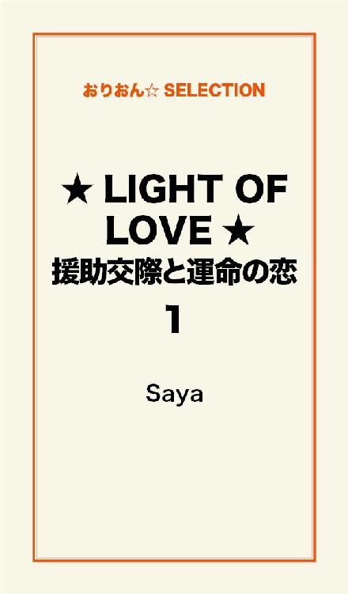
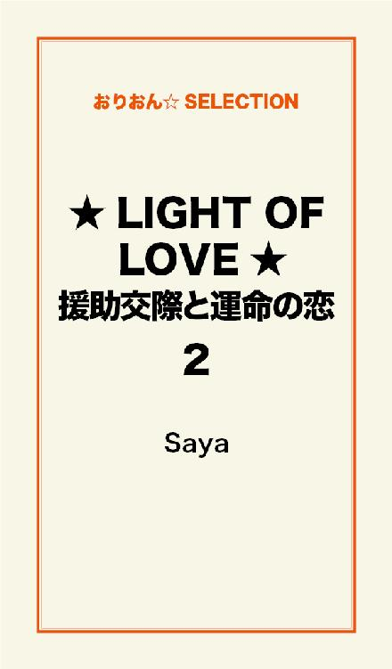
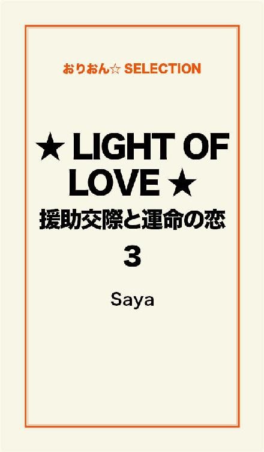

| ★LIGHT OF LOVE★援助交際と運命の恋 完全版 | |
| Saya | |
この本は横書きでレイアウトされています。
また、ご覧になる機種により、表示の差が認められることがあります。

闇の中を
たった一人で
さまよいつづけていた
誰にも心を許すことなく
誰にも笑顔を見せることなく
誰にも涙を見せることなく
誰かを信じることなく
誰かを愛することなく
心に映るのは
深い闇だけ......
ヒカル......
あなたがくれた愛の光
ここは、オレンジがかった電灯の灯る、狭いラブホテルの部屋の中――。
あたしは鏡を見ながら、両手で軽く髪をととのえる。
きれいにコテで巻いたブラウンの髪。
この街に初めて来たとき、あたしの髪はまっすぐな黒髪で、染めたことも、巻いたこともなかったっけ......。
ふと、そんなことを思い出す。
どうせこれから髪の毛なんて乱れるんだから、こんなにきちんとセットしても仕方がないんだけど......。
心の中でブツブツ言いながらも、いつもきちんと巻いてしまうのが、あたしのクセだ。
少しして、あたしの上着のポケットの中から、携帯電話の着信音が元気よく鳴るのが聞こえた。
あたしは急いで携帯を手に取り、仕事用の高い声で電話に出る。
「はい、リリカです」
「リリカ、お客様がご到着だ」
電話越しの声は、聞きなれた男の低い声。
「初めてのお客様だから、丁寧にね」
「分かってますよ。まかせて下さい」
そう答えて、あたしは携帯を切った。
あたしは派手な水玉模様のベッドカバーに包まれたベッドを見下ろした。
二つのまくらがあたしを待ち受けるように、そこに置かれている。
いつもそうだ。
客が来る前になると緊張する。
もういい加減、そろそろ慣れてもいいはずなのに、いまだに慣れようとしない自分がいることが、腹立たしく感じられたりする。
あたしはしゃんと背筋を伸ばし、強張った体をほぐすように両腕をそっとさすった。
しばらくしてドアが開いた。
ドアの外から、見知らぬ中年男が部屋の中に入ってきた。
おなかが少し出ていて、頭のはげかけた部分を隠すように、耳の辺りの髪の毛をすくって、頭の上に乗せている。
顔には丸メガネをかけている。
ばっちりスーツを着ていることからして、どこかの会社に勤めるサラリーマンのおじさんといった感じ。
あたしは仕事用の作り笑いをし、客に向かっておじぎをすると、できるだけ甘い声になるよう、心がけながら言った。
「はじめまして。リリカと申します。よろしくお願いしまーす」
「ああ」
中年男は返事と呼ぶにはあまりに短い、牛のようなくぐもった声を発した。
男の視線はまさぐるように、あたしを見ている。
あたしの顔ではなく、体を――。
あたしはただの商品。
安っぽいカタログから商品を選ぶように、数いる女の子たちの中から、たまたま外見が好みだという理由で、この中年男に選ばれただけ。
あたしは金で買われた物と同じだ。
でもあたしは自分の意思で、そうなることを選んだの。
理由は簡単。
すべてはお金のため。
お金のためなら、何だってやるとあたしは決めたの。
あたしが欲しいのはお金だけ......。
他には何にもいらない。
中年男があたしに近寄ってきた。
これからされることは、何もかも分かっていた。
着ているものを脱がされ、ベッドの上で、客の欲望を満たすための道具になる。
感じているふりをして、声を上げて、客を喜ばせる......。
あたしは、ただの道具なの......。
あたしがやっていること――。
それは遠まわしの言葉で言えば、援助交際。
ズバリ言ってしまえば、体を売ることだ。
違法だと承知の上で、とある人物から援助交際の相手を紹介されている。
今では、これが仕事みたいになっている。
ううん......、仕事みたいじゃなくて、これが今のあたしの仕事だ。
あたしは客からは、リリカという名前で知られている。
もちろんこの名前は、本名じゃない。
今では本名よりも、この名前で呼ばれることの方が多いけれど......。
須藤美輝――。
それがあたしの本名だ。
あたしの本名なんか、もう死んだのも同然。
この名前であたしを呼ぶ人、というよりこの名前を覚えている人自体、ほとんどいない...。
あたしがリリカになる前、つまりあたしがまだ美輝という名前で呼ばれていた頃、あたしはさびれた小さな田舎町に住んでいた。
あたしの家は、まるでウサギ小屋みたいに、狭くてぼろい家だった。
家にはテレビもラジオもなくて、冬になると隙間風がひどかった。
あたしには父親はいなかった。
いるのは、母親だけだった。
あたしの母は、男にすがって生きているような女だった。
家には常に母の男がいて、そいつはしばらくすると、別の男に変わっていた。
あたしは母の男たちが嫌いだった。
どの男もろくでなしで、酒ばかり飲んでいるようなやつばかりだった。
あたしの父親も、こんな男たちのうちの一人かと思うと、吐き気がした。
母はあたしのことには、まったく無関心だった。
あたしは母から愛情のようなものを、受けたことは一度もない。
真面目に怒られたことさえない。
かまってほしくて泣き叫んでも、外にほっぽり出されるだけ。
母にとって、あたしはいらない子供なのだと、幼いながらにあたしは気づいていた。
母が手料理を作ってくれたことなんて、一度もなかった。
食事はカップラーメンかコンビニのおにぎりばかりだった。
ときにはろくに食べさせてもらえず、おなかがすいてたまらないこともあった。
そんなときは、ただ飢えに耐えているしかなかった。
あたしの家の近くには、定食屋があった。
そこからおいしそうなにおいがしてくると、たまらず定食屋にかけよった。
ある時、あたしより２歳年上の定食屋の息子の太一が、食べ物の残り物を分けてくれたことがあった。
あたしには、それが嬉しくてたまらなかった。
それからもちょくちょく、太一はあたしに食べ物を持ってきてくれた。
あたしには、家にも学校にも居場所がなかった。
家では母から無視され、学校ではウサギ小屋のような家に住んでいるという理由で、いじめられた。
そんなあたしを相手にしてくれたのは、太一だけだった。
太一は心優しくて、あたしのことを心配してくれた。
いつしかあたしは、太一に信頼を寄せるようになっていった。
小さい頃はお兄さんのように感じていたその気持ちは、成長するにつれて、好意に変わり......いつしか淡い恋心のようになっていった。
太一だけは、あたしのことを大切に思ってくれていると信じていた。
でもあたしが15歳のとき、太一に抱いていた純粋な想いは、無残に打ち砕かれてしまった。
いつものように太一から食べ物の残り物を分けてもらい、それを食べ終わったときのことだった。
太一がふいに思いがけないことを言った。
「おい、美輝、たまには金払えよ」
「えっ......？」
あたしは驚いて、太一の顔を見た。
「おれが何年間、おまえを食わせてやってると思ってるんだ？」
太一は冷たい声で言った。
「で、でも......、これは残り物で、捨てるのはもったいないから、あたしにくれるって......」
あたしはおずおずと言った。
「世の中、何でも金で回ってるんだぜ」
太一はこれまで一度も見せたことのない、鋭い目つきであたしを見た。
「小さい頃は、おまえがあわれだから、ただ食いさせてやってたけど、今後もずっと金払う気ねえなら、もうやらねぇよ」
あたしがずっと太一に甘えてきたのは事実。
でもこんなふうに突然、お金を要求されるなんて......そんなこと思いもしなかった。
どう答えていいのか分からず、ひざの上で両手を握り締めたとき、あたしは太一が異様な目つきで、あたしの体をじろじろと見ていることに気づいた。
「金がねえなら、おまえの体で払ってくれてもいいんだぜ」
太一のその言葉に、あたしは言葉を失った。
「これまで食わせてやったんだから、それくらい安いもんだろ？」
「変なこと言わないでよ......！」
あたしはやっとのことでそう言った。
体が震え出す......。
「おまえ、おれに惚れてるんだろ？」
太一が耳元でささやいた。
「おれ、ずっと前から気づいてたぜ。だったら、やらせろよ」
太一にぐいっと肩をつかまれ、あたしは悲鳴を上げた。
けれどもすぐに口をふさがれ、あたしは声を出すこともできなくなった。
体だけが、ガタガタ震えている。
あたしは、太一のことが好きだった。
それは紛れもない事実。
でもあたしが好きだったのは、いつも優しい太一だった。
こんなに醜くて、野蛮な男なんかじゃない。
初恋の人から、レイプされるなんて......。
ただ悲しくて、辛いだけ......。
愛情なんかこれっぽっちもなくて、あるのは汚い欲情だけ......。
どんなに泣き叫んでも、やめてくれない......。
太一のことを、ずっと信頼していたのに......。
この人だけは、あたしの味方だと思っていたのに......。
あたしの身も心も何もかも傷つけ、太一はゴミをポイ捨てするように、あたしをその場に置き去りにした。
そして何も言わずに立ち去っていった。
あたしはその場にうずくまったまま、一人で泣いていた。
体に残る痛みよりも、心に負った傷の方が何百倍も痛かった。
太一がなぜ、あんなにも変わってしまったのか、あたしには分からない。
近所のおばさんたちが、太一は悪い連中と付き合うようになって、万引きや盗みを繰り返しているらしいと噂しているのを聞いた。
あたしには真相は分からない。
その原因が何なのかも分からない。
あたしに言えることはただ一つ。
優しかった太一はもういない......。
あたしには、頼れる人はもう誰もいない。
信じられる人は、もう誰もいない。
助けてくれる人は、もう誰もいない。
あたしは一人ぼっち......。
太一が口にした言葉が頭の中で回る。
『この世は、金で回ってるんだぜ』
というあの言葉。
結局は、お金。
何もかもがお金、お金......。
お金さえあれば、今の最悪な暮らしから抜け出せる。
お金さえあれば、何でも欲しい物が買える。
お金さえあれば......。
その頃から、あたしの心のなかで、お金を得ることへの欲求が徐々にふくらんでいった。
あたしは働きたいと思った。
でもあたしはまだ中学三年生。
まだ働ける年齢には達していない。
中学校を卒業するまで、あと数ヶ月ある。
年齢を偽って、アルバイトを探しに行ってみた。
でもあたしは背が低くて、童顔だったから、すぐに中学生だと見破られてしまった。
皆、中学校を卒業したら、また来るようにと言った。
でもあたしには今、お金が必要なの。
太一にはもう頼れない。
母親なんか、論外。
だから食べ物を買うお金だって、必要なの。
どうしてもお金が必要なの......。
そんなとき、あたしはある男に出会った。
そしてその男に出会ったことが、あたしのこれからの運命を大きく狂わせていくことになる――。
学校からの帰り、家に帰らずに、ぶらぶらと町を歩いていたときだった。
あたしはその男に声をかけられた。
肌の色は浅黒く、背が高い。
頭には山高帽を被り、ブランド物のスーツに身を包んでいる。
金持ち風ではあるけれど、威張った感じはしない。
年は40代くらいだろうか。
その年代にしては痩せていて、どこか紳士的な雰囲気を漂わせていた。
「そこのお嬢さん」
男はあたしに呼びかけた。
「ちょいといいかな？」
「何ですか？」
あたしは立ち止まった。
このとき立ち止まって、男に返事をしなければ、あたしの人生はまったく別の人生になっていたかもしれない......。
「もし３万円あげるって言ったら、きみはホテルに行く？」
男のその言葉に、あたしはとまどった。
この男は、あたしに援助交際を持ちかけている。
しかも『何食べる？』みたいな、ごく軽い質問をするように。
「うーん......」
あたしはとっさに曖昧な返事をした。
「こうされたら、どうする？」
男はいたずらっぽい笑みを浮かべ、コートの内ポケットから財布を取り出すと、財布を開けて、財布の中から札束を取り出した。
そしてあたしに向かって、札束を振ってみせた。
ちょうど３万円。
あたしは目を見張った。
「きみは誘いに乗る？ それとも断る？」
男が問いかける。
あたしの頭の中で、二つの気持ちが戦っている。
一つは、お金が欲しいという強い欲求。
もう一つは、もう誰にも体をさわられたくないという率直な気持ち。
そして......あたしの頭の中で、前者が勝った。
太一に汚されたこの体。
あと一回くらいなら、汚されても構わない......。
それでお金がもらえるのなら......。
それで欲しい物が買えるのなら......。
その気持ちが本心かどうか問われれば、嘘になる。
でもあたしは生きていかなくちゃならないの......。
もう誰も頼れる人はいないの......。
だから、
「乗ります」
あたしは一言そう答えた。
男はうなずいた。
そしてあたしたちは一つの目的へ向かって、一緒に歩き始めた。
この田舎町に一軒だけぽつんと建つ、わりと上品なホテル。
そのホテルの一室に入るのは、もちろんあたしにとって初めてのことだ。
しかもスイートルーム。
この男はよほどの金持ちなのかなと、そんなことを考えていると、男が近寄ってきて、後ろからあたしを抱きしめた。
「きみ、経験ある？」
男に耳元でそうささやかれ、あたしは小さくうなずいた。
あたしの初体験なんか、思い出したくもないけれど......。
「そうか。それなら、やりやすい」
男はあっさりそう言うと、あたしをベッドに連れて行った。
メモ用紙か何か取り出すように、男がさっとシャツの胸ポケットから取り出したのは、コンドームだった。
恥ずかしいと思う間もなく、男の手が慣れた手つきで、あたしの体から制服を、そしてその下の下着をはぎとっていく。
その手が、女の子を買うのは初めてではないことを、無意識のうちに物語っていた。
裸で寝かされたとき、ふいにあたしの体がびくっと震えた。
太一にレイプされたときの恐怖が蘇る......。
すると、男はあたしの頭を優しくなでて、こう言った。
「何も怖がらなくていい。わたしは客だ。きみは、与えられた仕事をこなせばいい。ほら、深呼吸をして」
あたしは深呼吸をした。
深呼吸をすると、不思議と体の震えが止まったようだった。
それから男の腕があたしの体を抱いた。
知らない男のにおいが、あたしを包む。
知らない男の手が、あたしの肌にふれる。
あたしは目を閉じた。
もうどうなっても構わない......。
ただ欲せられるままに、あたしの体を与えるだけ......。
あたしはカーテン越しの光で目を覚ました。
一瞬、自分がどこにいるのか分からず、辺りを見回すと、あたしは一人でベッドにいることに気づいた。
そして昨日のことを思い出した。
あたしは知らない男に声をかけられて、金と引き換えに、初めて自分の体を売った。
あまりよく覚えていないけれど、やけに疲れた気がする......。
終わったあとは、そのままベッドの上で眠ってしまったのだ。
あの男はどこにいるの？
ぐるりと見回すと、あたしは窓辺のソファーでコーヒーを飲みながら、男が新聞を読んでいるのを見つけた。
ぱりっとしたスーツに身を包んでいて、昨日と同様、紳士的な雰囲気を漂わせている。
この清潔感たっぷりの男が、中学生の女の子を買うなんて、誰が想像できるだろう？
「やぁ、起きたか。おはよう」
男はさわやかに挨拶した。
「おはようございます......」
あたしは挨拶を返した。
ベッドのそばの棚の上には、制服がきちんとたたまれて置かれている。
この男がたたんでおいてくれたようだ。
あたしは急いで制服に着替えると、男の座っているソファーのところに行った。
男はあたしがやって来ると、３万円の入った封筒を差し出した。
「きのうは、楽しませてもらったよ。さぁ、代金だ」
「は、はい......」
あたしは急いで、封筒を受け取った。
生まれて初めて触れる万札......。
指先が震えそうだった。
普通の子にとっては、３万円なんてそんなに大金ではないのかもしれない。
毎年、お年玉で数万円もらう子もいる。
でもあたしにとっては、大金だった。
「でも次からは、先にお金を受け取るようにしなさい。そうしないと、客に逃げられてしまうことがあるからね」
男は淡々とした口調で言った。
「はい......」
あたしはうなずきながら、ふとあたしは、次もあるのだろうかと考えていた。
ううん、きっとこれが最初で最後だろう......。
「じゃあ、あたしはこれで......」
あたしは軽く男に頭を下げると、男の顔も見ずに、そそくさと部屋から出て行った。
この時は、もう二度とこの男に会うことはないと思っていた......。
そしてお金と引き換えに、体を売ることも......。
今日は土曜日の朝。
人通りは少なかった。
あたしはホテルから、まっすぐ家に帰った。
「ただいま......」
玄関でそうつぶやいて、あたしは家に上がる。
だけど返事はない。
母があたしに、
「おかえり」
と言ってくれたことなんか、一度もないのだから......。
母は恋人と酔いつぶれて、居間で寝ている。
あたしがきのう家に帰って来なかったことさえ、気づいていないだろう。
あたしはカバンの中から、３万円の入った封筒を取り出した。
このお金は、絶対に母に見つかってはならない。
もしも見つかってしまえば、母が酒代に使ってしまうだろうから......。
あたしは封筒から１万円だけ取り出し、残りの２万円は残したまま、封筒を押入れの中の古い布団の一番下に隠した。
この布団はもう何年も使われずに、押入れの中に入れっぱなしになっている。
ここなら、母に見つかることはないだろう。
あたしは無駄遣いせずに、大切にお金を使った。
ほとんどは、食費に消えた。
けれどもどんなに節約しても、お金はいつか尽きてしまう。
あたしは手元に最後に残った小銭を見つめて、ため息をついた。
生きていくためには、お金が必要。
でもお金は、もうこれだけしかない......。
何とかして、お金を手に入れなければ......。
でもどうやって......？
あたしの脳裏に、あの男に体を売ったときのことがよぎった。
あのときは、もうやらないと思っていた。
でもお金を手に入れるには、再びやるしかない......。
それから一週間後......。
あたしは見知らぬ男とラブホテルの近くで待ち合わせをしていた。
相手は、母の携帯電話から、こっそりアクセスした怪しげなサイトで知り合った男だった。
男は約束の時間にやってきた。
30代の小太りの男だった。
本来、中学生はラブホテルに入れないことになっているが、止められなかった。
ホテルの従業員は、違法なことをやめさせるよりも、利益が最優先なのだろう。
あたしはお金と引き換えに、知らない男に抱かれた。
お金はあのとき、あの男に忠告された通り、先に受け取った。
おたがい本当の名前も知らない。
住んでいる場所も知らない。
どこで何をしているのかも知らない。
知っていることは、ただ一つ。
セックスするために会ったということだけ。
それ以来、あたしはお金がなくなりそうになるたびに、見知らぬ男に体を売った。
いわゆる援助交際。
それは明らかな違法行為......。
慣れというのは、恐ろしい。
最初は嫌でたまらなかったのに、回を重ねるごとに、そんな感覚さえ薄らいでしまうのだから......。
そのような生活が数ヶ月間つづき、やがて季節は早春へと移り変わっていった。
３月、あたしは辛い思い出だらけの中学校を卒業した。
最悪ないじめっ子たちとも、ようやくおさらばできた。
あたしはもう普通に働ける。
春からは、どこかでアルバイトを始めよう。
もう援助交際からは、足を洗おう......。
そんなとき、思わぬ事件が起きた。
あたしは隠していた残りのお金を使おうと思い、押入れを開けたときだった。
あたしは愕然とした。
古い布団は消え、押入れの中はからっぽだった。
無論、お金の入った封筒はあとかたもなく消えている。
あたしは急いで母のもとに行くと、母に問いただした。
「押入れの中の布団は、どこにやったの？」
「そこの布団は捨てたよ。もう使うことはないからね」
母はぶっきらぼうに答えた。
「じゃあ、布団の下にあった封筒は？ どこにあるの？」
「封筒？」
「布団の下にあったでしょ？」
「ああ、あれね」
母は、ふふっと笑った。
「どこにあるの？ ねぇ、どこなの！？」
あたしは必死だった。
「ないよ」
「ないって......」
「誰が大きなお金を、あんなところに置いてたんだろうねぇ。さっそく使わせてもらったに決まってるだろ」
あたしは崖の下にドーンと突き落とされたような気持ちがした。
あたしが体を売って、ようやく手にしたお金。
あたしのお金を、勝手に使うなんて......！
そんなの泥棒と同じ......！
許せない......！！
「返してよ！」
あたしは叫んだ。
「あたしのお金、返してよ！！」
「あんたの金ねぇ」
母はあざ笑うようにあたしを見た。
「援助交際でもして、あんな大金もらったのかい？ まったく薄汚い子だねぇ。」
「そうさせたのは、誰よ！」
あたしは叫んだ。
「体を売りたくなんかなかった。でもそうするしかなかったんじゃない！！」
「ふーん、そうかい。使われたくなかったなら、もっとましな場所に隠すべきだったね。子供の金は、親の金さ。親のわたしが使って、何が悪い」
母のその言葉に、あたしの心の中で、かろうじて持ちこたえていたものが、ガシャリと崩れ落ちた。
もう我慢できない......！
もうこれ以上は......！！
「何が、親だ！！」
あたしは母をにらみつけた。
「あんたなんか、親じゃない！！ 一度だって、親らしいことなんか、したこともないくせに！！ あんたに親なんて言う資格なんかない！！」
「わたしは親になんか、なりたくなかった」
今度は母が、あたしをにらみ返した。
「子供なんか欲しくなかった。子供なんかいても、じゃまなだけだ。おまえは、いらない子供なんだよ！」
「だったら、産まなきゃよかったじゃない！！」
あたしは両手で母を突き倒すと、靴もはかずに家から飛び出した。
泣きながら、めくらめっぽうに走った。
走っているうちに、石ころにつまずいて、あたしは土手の草むらの中に倒れこんだ。
膝をすりむき、血が出ている。
裸足で走ったので、足の裏も傷だらけだ。
あたしはその場に座り込み、泣きつづけた。
あたしはずっと分かっていた。
母があたしのことを、いらない子供だと思っていることを。
でもただそう感じているのと、あからさまに言われるのは違う......。
母の言葉は刃のように、あたしの心にぐさりと突き刺さった。
生涯、消えることのない、深い傷跡を残して――。
やがて辺りは、夕暮れ時になった。
おなかがすいても食べる物はない。
もう帰る場所もない。
母のいる家になんか、もう二度と帰らない......。
どうしてこのときあたしは、誰かに助けを求めることを思いつかなかったのだろう......？
このまま泣きながら、警察に駆け込むことだって、できたはずなのに......。
ひどい母親のことを話し、あたしを保護してくれるように頼むことができたはずなのに......。
そしてあたしはどこかの施設に預けられて、まっとうな人生を歩むことができたかもしれないのに......。
けれどもそのときあたしは、考えてみたこともなかった。
児童虐待や育児放棄などを受けている子供を保護するための施設があることを。
そしてあたしが母から受けていたこと......それこそがまぎれもなく児童虐待だったということを。
虐待は暴力だけではない。
子供に食事を食べさせない、世話をしない、無視をする......。
暴力ではない虐待も、この世界のいたるところで存在するのだ。
途方にくれていたとき、ふいにバイクが止まる音がした。
「おい、美輝、久し振りだな」
バイクに乗っていた誰かが、あたしに話しかけてきた。
あたしは後ろを振り返った。
そこにいたのは太一だった。
こんな最悪な気持ちのときに、最悪な男に会うなんて......。
あたしは太一を無視した。
すると太一は再び話しかけてきた。
「おまえ、あのひどい母親のとこ、やっと飛び出したのか？」
あたしは太一を無視しつづけた。
「おい、返事くらいしろよ」
太一はバイクから降りて、あたしのとなりにやってきた。
「おまえ、まだあのこと怒ってるのか？ あの時はなんかさ、ただ勢いでやっちまっただけだよ。おまえを傷つけるつもりなんかなかったんだ。だから、ごめん」
あたしはびっくりして太一を見た。
太一がレイプしたことを謝っている......。
「おまえ、行くとこないんだろ？ それなら、おれのところに来いよ。おれ、今は一人暮らししてるから、おまえを泊めるスペースくらいはあるぜ」
「えっ？」
「おれのことろじゃイヤか？ もうおまえにあんなことしないからさ。だから安心して泊まりに来いよ。おれたちは小さい頃から、兄妹みたいなもんだろ？」
太一からの突然の誘い。
あたしは迷った。
太一はあたしを傷つけた男。
でもあたしには、どこにも行く場所がない。
どこでもいいから、居場所が必要。
太一は今、あたしに謝ってくれている。
もうあんなことはしないって言っている。
それに太一は、あたしにとって初恋の人。
一度は好きだった人。
だからもう一度、太一を信じてみようかな......？
「じゃあ、行ってもいい......？」
あたしは思い切って、太一にたずねた。
「当たり前じゃん」
太一はにやっとした。
「さぁ、行くぜ」
太一はあたしの手を取り、あたしは立ち上がった。
太一はバイクの運転席に座り、あたしは太一の後ろに座った。
エンジン音がして、バイクは走り出した。
太一の住むアパートは、となり町に建っていた。
いかにも古そうで、外壁が少しはがれているところもある。
おそらく家賃は安いのだろう。
あたしたちは、一緒にカップラーメンを食べた。
太一は優しくて......、まるで昔の太一が戻ってきたようだった。
本当にあのときはただの気の迷いで、太一はあたしを傷つけるつもりなんかなかったのかもしれない......。
本気でそう思えるくらいだった。
夜になり、シャワーを浴びたあと、太一は畳の上に布団を敷いてくれた。
太一は台所の床に布団を敷いて寝るつもりらしい。
「じゃあ、おやすみ」
太一はそう言って、電気を消した。
「おやすみ」
あたしも言った。
そして目を閉じた。
太一はあたしをもう傷つけない......。
あたしはそう信じていた......。
真夜中、あたしはふいに目を覚ました。
何か大きなものが、あたしの上に覆いかぶさり、荒々しい二つの手が、あたしの体を押さえつけている。
「キャッ！」
あたしは悲鳴を上げた。
「静かにしろよ」
暗闇の中で、太一の声がする。
「もうやらないって言ったじゃない！」
あたしは今にも泣き出しそうな声で叫んだ。
「静かにしないと殺すぞ」
太一の冷酷な声が響く。
あたしは泣き出した。
ただただ悲しくてたまらなかった。
抵抗することさえできなかった。
太一の欲望が過ぎ去るまで、ただずっと泣きつづけていた。
知らない人とお金をもらってやるなら、お金のためだって割り切ることだってできる......。
でも太一に再び犯されるなんて......。
もう一度、太一を信じようと思っていたのに......。
翌朝、太一はあたしを部屋に残したまま、仕事に出かけた。
太一は工事現場で働いている。
あたしはすぐにでも、アパートから逃げ出したかった。
ところがあたしはあることに気付いた。
アパートの鍵が開かない......。
普通は内側から開けられるのに、もう一つ別の鍵が取り付けられている......。
あたしは閉じ込められていた......。
それからが地獄のような日々の始まりだった。
夕方になると、太一が戻って来た。
太一はあたしに料理を作るように命じた。
あたしは太一の言うことは聞かずに、外に出してほしいと訴えた。
でも太一はあたしを部屋から出してくれなかった。
それどころか、あたしを殴った。
優しかった太一は、本当にいなくなってしまったのだとあたしは悟った。
今の太一は、鬼だ......。
人の心なんか、これっぽっちも持っていない......。
あたしをどんなに傷つけて、痛めつけても、何とも感じない......。
あたしは太一に従うしかなかった。
太一に命じられるままに家事をし、昼も夜もずっとアパートの部屋に閉じ込められていた。
言うことを聞かないと、太一はすぐに殴った。
ときには、太一のイライラのはけ口として、理由もなしに暴力をふるわれることもあった。
何度か窓から逃げ出そうとしたけれど、アパートの部屋は三階だったので、とても飛び降りるのは無理だった。
あたしはあのとき太一を信じたことを後悔した。
後悔してもしきれなかった。
こんなことになるなら、太一のところになんか来なかったのに......。
殴られたところが、毎日ひりひりと痛む。
ときには血がにじんでいることもあった。
太一からはもし逃げ出したら、見つけて絞め殺すと脅された。
あたしは恐怖のあまり、ついには逃げることさえ、諦めてしまった。
太一の命令を聞き、いつまた暴力をふるわれるのかと怯える日々......。
一体、どのくらいの間、このような日々がつづいたのだろう。
ある暖かい日の午後、誰かがドアの鍵を開ける音がした。
太一はまだ仕事中のはず。
でももしかしたら、今日は早めに仕事が終わったのかもしれない......。
あたしはおそるおそる、ドアの方を見た。
ドアが開いた。
そして部屋に入ってきたのは......太一ではなく、見知らぬ男の子だった。
その男の子は、驚いた表情であたしを見た。
年は17か18くらい。
黒いパーカーにジーンズをはいている。
髪は艶やかなライトブラウン。
耳には銀のピアスをつけている。
そして顔は......あたしは思わずその顔を見つめてしまう。
前にコンビニで見かけた、雑誌の表紙を飾るアイドルみたいにかっこいい。
でもどこか素直で穏やかに見えるのは、優しげな瞳がきらきらと輝いているからかもしれない。
「誰......？」
あたしは小声でその男の子にたずねた。
「誰......？」
男の子もそっくりそのまま、あたしにたずね返した。
「あたしは......」
あたしは言いよどんだ。
「もしかして、太一の彼女？」
男の子はたずねた。
あたしは何も答えなかった。
本当のことを言ったら、太一に何をされるか分からない......。
「おれは、太一のいとこ。ヒカルっていうんだ」
男の子は名乗った。
「こっちに来たついでに、太一のところに寄ることにしたんだ。前に合鍵をもらってたし。きみは？」
「あたしは美輝......」
あたしも名乗った。
「上がってもいいかな？」
「うん、どうぞ......」
あたしはヒカルを部屋に上げた。
初めて会ったヒカルに対して警戒心が湧かなかったのは、彼の優しげな瞳を見て、嘘をつく人ではないと、直感的に感じたからかもしれない。
ヒカルは畳の上にあぐらをかいて座った。
あたしはヒカルから少しはなれたところに座った。
「太一は、最近どう？」
ヒカルはあたしに言った。
「あいつ、前はすごいいい奴だったけど、ここ数年で変わっちまったんだよな。まぁ、あんなことを聞いたら相当ショックだろうし、荒れても仕方ないのかもしれないけどさ......」
「あんなこと......？」
「うん。太一が実は、父親の浮気相手の子供だったって話さ。太一は自分が母親の本当の子供じゃないってことを、親戚が話してるのを偶然聞いて、相当ショックを受けて......。それ以来すっかり変わっちまったんだよ。何もかも忘れるために、色んな悪さしてさ......。今は真面目に工事現場で働いてるらしいけど、まだ悪さはつづけてるんじゃないかと思って、内心心配なんだよな......」
「そ、そうだったの......」
あたしは初めて知った。
太一が変わってしまった理由を......。
「ところできみは、なんで太一のとこにいるの？」
少しして、ヒカルはたずねた。
「えーっと......」
あたしは言いよどんだ。
「彼女じゃないなら友達？」
「うーんと......」
「それとも、人には言えないような関係だったりして？」
ヒカルは冗談っぽく言った。
「......」
そのとき、ヒカルの表情が急に変わった。
あたしが隠したときには遅かった。
ヒカルはあたしの手をつかみ、洋服の袖をまくりあげた。
そこにはきのうの夜、太一から殴られたときのあざが残っていた。
「もしかして、太一に殴られたのか？」
ヒカルはたずねた。
あたしは何も答えずにうつむいた。
「そうなんだな？」
ヒカルはあたしを見つめて問いかけた。
あたしは黙っていた。
「本当のことを教えてくれ」
ヒカルはあたしの肩に、そっと手を乗せた。
「太一から殴られたんだろ？ そうなんだろ？」
ヒカルの真剣な眼差しに見つめられ、どうしてもヒカルには嘘をついてはいけない気がして......、ついに、あたしは小さくうなずいた。
「こりゃ、ひどいな。まさか、太一がそこまで落ちぶれてたとは......。でもなんで、きみはここから逃げ出さないんだ？」
「鍵かけられて......、閉じ込められて......。逃げたら、絞め殺すって言われたの......」
「今から逃げよう」
ヒカルは思いがけないことをあたしに言った。
「でも......」
あたしは首を横に振った。
「逃げたら太一に殺されるよ。あたし、怖い......」
「ここにいたほうが、危険じゃないか。それこそ、太一に殴り殺されるかもしれない。おれが安全なところに連れてってやる。だから逃げよう」
「で、でも......」
「じゃあ、おれがきみをさらう。だからきみは逃げたんじゃない。おれにさらわれたんだ。それなら、太一だって文句は言えないだろ？ さぁ、行こう。殴られた女の子をほっとくことなんて、おれにはできないよ」
ヒカルはあたしの手を取り、あたしを立たせた。
それからヒカルはあたしを連れて玄関に行き、あたしの靴が見当たらなかったので、かわりにその辺にあったスリッパを履くようにうながした。
それもそのはず。
ここに来たとき、あたしは、はだしで家を飛び出してきたのだから......。
「太一に見られないかな......」
あたしは不安でたまらなかった。
「大丈夫。さぁ、行こう」
ヒカルはあたしの手を引っ張って、アパートの階段をかけ下りた。
そしてアパートの前に止めていたバイクの後ろにあたしを乗せた。
あたしの脳裏に、太一のバイクに乗って、ここにやって来たときのことが浮かんだ。
あたしは再びバイクに乗せられて、どこか知らないところに連れて行かれようとしている。
でもヒカルは......、今の太一みたいに誰かを裏切る人じゃない......。
あたしを傷つけるようなことはしない......。
なぜ会ったばかりの人なのに、そう断言できるのか、具体的に説明することはできないけれど......、あたしには分かっていた。
ヒカルは信じられる人だと......。
ヒカルはバイクのエンジンをかけ、バイクを発車させた。
バイクは細い道路を突っ走っていく。
太一のアパートがどんどん後ろに遠のいていく。
もしもこのときヒカルが来てくれなかったら、あたしはずっと太一に監禁されていただろう......。
もしかしたら暴力に耐えられなくなって、自殺の道を選んでいたかもしれない......。
だからヒカル......、ありがとう......。
一体、どのくらいの間、ヒカルの背中につかまって、バイクに乗り続けていたのだろうか。
いくつもの見知らぬ風景を通り過ぎ、あたしは大きな街にやってきた。
数え切れないほどの車が道路を走り、歩道では人々が絶え間なく行きかっている。
電車の音も聞こえる。
駅が近いのだろう。
向こうの方には、桜並木が見えた。
桜並木はとっくに花の季節を終え、青々とした葉を茂らせている。
あたしは太一の部屋に閉じ込められていた間、季節の感覚がなくなっていた。
バイクはやがて大通りから角を曲がり、やや小さめの道路に入り、そこからさらに細い道路に入った。
そして一軒のアパートの前で停車した。
「さぁ、着いたよ」
ヒカルはヘルメットを脱ぐと言った。
「ここは知り合いのおねえさんのとこだから、安心だよ」
あたしはバイクから降り、辺りを見回した。
人通りはほとんどない。
灰色の建物がただ整然と立ち並んでいる。
「さぁ、こっち」
ヒカルはあたしを連れて、アパートの一階に行った。
そして一番右端のドアの前で立ち止まり、ベルを鳴らした。
少しして、誰かがドアを開けた。
「あら、ヒカル。どうしたの？」
中から女の人の声がした。
「あのさ、ちょっとわけアリなんだけど......、奈緒子さんに面倒みてほしい子がいるんだ」
ドアが大きく開いた。
あたしにも、中にいる女の人の顔が見えた。
ダークブラウンのゆったりとしたウエーブの髪。
年は20代半ばくらいだ。
「まぁ、一部屋空いてるから、泊めるスペースはあるけど......。とにかく上がって」
あたしはヒカルと一緒に、その女の人の部屋に入った。
部屋の中は、少し化粧品のにおいがした。
窓辺にはオレンジ色の花模様のカーテンが下がっている。
女の人はあたしとヒカルを椅子に座らせた。
それからジュースを出してくれた。
「奈緒子さん、ビールないの？」
ヒカルが期待を込めてたずねた。
「何、バカ言ってんのよ。未成年に酒飲まして、そのまま飲酒運転させたら、わたしまで警察に罰金払わされかねないんだからね」
女の人が呆れ顔で言った。
「はいはい、冗談だよ」
「ところでヒカル、この子をここに連れて来たいきさつを教えてくれない？」
ヒカルはいとこの太一の家で、偶然あたしに会ったこと。
あたしが部屋に監禁されて、太一から暴力を受けているようなので、ほうっておけずに、とりあえずここに連れてくることにしたことを話した。
あたしはヒカルのとなりで、まるで他人事のようにその話を聞いていた。
「それは、大変だったね」
女の人はヒカルではなく、あたしに向かって言った。
「ここなら、安全だよ。わたし一人しか暮らしてないし、その太一とかいう暴力男に居場所を知られることもないだろうから」
「ありがとうございます......」
あたしはお礼を言った。
「わたしは奈緒子。あんたは？」
「美輝です」
「じゃあ、美輝って呼ばせてもらうね。わたしのことは、姉貴みたいな感じだと思ってくれたらいいから」
「はい」
「それじゃあヒカル、ちょっとあっち行ってて」
奈緒子さんがヒカルに命じた。
「は？ なんで？」
ヒカルはきょとんとした。
「美輝の殴られたとこに、薬塗るから。あんたがいたら、美輝が脱げないでしょ」
「あっ、そっか。じゃあ、おれは家に帰るから。美輝ちゃん、またね」
ヒカルはあたしに向かって微笑み、手を振った。
「ヒカルくん、どうもありがとう」
あたしもヒカルに向かって、手を振り返した。
これがあたしとヒカル......、そして奈緒子さんとの出会いだった。
～＊～
客とやることだけやったあたしは、ラブホテルを後にした。
時刻はすでに夜中の２時を回っている。
空気がひんやりと冷たくて、あたしはファーのついたコートの襟元に手をやり、きゅっと喉に押し付けた。
ふわふわしていて気持ちがいい。
こんな普通の感覚が、まだあたしにも残っているなんて、何だかちょっと不思議な気がする。
その時、手首にかけたブレスレットが、しゃらんと手首から腕へとすべった。
あたしはどきっとした。
そして思わず立ち止まり、コートの袖をめくって、ブレスレットを見つめた。
ブレスレットの金のチェーンがきらきらときらめく。
チェーンには、ローズクォーツでできたハートの飾りがついている。
ローズクォーツは愛の石――。
あたしの目から一滴の涙が流れ、薄紅色のハートの上に落ちた。
ヒカル――。
「こりゃ、ひどいね」
奈緒子さんは、あたしの服を脱がせながら言った。
「こんなに殴られて......。かわいそうに......」
奈緒子さんは殴られたところに、ぬり薬を塗ってくれた。
それが終わると、奈緒子さんは台所に行き、残り物のシチューを温めてくれた。
あたしはとてもおなかがすいていることに気付いた。
シチューはとてもおいしくて、すぐにたいらげてしまった。
「美輝、年はいくつなの？」
奈緒子さんがたずねた。
「15歳です」
あたしは答えた。
「まだまだ若いね。わたしは26。看護師だよ。毎日患者さんたちの世話に明け暮れる日々」
「そうなんですか。あの......、ヒカルくんは学生なんですか？」
「ヒカルが学生？」
奈緒子さんは噴き出した。
あまりに予想外の質問をされて、笑ってしまったようだった。
あたしは変なことを聞いたのかなと、首をかしげた。
「ヒカルはホストやってるよ」
「ホスト......ですか......」
「人気あるらしいよ。でもヒカルの話によると、店長に言われてたまにヤバイ仕事もさせられたりしてるみたいだけど」
「ヤバイ仕事って......？」
「つまり客に気に入られて、体を売ったりもしてるってこと。金目的で、ヒカルは断らずにやってるみたいだけど。わたしは早く足洗ったほうがいいって言ってるんだけど、何か事情があるみたいで、聞かなくってさ......」
「そ、そうなんですか......」
こういう話を奈緒子さんは、さらりと言ってしまう。
ヒカルがホストで、しかも体を売ったりしているなんて......。
かなり意外だった。普通の学生だと思っていたから......。
それにあの笑顔......。
とても夜の商売で生きている人には見えない......。
でもアイドル並みのかっこよさや、親しみやすい雰囲気からして、ヒカルはホストとしても人気があるのだろう......。
その日から、あたしは奈緒子さんの部屋で暮らすことになった。
奈緒子さんは仕事が忙しかったので、あまり家にいなかった。
あたしは少しでも、奈緒子さんのために何かしようと、掃除をしたり、食器洗いをしたりした。
奈緒子さんが寝ているときは、起こさないようにできるだけ静かにしていた。
ヒカルはよく奈緒子さんの家に遊びに来た。
奈緒子さんに会いにというよりは、あたしに会いに来ているようだった。
ヒカルは明るくて、少し昔の太一に似ているところがあった。
あたしたちは、すぐに仲良くなった。
二人でおしゃべりする時間は、すごく楽しかった。
その楽しい時間に水を差すようなことはしたくはなかったけれど......、あたしにはどうしても心に引っかかっていることがあった。
それは奈緒子さんから聞いたヒカルのこと。
こんなにたくさんおしゃべりしているのに、ヒカルの口からこのことが話題になることはなかった。
あるとき、あたしは何気なく、そのことを口にしてみた。
「そうそう奈緒子さんから聞いたんだけど、ヒカルくんって、ホストなんだってね」
あたしがそう言うと、ヒカルはちょっと驚いたような顔をして、
「まったく奈緒子さんはおしゃべりだなぁ......」
と言った。
「ヒカルくんは、かっこいいもんね」
「そうでもないよ」
あたしの言葉に、ヒカルは照れたような、少し困ったような顔をした。
「ホストって、大変？」
「まぁね。最近は、もうなれたけど......」
「ねぇ......、どうしてホストになったの？」
「金が必要だったから」
ヒカルはあたしの問いかけに対して、ため息をついた。
「親が借金取りに追われててさ......。妹はまだ小さいし......。それでおれも稼がなきゃって思ったわけ。中学卒業して、高校行くのはやめて、働き始めた。それで18になってすぐに、もっと稼ぐためにホストになったのさ。おれが今一番家で、稼いでる」
ヒカルはそう言って、笑ってみせた。
けれども彼の心の中には、複雑な想いが渦巻いていることに、あたしは気付いていた。
本当は、高校に行きたかった。
ホストになりたかったわけじゃない......。
「でもまぁ、ホストはまだましかな......」
ヒカルはぽつりと言った。
「えっ......？」
あたしは思わずヒカルを見つめた。
「ううん、気にしないで。単なる独り言」
ヒカルはふと我に返ったように、慌てて首をふった。
「もしかして......、あのこと？」
あたしはおずおずとたずねた。
「奈緒子さんからちらりと聞いたけど......、お客さんに体売ってるって......」
「奈緒子さん、マジでしゃべりすぎ」
ヒカルは笑っていたけれど、目は全然笑っていなかった。
「うん、そうだよ。たまにだけど。親には内緒でね。美輝ちゃん、引いた......？」
「ううん。そんなことないよ！」
あたしは大きく首を振った。
この話題を持ち出したことで、ヒカルを傷つけたのではないかと不安でたまらなくなった。
「だって......、あたしだってお金のために、援交やったことあるし......」
あたしにとって援助交際のことは、誰にも知られたくないあたしだけの秘密だった。
でもヒカルなら、あたしの気持ちを理解してくれるような気がした。
そして今この場で、そのことを打ち明けなければ......、あたしたちの間に、目に見えない深い溝ができてしまいそうで恐かった。
「そっか......」
ヒカルは小さくうなずいた。
「うん......」
あたしも小さくうなずいた。
「色々あったんだな......」
「うん......」
あたしたちはもうこれ以上、この話はしなかった。
家族のために、体を売っているヒカル。
母親から見放されて、体を売ったあたし。
あたしたちには共通点がある。
でも大きな違いもある。
それは、ヒカルが自分のためではなく、家族のために体を売っているということ......。
それだけ家族という存在が、ヒカルにとって大きなものだということ......。
あたしには想像できないくらいに......。
その後、あたしとヒカルの間で『体を売ること』が話題に上ることはなかった。
でもあの日以来何となく......、あたしたちの間にはお互い心の闇を知っているという、親近感のようなものが生まれていた。
ヒカルはあたしの前では、いつも気さくだった。
いつも自然と会話が進んだ。
あたしはヒカルと話すのが好きだったし、ヒカルもあたしと話すのが楽しそうだった。
だけどあの夜......、あたしはヒカルの違う一面を見てしまった。
夜10時頃、あたしは奈緒子さんから頼まれて、コンビニに買い物に出かけた。
そしてコンビニから出た帰り、あたしははたと立ち止まった。
ヒカルによく似た男の子を見たような気がしたから。
その男の子は光沢のあるスーツを着て、髪を整髪料でかためていた。
かっこよくて、色気があって、いかにも女の人にモテそうな感じだった。
彼のとなりには、ブランド物の洋服に身を包んだ30代くらいの女の人がいた。
二人は腕を組んで歩いている。
あたしは二人の姿を目で追った。
なぜかあたしの心臓がバクバクと鳴り始める......。
二人はしばらく歩道を歩いたあと、角を曲がって視界から消えた。
あたしは直感した。
あそこの角を曲がったところには、ラブホテルがある。
二人は、あそこに入ったのだと......。
何となく認めるのが嫌だったけれど、あの男の子は間違いなくヒカルだった。
ピアスのきらめきや、あの笑顔。
でも普段、あたしに見せる顔とは全然違う。
あのときのヒカルは、色男の顔をしていた。
つまりお金を稼ぐための偽りの顔......。
帰ってからも、あたしの頭からヒカルの姿が消えることはなかった。
そして一緒にいた女の人のことも......。
あたしには分かっていた。
ヒカルはあの女の人に買われたのだということを。
そしてラブホテルの部屋で、いやらしいことをして......、もらったお金の分だけ女の人を喜ばせて......。
考えたくもないのに、考えてしまう......。
あたしだって、前にヒカルと同じことをした。
知らない人からお金をもらって、セックスして......。
でもヒカルのこととなると、どうしてこんなに心が乱れるんだろう......。
それからあたしは、ヒカルに会うのがちょっとだけ辛くなった。
ヒカルと話していても、どうしてもあのときのことを思い出してしまう。
邪気がなくて、素直に笑顔を見せるヒカルと、あのときの色男のヒカルがどうしても重ならなかった。
ヒカルも何かを察したのか、あたしにこうたずねてきた。
「美輝ちゃん、どうかした？ おれとしゃべってて退屈？」
「ううん、そんなことないよ」
あたしは慌てて、首を振った。
「でも最近、なんか変だよ。何かあった？」
「うーん......」
「美輝ちゃん、おれには本当のことを話してくれよ。じゃないとおれ、気になってどうかなっちまうよ」
ヒカルは太一のところで初めてあたしと会ったときも、同じようなことを言った。
ヒカルにはごまかしても、すぐに見抜かれてしまう。
「あ、あのね......」
あたしは勇気を振り絞って、口を開いた。
「あたし、見ちゃったんだ......」
「見たって何を？」
「ヒカルくんが夜、お金持ちそうな女の人と歩いてるところ......」
一瞬、ヒカルの表情が変わった。
ひどく動転したような表情だった。
だけどすぐにヒカルの表情はいつもの表情に戻った。
ヒカルは軽くため息をつくと、笑ってこう言った。
「そっか......。見られちまったか......。美輝ちゃんにだけは、見られたくないって思ってたんだけど......」
「えっ......？」
「誰だって、好きな子にあんなとこ見られたくないだろ？」
沈黙が流れた。
あたしはヒカルの言葉に、どう反応すればいいのか分からなかった。
好きな子......？
好きな子って......？
「ごめん、困らせちまったね」
ヒカルは沈黙を破ると言った。
「今言ったことは、忘れてくれ......」
「えっ......？ ちょっと待って」
あたしは慌てて言った。
「ヒカルくんが好きな子って......、もしかして......あたしなの？」
「うん......」
ヒカルはうなずいた。
顔を見ると真赤になっている。
「そ、そうなの......」
あたしも顔がほてるのを感じた。
ヒカルがあたしのことが好きだなんて、思ってもみなかった......。
話の合う友達だから、よく会いに来るのだと思っていたし......。
「でもおれ、別に美輝ちゃんとどうこうなりたいわけじゃないんだ。ただそばにいて、見守っていられればそれでいいんだ。だいたいおれなんか、体売ってるし、美輝ちゃんと付き合う資格なんか全然ないしさ。美輝ちゃんだって、他の女と寝てるような男なんか、好きになれないだろ？ だからこうして、友達でいられるだけでいいんだ」
ヒカルは笑って言ったけれど、その表情の裏には諦めの色が見え隠れしていた。
そんなヒカルを見たとき......、あたしはなぜ、あの夜見たヒカルと女の人のことを考えると心が乱れるのか、そのわけにようやく気付いた。
それは......、ヒカルが他の女の人と寝るのが辛かったから......。
ヒカルには、あたしだけを見てほしかったから......。
あたしだけを想ってほしかったから......。
あたしは突然、わっと泣き出した。
色々な感情がぐしゃぐしゃになって、自分でも抑えられなかった。
「どうした？」
ヒカルはおろおろして、あたしを見つめた。
あたしはただ泣き続けることしかできなかった。
ヒカルは黙ったまま、あたしの背中をさすってくれた。
ようやく涙がおさまると、あたしは涙の雫を払って、ヒカルと向かい合った。
「あたしね......、あたしも......ヒカルくんのことが好きなんだと思う......」
あたしはやっとのことで口を開くと言った。
「でもね......、ヒカルくんが他の女の人とホテルに行くのが辛いのも事実なの......。そのことを考えると......、どうしようもなくっていうか......心が苦しくなっちゃうの......。あたし......、どうしたらいいのかな......。自分でもよく分からないの......」
「そっか......」
ヒカルはうなずいた。
「じゃあ、おれ決めた。もう体売るのはやめる」
「えっ？」
あたしは顔を上げて、ヒカルを見つめた。
「美輝ちゃんに辛い思いをさせてまで、あんなことやってられないさ。これからは、仕事はホストだけにする」
「でもいいの......？ でもお金いるんでしょ......？」
「金はホストだけで、何とかする。ほんとはホストもやめたいところだけど、今はまだやめられないけどさ......。こうしたら美輝ちゃんは、もう辛くならないかな？」
「うん......。でも......、」
ヒカルがあたしのことを考えてくれるのは嬉しかった。
でもあたしはためらった。
家族のために、お金がいるのに......。
あたしのために、やめてもらってもいいのかな......？
「そんな顔するなよ。おれは、美輝ちゃんに笑っていてほしいんだ」
ヒカルはそう言って、あたしの顔を両手で包みこんだ。
「ほら、笑って」
あたしはそっと笑顔を作った。
「やっぱ、笑ったほうが断然かわいい！！」
ヒカルもにっこり笑った。
それからヒカルは、あたしをぎゅっと抱きしめた。
ヒカルの体温が伝わってくる。
あたしもヒカルの体に腕を回して、抱きしめた。
初めて人の体温は温かいと感じた。
そして初めて誰かに愛される心のぬくもり。
ただずっとこうしていたかった。
「へーえ、あんたたちカップルになったの」
奈緒子さんは、あたしがヒカルと付き合うことにしたと聞いて、特に驚いた様子ではなかった。
当然のなりゆきとでも、思ったのかもしれない。
「まぁ、ヒカルはいいやつだし、美輝のこときっと大切にしてくれるよ」
「はい」
あたしは笑顔でうなずいた。
初めてのデートの日。
あたしとヒカルは、近くのカフェで時を過ごした。
あたしもヒカルも、いつもよりもちょっとだけおしゃれ。
あたしは奈緒子さんからかわいい髪留めを借りたし、ヒカルはヴィンテージっぽい味のあるジーンズをはいている。
お金がないから、あまり高いものは注文できなかったけれど、二人で一緒に飲むコーラはどんな飲み物よりも最高だった。
つい数日前まで友達だった人が、今は恋人。
何だかちょっぴり不思議な気もするけれど、多分あたしたちにとっては、そうなることが自然だったんだろう。
楽しい時間は、あっという間に過ぎてしまう。
ウエイトレスににらまれそうなくらい、一杯のコーラで長々とカフェに居座ったあと、あたしたちは公園の桜並木へと場所を移動することにした。
季節は梅雨に入っていたけれど、今日は珍しく晴れ。
まるであたしたちの気分そのものみたいだ。
あたしたちは桜並木の下にあるベンチに腰掛けた。
カフェではあんなにたくさんしゃべっていたのに、場所を移動したとたん、あたしもヒカルも急に口数が少なくなった。
時間もそろそろ夕暮れ時。
ヒカルはこれから仕事がある。
デートが終わる時間も近付いてきた。
「じゃあ、そろそろ帰ろうか？」
「うん、そうだね」
あたしたちは手をつないで歩き始めた。
ヒカルのバイクは奈緒子さんのアパートの前に置いてきたので、そこまでは歩いて帰る。
公園を通り抜けて、見慣れた通りを歩いていく。
奈緒子さんのアパートの前までたどり着くと、あたしたちはつないでいた手をはなした。
「じゃあ、また」
「うん、またね」
初めてのデートを終えて、ほんの短い言葉を交わしたあと、あたしはドアの方へ、ヒカルはバイクの方に行きかけた。
が、突然ヒカルは立ち止まり、くるりとこちらに戻って来た。
「どうしたの？ 忘れ物か何かあったっけ？」
あたしはヒカルにたずねた。
「うん、忘れ物。美輝......」
そう言って、ヒカルはあたしの頬に軽くキスをした。
真赤になるやら、どぎまぎするやら......。
でも正直嬉しかった。
もしかして、さっきからヒカルはあたしにキスするタイミングを狙っていたのかな？
そう思うと、ちょっとばかし仕返しがしたくなってくる。
時には、女の子の方が大胆になれるって、本当だと思う。
「あたしも忘れ物、ヒカル」
あたしは背伸びをして、ヒカルの唇にキスをした。
あたしたちはそれから毎日のようにデートをした。
ヒカルと一緒にいられる時間は、あたしにとって、とても幸せな時間だった。
あたしはヒカルと付き合うようになって、よく笑うようになった。
それまでは、ほとんど笑ったことなんてなかったけど......。
ヒカルの笑顔につられて、あたしまで笑顔になってしまうのかもしれない。
梅雨は終わり、季節は夏を迎えていた。
桜並木は青々とした夏の葉を茂らせている。
もしもあのままあの街にいたら、あたしは今頃何をしていたのかな......。
きっとあの最低最悪な母親は、警察に捜索願さえ出していないだろう......。
あたしのことなんか忘れて、新しい恋人とイチャイチャしているんだろうな......。
まっ、いいや。
あんな母親のことなんか、忘れてしまおうっと......。
今のあたしには、ヒカルがいる。
あたしは一人じゃない。
あたしはパン屋でアルバイトを始めた。
奈緒子さんは気にしていないようだけど、何ヶ月も奈緒子さんのところで居候の身というのは悪い気がする。
少しは自分で稼げるようになりたい。
そして奈緒子さんに部屋代を払おうっと。
パン屋のアルバイトは、とりわけ楽しいわけではなかったけれど、仕事中はただ無心でいられることが、あたしは嬉しかった。
それにこの街では、あたしの過去を知っている人は誰もいない。
学校のいじめっ子たちに会うことも、近所の噂好きのおばさんたちと会うことも、あの太一に会うことももうない......。
あたしのアルバイトが終わり、ヒカルがホストクラブに行く前までの時間があたしたちのデートの時間だった。
あたしたちはカフェや、公園の桜の木の下に座り込んで、よくおしゃべりをしたり、ときには黙ったまま同じ時を過ごした。
売れ残ったパンを二人で分けて食べることもあった。
ヒカルはあたしにとって、なくてはならない存在になっていた。
ヒカルは初めてあたしを愛してくれた人。
初めてあたしを大切にしてくれた人。
そしてあたしもヒカルにとって、特別な存在になりたかった。
この頃のあたしたちは、幸せだった。
そしてこの幸せがずっとつづくのだと信じて疑わなかった......。
あたしはヒカルのために、何かしたくてしょうがなかった。
そして思いついたのがお弁当作り。
何だか今時古くさいと思われそうだけど、いつの時代も彼女からお弁当をもらって、嫌な気分になる人はあんまりいないと思うから。
あたしはヒカルがホストクラブに行く前にいつもお弁当を渡し、ヒカルは翌朝、空になったお弁当箱を返しに来た。
ヒカルはいつも残さず食べてくれた。
あまり味付けはうまくなかったかもしれないけれど、おいしいと言ってくれた。
あたしはヒカルにそう言ってもらえるのが嬉しくてたまらなかった。
そして毎日腕によりをかけて、お弁当を作った。
ホストの仕事が休みの日には、空になったお弁当箱に、逆にヒカルが作ったお弁当が入っていることもあった。
ウサギの形のリンゴやタコの形のウィンナーが入っていたりして、何だかヒカルが一生懸命作っているところを想像するとほほえましい。
お弁当は、あたしたちにとって、大切なコミュニケーションになった。
夏が過ぎ、秋。
落ち葉の季節とともに、あたしは16歳の誕生日を迎えた。
10月13日
ヒカルと奈緒子さんはあたしのために、バースデイケーキを用意してくれた。
あたしたちは三人で一緒にケーキを食べた。
「ハッピーバースデイ」
そう言って、ヒカルがポケットの中から取り出したのは、赤いリボンの付いた白い包みだった。
それは、バースデイプレゼントだった。
プレゼントの包みを開けると、中からブレスレットが出てきた。
金のチェーンにローズクォーツのハートがついたブレスレットだ。
「わぁっ......きれい！ どうもありがとう！」
あたしはお礼を言って、さっそくブレスレットを腕に飾ってみた。
「おおっ！ 似合うじゃん」
ヒカルも嬉しそうにあたしの腕を見た。
「ヒカルのセンスがいいんだよ」
あたしはブレスレットをシャラシャラと揺らした。
「ローズクォーツは、愛の石なんだってさ」
ヒカルは少し照れくさそうに小声で言った。
「そうなんだ。じゃあ、このハートは、ヒカルの愛情ってことなんだね！」
あたしはにっこりした。
「......まぁ」
ヒカルは小さくうなずいた。
「ほら、ラブラブのプレゼントのあとは、わたしのプレゼントも開けてみて」
横から、奈緒子さんが言った。
あたしはさっそく、奈緒子さんからのプレゼントを開けてみた。
それは、モヘアの赤いマフラーだった。
「ちょっと時期は早いけど、これから寒い季節になるから。
それに赤い色は、美輝によく似合うと思ってね」
奈緒子さんは言った。
「素敵......。奈緒子さん、ありがとうございます！」
あたしはモヘアの風合いにうっとりしながら、お礼を言った。
生まれて初めて、あたしは自分の誕生日をただ素直に嬉しいと感じた。
これまでは、誰もあたしの誕生日なんか祝ってくれなかった。
でも今年の誕生日は、ヒカルと奈緒子さんが祝ってくれる。
だからこれまでで、一番特別な誕生日だった。
15歳、それはあたしにとって様々なことが起きた年だった。
好きだった太一にレイプされたこと。
初めて援助交際をしたこと。
家を飛び出したこと。
太一に再び裏切られて、悲しくてたまらなかったこと。
でもそんなとき、ヒカルに出会ったこと。
ヒカルに助けられたこと。
奈緒子さんに出会ったこと。
初めて誰かを愛し、愛されたこと......。
15歳のあたしを、あたしは永遠に忘れない――。
誕生日の晩、ヒカルはそのまま奈緒子さんのアパートにとどまり、あたしたちは二人で晩ご飯を食べた。
奈緒子さんは夜勤があるので、朝まで帰って来られない。
奈緒子さんが帰ってくるまでは、ここはあたしたち二人の貸切の家みたいだった。
晩ごはんを食べ終わり、あとかたづけも終えると、あたしたちはソファーに座ってくつろいだ。
テレビのスイッチをつけると、ちょうど恋愛ドラマの最終回を放送していた。
はなればなれになっていた恋人たちが、最後は再び結ばれるといったような内容だった。
ありきたりな内容だけど、ついつい見入ってしまう。
ベッドシーンのところは何となく気恥ずかしくて、目をそらしてしまったけれど......。
ドラマはキスシーンで、幕を閉じた。
「ハッピーエンドでよかったよね」
そう言いながらテレビを消し、あたしはヒカルの方を向いた。
「う、うん......」
ヒカルはなぜか頬を赤く染めてうなずいた。
「どうかしたの？」
あたしは首をかしげた。
「別に......」
ヒカルは目をそらした。
「だって、顔真赤じゃん」
「そう......？」
「トマトみたいに真赤だよ。あっ！ ヒカルったら、もしかしてドラマ見ながら、変な妄想してたんじゃないの？」
「してねぇよ......」
「やっぱしてたんだ！ 男の子ってエッチだもんねー」
あたしは笑いながら言った。
そのとき、ヒカルがあたしを抱き寄せた。
あたしは笑うのをやめて、ヒカルの目を見つめた。
ヒカルもあたしを見つめた。
あたしたちは、はにかみながらキスをした。
とても優しくて、あたたかいキス。
ヒカルの心臓が聞こえそうなくらい、体と体が密着している。
指と指をからめあって、再びキス。
ドキドキしてどうかなってしまいそう。
はたから見たら、ヒカルは髪を染めているし、ピアスをたくさんつけていて、いかにも今風な男の子。
そしてあたしはその彼女。
普通は行く所まで行っているように見えると思う。
でもあたしたちは、まだキスまでだ。
ヒカルはいつもそういう素振りを見せなかったし、あたしも自分から何か言うのは恥ずかしくて、そのことに触れたことはない。
今のあたしたちの恋愛は、心と心の繋がりだから......。
ヒカルの腕がいっそう強くあたしを抱きしめた。
でもヒカルはすぐに、その腕をそっとゆるめた。
あたしは不安になって、ヒカルを見つめた。
ヒカルはあたしの耳元に口を近付けて、こうささやいた。
「美輝のこと、すごい大事だからさ......、その場の勢いとかじゃなくて......。どこか特別な場所で、特別なときまで待ちたいんだ。だからそのときが来るまで......、美輝は待っても構わないかな......？」
自分の体を快楽の道具として、売り物にしてきたヒカルだからこそ、出てきた言葉なのかもしれない。
あたしを大事にしてくれようとするヒカルの気持ち。
今、この場で簡単に一線を越えることはできる。
でも好きだから待つというのも、大きな愛なのだと思う。
それがヒカルの想い。
あたしはヒカルの言葉を受け止め、うなずいた。
その夜、あたしたちは並んで寝た。
ヒカルがとなりにいるだけで、安心感があって、心が安らいだ。
あたしは幸せな気持ちだった。
目が覚めたときは、もう朝だった。
となりでは、ヒカルが眠っている。
あたしはもう一度目を閉じかけて、ふと奈緒子さんがもう戻ってきている時間だということを思い出した。
あたしは慌てて、起き上がった。
ヒカルも目を覚ました。
「今、何時？」
ヒカルが寝ぼけた声でたずねた。
「７時半」
あたしは小声で答えた。
「奈緒子さん、ヒカルがいたら、びっくりするかも......。無断で泊めちゃったし......」
「奈緒子さんなら、大丈夫さ」
ヒカルはのんびりした口調で言った。
「前にここでパーティーして、おれもざこ寝したことあるし」
「そういうこと言ってるんじゃなくて......」
「どっちにしろ、奈緒子さんはまだ寝てるよ」
あたしはヒカルをベッドに残したまま、ドアを開けて居間に行った。
ヒカルの言ったとおり、奈緒子さんはまだ部屋で寝ているようだった。
もしかしたらヒカルが泊まったことには気が付いていないのかも......？
気が付いても、奈緒子さんなら気にしないかな......？
ただ一緒に沿い寝しただけだし......。
少しして、ヒカルも起きてきた。
あたしのバイト先から、あまり物のパンをもらってきていたので、パンはたくさんあった。
あたしたちは台所で、簡単な朝食を取った。
朝食を終えると、あたしたちはまた会う約束をし、ヒカルは朝帰りにしては堂々と家に帰って行った。
奈緒子さんが起きたとき、あたしは奈緒子さんに正直にヒカルを泊めたことを話した。
ここは奈緒子さんの住まいなのだし、隠し事はしたくなかったから。
奈緒子さんはあたしが無断でヒカルを泊めたことを、特には気にしていないようだった。
むしろこう言った。
「正直に話してくれて、ありがとう。嘘をついても分からなければいいって言う子もいるけど、わたしはそういう子は嫌い。だから美輝は信用できるってことよ」
「はい」
あたしは信用できると言われたことが、何だかちょっぴり嬉しかった。
「じゃあ、あたしが仕事で大忙しのときに、あんたたちはラブラブだったってわけね」
奈緒子さんはコーヒーを飲みながら言った。
「えっ？ いえ、そういうわけじゃ......」
あたしは慌てて首を振った。
「避妊はちゃんとしたの？」
奈緒子さんはパンを半分に割りながらたずねた。
「あの......、あたしたち、まだそこまで行ってなくて......」
あたしは奈緒子さんのストレートな物言いに、うろたえながら言った。
「ただ、一緒に添い寝しただけというか......」
「あら、そう。それなら、別にいいんだけど」
そう言って、奈緒子さんはパンを口に運んだ。
「ヒカルはちゃんと考えてから行動する男だと思う。でももしそういうときには、絶対に避妊しなきゃダメよ。いくら愛してる男でも、こういうことは男任せにしないようにね。妊娠したときに困るのは、いつも女の方なんだから」
「はい......」
あたしはうなずいた。
このときは、奈緒子さんは看護師だから、こういうことを言い聞かせたのだと思っていた。
奈緒子さんの瞳の奥に映る心の闇に、あたしは気付いていなかった。
あたしの毎日は、ヒカルとともに幸福感に包まれながら過ぎていった。
ヒカルは真っ暗だったあたしの人生に光をくれた。
眩しく輝く明るい光を。
しかしヒカルがくれたその光に、やがて暗い影が差すことになる......。
〈２巻につづく〉

11月。
落ち葉がはらはらと落ちていく。
真赤に紅葉したモミジのように、あたしとヒカルの間に色付いた愛。
けれどもその愛の葉は、一枚ずつ落ち始めようとしていた――。
あたしはこれまで、まだ一度もヒカルの家を訪問したことがなかった。
ヒカルの両親や妹に会ってみたかったので、何度かヒカルに紹介してほしいと頼んでみた。
でもヒカルはあまり気乗りしないようだった。
それでもあたしが頼み続けた結果、ヒカルはあたしをバイクに乗せて、ついに家へと連れて行ってくれた。
ヒカルの家は、あばら家のように古くて狭い家だった。
なぜヒカルがあたしをここに連れて来たくなかったのか......。
あたしは分かった気がして、ちょっとだけすまなく感じた。
自分の家が貧乏なことを、ヒカルは気にしていたのだ。
ヒカルの両親は感じのいい人たちだった。
外見はやつれて見えたけれど、二人とも温かい心の持ち主だった。
ヒカルのお母さんは、あたしにお茶を出してくれた。
お茶を差し出すとき、ヒカルのお母さんの手がひどく荒れていることに、あたしは気付いた。
働きすぎなのだろう......。
ヒカルの小学生の妹はかわいらしくて、笑うとヒカルによく似ていた。
あたしは何気なく部屋の中を見回した。
部屋の中には、あまり物がなかった。
一目で貧乏だということが見て取れる......。
窓ガラスは、ガムテープで割れ目を補強していた。
この割れ目は、借金取りに窓ガラスをもう少しで割られそうになったときにできたものだと、あたしはあとから知った。
ヒカルの両親は、かつて工場を持っていた。
しかし不況で経営がうまく行かず、何とか立て直そうと借金をしたものの......、
思い通りには行かず、ついには闇金融にまで手を出して、借金がますます膨らんで行ったのだ。
工場は取られてしまい、今では日々借金を返していくしかない。
両親は必死で働き、ヒカルはホストクラブで大金を稼いでいるにもかかわらず、この家にはお金がなかった。
すべて稼いだお金は、借金返済に回されるからだ。
あたしは想像以上にヒカルの家族が厳しい生活を強いられていることに、ショックを受けていた。
こんなに働いているのに、まだ借金取りに追われる生活をしなければならないなんて......。
ヒカルの両親の顔には、後悔と苦難のしわが深く刻み込まれていた。
そのときだった。
誰かが玄関ベルを鳴らすことが聞こえた。
つづいて力ずくで叩き割らんばかりに、ドアを激しく叩く音。
そして罵声も。
ヒカルの顔がひきつった。
「万が一のことがあるから......、隠れるんだ」
ヒカルはそう言うと、押入れを開けて、あたしとヒカルの妹に、なかに隠れるようにうながした。
ヒカルのお父さんが玄関先に向かい、外にいる誰かと話している声が聞こえてくる。
「いつまで待たせてやがるんだ？ もう期限はとっくに過ぎてるぞ！」
男の大きな声がとどろいた。
「申し訳ありません......。あと一週間だけお待ちください......」
ヒカルのお父さんが懇願した。
「さっさと返せねぇと、家に火をつけるぞ！ それとも娘を連れ去ろうか？」
「どうかそれだけは......。お願いします。あと一週間だけ......」
「一週間だけだと？ てめぇの言い分なんか信用できるか！ 今すぐ返せ！」
「必ず一週間後には返します......。だからどうか......お願いします......。お願いします......」
ヒカルの妹は、震えていた。
あたしは彼女をぎゅっと抱きしめた。
怒鳴り声と脅し......。
緊迫した時間がしばらくつづいたのち、借金の取り立てに来た男たちは、ひとまず帰ったようだった。
ヒカルはあたしたちを押入れから出してくれた。
「ごめんなさい。こんなところをお見せしてしまって......」
ヒカルのお母さんがすまなそうにあたしに言った。
「いえ......」
あたしは首を振った。
ヒカルのお父さんは前より一層、老け込んで見えた。
「じゃあ、あたしはそろそろ失礼します......。おじゃましました」
あたしは立ち上がり、ヒカルと一緒に玄関に向かった。
まだあの男たちが近所にいないか、内心心配だったけれど、いなかったのでほっとした。
あたしとヒカルは二人きりになった。
あたしは心の中で渦巻いているモヤモヤを押し殺した。
そして心を落ち着かせながら、ヒカルに話しかけた。
「ねぇ、ヒカル、あたし考えてたんだけど......」
「何？」
「ヒカルが体売っても......、あたし平気だよ」
「えっ......？」
ヒカルは驚いた表情であたしを見つめた。
「ヒカルの家族が、お金がいるってことは分かってる。だからヒカルは、あたしに遠慮しなくたっていいんだよ」
あたしは無理に笑顔を作った。
「何を急に言い出すんだ。おれはもう......足洗ったんだ」
ヒカルは言った。
「でもあたしのためにやめたんでしょ？」
「それは違う。おれは自分の意思で......」
「ううん。違わない」
あたしは言った。
「あたしのためにやめたから、ヒカルの稼ぐお金が減ったんじゃないの？ だからさっきだって、借金取りが押しかけてきたんじゃないの？ あたしは早く、ヒカルの家族が借金を返してほしいの。早くみんなが借金取りに追いかけられずに、落ち着いて、幸せに暮らしてほしいって思う。だからヒカルが家族を助けるために、誰かと寝てもあたしは気にしないよ。あたしに遠慮なんかしてほしくないの」
ヒカルは黙ってあたしの言葉を聞いていた。
少しして、ヒカルは口を開くと申し訳なさそうにこう言った。
「マジでいいのか......？」
「うん」
あたしはうなずいた。
「美輝がマジで気にしないなら......。実を言うと、今月分の借金、まだ払えてないんだ......。親にはホストクラブの客が減って、給料が少なくなったことにしてる......」
まだ今月の借金が払えていない......。
ヒカルのその言葉を聞きながら、あたしは先ほどの男たちの怒鳴り声を思い出していた。
「あたしは平気だよ」
あたしは同じ言葉を繰り返した。
「ヒカルは、あたしに遠慮なんかしないで」
この言葉は、本心じゃない。
本当は、ヒカルが再び体を売るなんて、考えたくもない......。
ヒカルが他の女の人と抱き合うなんて、絶対にイヤ......。
でもヒカルの家族が借金を返せなくなったとしたら......。
また取り立てに来たら、今度こそ何をされるか分からない......。
ヒカルの家族まで困らせることになる......。
あたしだけが我慢すればいい......。
「美輝、ありがとう......」
ヒカルは静かに一言そう言った。
ヒカルの顔には、笑顔はなかった。
ヒカルが再び体を売り始めたのは、それから数日後のことだった。
あたしはヒカルが女の人に買われるのは、お金のためなのだと自分自身に言い聞かせた。
そしてつとめて何も考えないようにした。
だけど、どんなに締め出そうとしても、ヒカルが知らない女の人と抱き合っている場面が頭に浮かんできてしまう......。
その度に胸が苦しくてたまらなくなる......。
心が引き裂かれそうになる......。
そのことを考えないためには、仕事に没頭するしかなかった。
あたしはパン屋でいつも以上に、熱心に働いた。
そして夜になると、何も考えずにすぐにベッドに入った。
しかしヒカルと知らない女の人が抱き合っている夢を見たりして、うなされることもあった。
ヒカルとデートのときは、あたしはできるだけ明るく振舞った。
ヒカルにあたしの本心を気取られてはならない。
その場にいるあたしは、まるで別人を演じているかのようだった。
あたしはパン屋で働いたお金を、少しでも借金の足しになるように、ヒカルにあげたいと思った。
でも奈緒子さんに部屋代としていくらか払っていたし、食費などの生活費で、バイト代は思うようには貯まらなかった。
あたしはパン屋の他に、もう一つバイトを見つけようと思った。
早くヒカルの家族が借金取りから追われずにすむように、あたしも協力したいと思った。
そして早くヒカルが体を売らなくてすむように......。
あたしたちに笑顔が戻るように......。
空いている時間帯に働けるもう一つのバイトを探し始めたものの、見つけるのは容易ではなかった。
コンビニなど、色々な店を探してみたが、なかなか希望の時間帯の仕事は見つからなかった。
もちろんホステスのような夜の仕事は収入が高いことは知っていたけど......、当然のことながら18歳以上でなければ働けない。
奈緒子さんの家に一人でいたときのこと。
あたしはインターネットでアルバイトの検索をしていた。
そのとき......あたしはどういうわけか間違えて、クリックするはずでなかったサイトをクリックしてしまった。
それはいかにも怪しげな情報サイトだった。
そしてそこに書き込まれていたのは......援助交際の誘いだった。
あたしの心は揺れた。
あのときと同じように、お金のためにあたしの体を売るの？
でも今は、あたしはヒカルの彼女だ。
ヒカルはあたしがこんなことをしたらイヤなはず......。
でも......、あたしだってヒカルが体を売ることを我慢している。
ヒカルがお金を稼ぐために、我慢してる......。
お金のためなら......、万が一ばれたとしても、ヒカルは理解してくれるかもしれない......。
あたしがたくさんお金を稼いだら、ヒカルは喜んでくれるかもしれない......。
この頃のあたしは、少し病的になっていたのかもしれない。
ヒカルのことを想うあまりに、気が焦ってしまった。
自分自身が本来向かうべきではない方向に、向かいつつあることさえ気付いていなかった......。
そしてあたしは、心を決めた。
あたしはその書き込みに対してメールを書いた。
メールは瞬く間に、見知らぬ受信相手へと送信されていった。
夜。
ビルの前で、あたしはその相手と待ち合わせをした。
ほどなくして、仕事帰りと思われる40代くらいの男が姿を現した。
「きみがリリカちゃんだね？」
男はたずねた。
「はい」
あたしはうなずいた。
リリカというのは、あたしの偽名だ。
あたしは男と一緒に、近くのラブホテルに行った。
18歳未満はラブホテルに入れないはずなのに、ここのホテルも利益優先。
止められることはなかった。
部屋に入るときに、胸がずきんと痛んだけれど、あたしは無視した。
すべてお金のため......。
すべてヒカルのため......。
もちろんヒカルには、内緒だけれど......。
ラブホテルの密室で、あたしは男からお金を受け取った。
それから先は、前にやったときと同じだった。
男に洋服を脱がされ、ベッドの上に乱暴に押し倒される。
男の臭いで、むせそうなのを我慢しながら、あたしは一秒でも早くこの行為が終わることを願った。
ヒカルとはまだ一度もやったことがないのに......、知らない男とやっている......。
愛のない、ただ欲望を満たすためだけの行為......。
その後も、あたしは数回同じことを繰り返した。
お金をもらい、知らない男に抱かれる。
我慢するのは、ほんの一瞬だけだ。
そう自分に言い聞かせた。
終わったあとはいつも、知らない男のにおいを消すように、何度もシャワーで体を洗った。
12月。
季節はもうじきクリスマス。
本来なら、ヒカルとの楽しいクリスマスを心待ちにするはずなのに、浮き立たないあたしの心......。
まとまったお金ができると、あたしはそのお金を持って、ヒカルの家に行った。
ヒカルには直接、渡しづらかった。
こんなお金、どうしたのかと聞かれたら、素直に答える自信がなかったからだ。
だからヒカルの両親に渡そうと思った。
あたしから指し出された封筒の中身を見て、ヒカルの両親は驚いた表情を浮かべた。
「これは、いただけません」
ヒカルのお父さんは、あたしに封筒を返そうとした。
「いいえ」
あたしは首を振った。
「みなさんに使ってほしいんです」
「でも......、これはあなたのお金です」
ヒカルのお母さんが言った。
「わたしたちは、いただけません」
「みなさんに使ってほしくて、あたしが貯めたお金なんです」
あたしは言った。
「だから受け取って下さい。お願いします」
あたしは封筒をヒカルのお父さんの手に押し付けると、そのまま礼をして家を出た。
その翌日のことだった。
ヒカルが奈緒子さんの家にやってきた。
ヒカルはひどく怒った顔をしていた。
「どうしたの......？」
あたしはおずおずとたずねた。
「この金は、どうやって手に入れたんだ？」
ヒカルはあたしに封筒をつきつけた。
「えっ......」
あたしはどきっとした。
ヒカルの両親がお金のことを、ヒカルに話してしまったのだ。
あたしはヒカルの両親に、口止めを忘れたことを後悔した。
「美輝がおれの家族に渡すほど、金持ってるなんておかしいじゃないか！」
ヒカルは強い口調で言った。
「あたしが貯めたお金だよ」
あたしは言い訳のように言った。
「あたしが働いて貯めたお金なの。ほら、パン屋で......」
「パン屋でバイトしただけで、こんなに金が手に入るわけないだろ！ まさか......援交したのか......？」
「違うよ......」
あたしはとっさに嘘をついた。
「そのお金は、奈緒子さんから借りたの」
「嘘をつくな！ おれは嘘をつくやつが、一番嫌いなんだ。本当のことを言えよ！」
あたしはこんなに怒っているヒカルの顔を、これまで一度も見たことがなかった......。
「ご、ごめん......」
あたしはうつむいた。
「あたし......、あたし......」
「やっぱ、体売ってたんだろ？ そうじゃなきゃ、他にどうやってこんなに稼ぐっていうんだ。そういうことはおれが一番よく知ってる」
ヒカルはため息をついた。
「そうだよ......。体売ったよ......。だって......、ヒカルを助けたかったんだもん......」
あたしは顔を上げてヒカルを見た。
ヒカルの顔には、失望が浮かんでいた。
ヒカルはあたしから目をそらした。
「おれは、おまえにそんなことしてほしいなんて、一度も思ったことはない」
ヒカルはあたしから目をそらしたまま言った。
「おれが美輝にそんなことしてほしいと、本気でそう思ったのか？」
「ヒカルのうちは、お金がいるでしょ......。あたしは少しでも......、ヒカルの助けになりたかったの。そのためには、あたしもお金を稼がなきゃいけないって思ったの......」
「美輝が他の男に抱かれて、おれが平気でいられると思ったのか......？」
「でも......」
あたしの目から涙がこぼれ落ちた。
「ヒカルだって......体売ってるじゃない。あたしは苦しいけど、ヒカルのために我慢してるんだよ......。イヤだけど、ヒカルはお金がいるって知ってるから、我慢してる......。だから......」
「おれだって辛い......」
ヒカルは低い声で言った。
「金持ちの女に金で買われて......、好きでもない女抱いて、喜ばせて......。いつもみじめになる......。だからこそ、美輝にはおれなんかのために、こんなことしてほしくなんかなかった......」
それからヒカルは、お金の入った封筒をテーブルの上に置いた。
「この金は、受け取れない......」
ヒカルは最後に一言そう言うと、あたしに背を向けて、玄関から出て行った。
ドアのガチャンと閉まる音が大きく響き渡った。
それから一週間、あたしはヒカルに会うことはなかった。
ヒカルの方から連絡はなかった。
あたしは何度かヒカルに電話しようとしたものの、かけられずにいた。
ヒカルは怒っているのだろう......。
あたしが身勝手な判断で、援助交際をしたから......。
でもこのときは、あたしはヒカルと仲直りできると思っていた。
また元通りになれると思っていた......。
そして８日目の午後。
ついにヒカルから電話があった。
ただ一言、会って話がしたいとだけ言われた。
あたしはヒカルが会う場所として選んだ、公園の桜並木に向かった。
夏から秋のはじめにかけて、あたしたちはよくここで仲良くお弁当を食べたんだっけ......。
そんなことを思いながら、あたしは遠くに見える目的地へと進んでいく。
桜並木のうちの一本、特に大きな桜の木の下で、ヒカルが待っていた。
冬の桜の木々には、葉は一枚も残っていない。
すべて散ってしまったのだ。
この日は、クリスマスイブの５日前だった......。
前にこの場所で会ったとき、ヒカルは笑顔だった。
しかし今のヒカルは、暗い表情をしていた。
あたしは仲直りするために、まずは自分から謝るべきだと思った。
「ヒカル」
あたしはつとめて明るく話そうとした。
「この前は、ごめんね......。ヒカルの気持ちも考えずに、勝手にあんなことして......。ヒカルはイヤだったのに......。ほんと、ごめんね......」
「ううん......。おれもおまえの気持ち無視して、あんな風に怒ったりして悪かったと思ってる。あのときは、ごめん......」
ヒカルは静かに言った。
「仲直りできるよね？」
あたしは望みを込めて言った。
しかしヒカルは、あたしから目をそらした。
「美輝、あのさ、おれ、あれから色々考えたんだけど......」
ヒカルはあたしから目をそらしたまま言った。
「おれたち......、別れたほうがいいと思う......」
「えっ......？」
あたしは思いがけないヒカルの言葉に愕然とした。
「どうして......？」
あたしはなるべく冷静になろうと、必死に努力しながらヒカルにたずねた。
「あたし、もう二度とあんなことしないよ......。ヒカルにもうイヤな想いをさせたりなんかしない。約束する。だから別れるなんて言わないで......」
「でも......、おれは美輝に辛い想いをさせてるじゃないか」
ヒカルは言った。
「このままだと、おれはこれからも体を売りつづけなきゃならない。その度に美輝を悲しませることになる......。おれはもう、おれのせいで美輝に我慢させたりなんかしたくないんだ」
「でもあたしはヒカルと別れたくないよ！」
あたしは今にも泣き出しそうだった。
「ヒカルが体売っても、あたしは全然気にしないようにするから......！ お願い......！ だから別れないで......！」
「気にしないようにしようとしたって、できるようなことじゃない。おれは美輝が他の男に体売って、その辛さがよく分かったんだ。好きな人が他の誰かに抱かれるなんて、耐えられないってことがよく分かった。そして美輝がどんなに苦しい気持ちでいるのかも......。だからもう終わりにしよう。もうおれのせいで、苦しまないでくれ......。言いたいことはそれだけだ。さよなら......」
ヒカルは言い終わると、あたしに背を向けて、歩き出そうとした。
あたしはヒカルの腕をつかんで、引き止めた。
「イヤだよ！ あたし、ヒカルのことが好きなのに......！ あたしを一人ぼっちにしないで......！」
あたしは泣きながら懇願した。
「ごめん......」
ヒカルはあたしの顔を見ずに、あたしの手を振り払った。
「おれは美輝を幸せにできない......。おれたちは一緒にいても、幸せにはなれないんだ。これ以上一緒にいても、辛くなるだけだ。別れるなら早いほうがいい。傷が深くなる前に......。分かってくれ......」
ヒカルは行ってしまった。
あたしはヒカルを追いかけることができなかった。
涙でかすんだ目で、ヒカルの背中がどんどん遠のいていくのを、ただ見つめていた。
そしてあたしはその場にうずくまって、泣きじゃくった。
あたしの大切な人......。
あたしの大好きな人......。
初めてあたしのことを好きになってくれた人......。
その人は、もうあたしの手を握ってくれない......。
大好きな気持ちを込めて、抱きしめてくれたり、キスしてくれることももうない......。
あたしはずっと一緒にいたかったのに......。
たとえ辛くても、はなれたくなかったのに......。
あたしは泣きながら奈緒子さんのアパートに戻った。
奈緒子さんは、ヒカルはあたしの運命の人ではなかったのだと、運命の人は他の誰かで、これから生きていくなかで、きっとその人と出会えるはずだと言って、励まそうとしてくれた。
でもあたしの耳に、奈緒子さんの言葉はむなしく響いただけだった。
あたしにとって、恋する人はヒカルただ一人だった。
ヒカルと何とかよりを戻せるのではないかと願いを込めて、ヒカルの携帯に電話をかけたこともあった。
でもヒカルは出てくれなかった。
悲しみにくれているうちに、クリスマスが過ぎ、年末が過ぎ、新しい年が明けた。
ヒカルと別れてから、三週間がたとうとしていた。
そして......思いがけない出来事が起こった。
奈緒子さんの携帯に、ヒカルから届いた短いメール。
『おれは家族とこの街から去ります。今までありがとう』
夜逃げ――。
借金取りに追われる人生に疲れ果てたヒカルの両親は、ついに家族とともに夜逃げを決意したのだった。
「一体、どこに行ってしまったんだろうねぇ」
奈緒子さんはコーヒーを飲みながら、ため息をついた。
ヒカルはもうこの街のどこにもいないだろう。
どこか遠い所に行ってしまったのだろう。
あたしは心のどこかで、いつかまたヒカルと付き合えるのではないかと、淡い期待を抱きつづけていた。
けれどもそんな期待があったのは、ヒカルが近くにいたからだった。
いつでも会える距離にいたからだった。
でも今はもう、ヒカルに連絡することもできない。
会いに行くこともできない。
遠くから見ることさえ叶わない。
あたしたちの恋は本当に終わってしまったのだと、あたしは思い知らされた。
あたしの胸に、どっと悲しみが押し寄せてきた。耐え難いほどの心の痛みが襲った。
いっそのこと、夜逃げするときにあたしも連れて行ってほしかった......。
たとえ間違いだとしても、あたしを迎えに来てほしかった。
何があっても、ずっと一緒にいようと言ってほしかった。
あたしが一番恐れていたのは、一人ぼっちになることだったのに......。
ヒカルは、あたしの孤独を埋めてくれるただ一人の人だったのに......。
どうしてあたしはいつも、好きになる人と幸せになれないの......？
太一はあたしを傷つけた。
そしてヒカルは別れを告げて、去ってしまった。
泣いて泣いて、泣き続けた。
いくら泣いても心の傷は埋まらなかった。
むしろどんどん深くなっている気がした。
こうして一ヶ月が過ぎたとき、とうとうあたしの涙が枯れた。
あたしはヒカルのことを想って、泣くのをやめた。
そしてあたしは次第に変わり始めた。
ううん、変わろうとした。
あたしではない他の誰かになるために。
最初は、ヒカルを忘れるためだったのだと思う......。
何もかもがイヤでしょうがなかった。
何もかもめちゃめちゃにしたくなった。
あたしはあのときヒカルの両親に渡そうとしたお金を、おしげもなく使い始めた。
こんなお金なんか、早く消してしまいたかった。
新しい洋服や靴を買い、美容院に行って髪の毛をライトブラウンに染めた。
パン屋の店長はあたしの変貌振りに驚いていたようだけど、仕事はきちんとこなしていたので、解雇されることはなかった。
10代の子の反抗期とでも思ったのだろう。
あたしの変化は、日常生活にまで及び始めた。
これまでは、奈緒子さんのアパートと仕事先のパン屋を往復する毎日だった。
しかし派手に着飾るようになってからは、色々なところに出かけるようになっていった。
若者が集う場所に行っては、その場限りの恋愛ごっこをしたりした。
ときにはそのまま、名前も知らない男の子とお泊まりした。
どうせナンパしてくる男の子の目的は、あたしの体なんだから......。
やったあとは、バイバイするだけ。
奈緒子さんは、荒れつつあるあたしのことを心配してくれた。
あたしのことを理解してくれようとした。
しかしあたしは最も信頼できるはずの奈緒子さんにまで、心を閉ざしてしまった。
人の優しさを受け入れても、あとで傷つくのではないかという恐怖感が、あたしの心に芽生えていたのだ。
そんなとき、あたしは再びあの男に出会った。
夜の街を一人で歩いていたときだった。
「そこのお嬢さん」
ふいに誰かがあたしを呼び止めた。
あたしは振り返った。
そして一人の男と目が合った。
あたしははっとした。
なぜなら前にもこの男に会ったことがあったからだ。
この男は、あたしを初めて金で買った男。
あたしが初めて援助交際した相手だった。
「やっぱりきみだね」
男はそう言って、あたしに歩み寄ってきた。
「ずい分と風貌が変わったから、違う子かと思ったよ。まさかこの街で再び会うとはね。運命と呼んでもかまわないかな？」
「何か用ですか？」
あたしは素っ気無くたずねた。
「あのとき、きみにわたしの連絡先を渡さなかったことをくやんだものだ。わたしはきみのことを、えらく気に入ってしまったからね。」
男は静かに笑ってみせた。
「どう？ きみは、再び３万円でわたしの誘いに乗るかい？」
あたしはどう答えればよいのか分からなかった。
ヒカルと別れ、パン屋で働いている今、あたしには男の誘いに乗る必要はない。
たくさんお金を稼ぐ必要もない。
でも......、あたしには別の心境が生まれていた。
お金が欲しい。
食費のためでもなく、誰かのためでもなく、ただ自分の欲望のために使うお金......。
お金を使いたいだけ使いまくって、何もかも忘れてしまいたい......。
「乗りましょう」
あたしは答えた。
あたしは男とラブホテルに行った。
そこはかつて、ヒカルが見知らぬ女の人と入って行ったあのホテルだった。
あたしはホテルの密室で裸にされ、男に抱かれた。
もうどうなってもかまわなかった。
今のあたしには、必要としてくれる人はいない。
愛してくれる人はいない。
あたしの体なんか、いくら汚れたってかまわない。
男の手がいやらしくあたしの体を這っていく。
あたしは感じているふりをして、派手に声を上げてみたりした。
しまいには自分がどこで何をしているのかさえ、分からなくなりそうだった。
心がバラバラになって、壊れてしまいそうな気がした。
「ずい分と男とやるのがなれたようだね」
終わったあと、男があたしにささやいた。
「体つきも女らしくなった。前より一段と魅力的だ」
「それってほめ言葉ですか？」
あたしはたずねた。
「そうだ」
男はうなずいた。
「初々しい女の子もいいものだが、男と経験を積んだ女の子のほうがわたしは好きだ。どうやらわたしは、きみに惚れ込んだようだよ。きみには男を惹きつける色気がある。きみさえよければ、わたしと働いてもらいたい。給料はいい。きみならわたしのもとで、人気トップになれるだろう」
「人気トップって......、何の？」
あたしはたずねた。
「援助交際だ」
男はあっさりそう答えた。
「今、きみがわたしにしたことを、他の客にするだけだ」
「でもそれって違法じゃないんですか......？」
「立派にこうして違法な援助交際をしているきみの口から、違法という言葉が出てくるとはね」
男は笑った。
「法律なんかやりようによっては、簡単に騙せる。現にわたしのもとでは、16や17の若い女の子も働いている。警察に見つからないように、うまくやりくりすればいいだけだ。きみもわたしのもとで働いてみたいかね？」
「興味は......あります」
あたしは答えた。
「そうか。よかった」
男はうなずいた。
「それなら、これから仕事について説明しよう」
ラブホテルのベッドの上で、あたしは男の説明を聞いた。
裸で面接を受けているみたいで、何だか妙な気分だった。
男がやっているのは援助交際をする相手を若い女の子たちに紹介し、金を得るというもの。
明らかに違法な商売だった。
通常の風俗店でも、オーラルはできても、体を売ってセックスすることは禁じられている。
しかも18歳未満の女の子にさせるのだから、警察に見つかれば即逮捕だろう。
でも今のあたしには、法律違反なんかどうでもよかった。
金儲けができるのなら、それでいい......。
「やります」
男の説明を聞き終えると、あたしは一言そう答えた。
「そうか、よかった。わたしの名は山本だ」
男はあたしに手を差し出した。
「あたしはリリカです」
あたしは男の手を握り返した。
「ずい分と遅かったのね」
アパートに帰り着くと、仕事帰りの奈緒子さんが言った。
「うん......」
あたしは小さくうなずいた。
「またどこかで遊んでたの？」
「別に......」
「ねぇ、美輝、わたし、前にあんたに言ったよね？」
奈緒子さんは真顔で言った。
「わたしのこと、姉貴みたいに思ってほしいって。でも今のあんたは、他人行儀すぎるよ。わたしにもっと話してくれたっていいんじゃないの？ わたしは美輝のこと、妹みたいに思ってるのに......」
奈緒子さんは怒っているというより、悲しんでいるようだった。
「奈緒子さんがそういうふうに思ってくれるのは嬉しいけど......」
あたしは言った。
「あたしのこと、放っておいてほしいの......」
「放ってなんかおけないよ！」
奈緒子さんは強い口調で言った。
「あたしは美輝のことが心配なの。ヒカルと別れてから、あんたおかしいよ。美輝らしくないよ。このままじゃ、どんどん悪いほうに行くかもしれない。わたしはね、美輝にそんなふうになってほしくないの」
「人が何をしようが勝手でしょ！」
あたしは奈緒子さんに冷たい言葉を投げつけ、部屋に駆け込んだ。
奈緒子さんはあたしを心配してくれている......。
でもあたしは、とにかく一人になりたかった。
誰にも干渉されたくなかった。
奈緒子さんのアパートを出ようと、あたしは思った。
あたしがこのままここにいても、奈緒子さんに迷惑をかけるだけだ。
もともとあたしは、ここにいるべき人間ではないんだから。
翌日、あたしは産婦人科に行き、避妊薬のピルを処方してもらった。
例の山本という男から、避妊のためにピルを飲むように言われたからだった。
ピルのお金は、山本が出してくれた。
違法で働く16歳の女の子が、客の子供を妊娠して、万が一世間に知られたら困るとでも思ったのだろう。
パン屋のバイトは、来週いっぱいでやめることにした。
奈緒子さんはあたしのことを心配しつづけているようだった。
しかしあたしは奈緒子さんには何も相談しなかったし、援助交際のことも黙っていた。
２週間後、リリカという名前で、あたしは初めて山本から紹介された客に体を売った。
その客は60代の白髪の男だった。
けっこうお金持ちそうに見えることからして、おそらく退職後の暇と金を持て余しているのだろう。
もしかしたら家に帰れば、かわいい孫のいる『おじいちゃん』なのかもしれない......。
「おまえさんは新入りだね」
客はニタニタ笑いを浮かべて言った。
「はい。今日から始めました」
あたしはできるだけ愛想よく言った。
「新入りの女の子を全員試すのが、わたしの趣味でね」
客はあたしの胸をさわりながら言った。
「じゃあ、さっそくおまえさんも試させてもらうとしよう」
加齢臭のするごつごつした体にのしかかられて、正直ぞっとしたけれど、あたしは我慢した。
そしてＡＶ女優にでもなったつもりで、客の女を演じた。
客は終わると満足した様子だった。
その日は結局、この客の他に二人の客があたしのところにやって来た。
山本は完ぺき主義の抜け目のない男だった。
たとえ違法な商売であっても、客に対して良い印象を与えるように、働いている女の子たちを教育していた。
警察に見つからないように、常に細心の注意を払うのは当然のことだった。
もしも山本がどこかの会社で、別の商売をやっているのだとしたら、社長候補にまで上り詰めていたかもしれない......。
山本の見込みが当たったのか、あたしには客がよくついた。
売れっ子になるのも、間近だった。
あたしは稼いだ金で、洋服やバッグなどを買って買って買いまくった。
まるで心の奥底にぽっかりと開いた孤独の穴を、物を買うことで埋めて行くように......。
「美輝、あんたが買う物について、あたしが言う筋合いはないけど、こんなに買いまくってどうする気？」
奈緒子さんは、あたしが新たな買い物をして、帰ってくるたびにそう言った。
「別にいいでしょ」
あたしは短くそう答えた。
「パン屋のバイトはどうしたの？ 最近、いつも夜出かけてるけど、まさか風俗とかで違法に働いてるんじゃないでしょうね？」
「あたしがどこで働こうが勝手でしょ。あたし、もうすぐここ出て、引っ越すから。そしたら奈緒子さんも、もう面倒なあたしのことなんか、かまわなくてすむでしょ」
「ちょっと美輝、ここを出て行く気なの？」
「奈緒子さんには関係ないでしょ！」
最近、この言葉があたしの口癖になっている。
こんなに世話になっている奈緒子さんに対して、素直になれない自分に腹が立つときもある。
でも所詮、人間は一人ぼっちだ。
奈緒子さんだって他人。
奈緒子さんに頼っても、奈緒子さんの迷惑になるだけ......。
あたしはあたしの道を、たった一人で歩いていくしかないんだから......。
それからほどなくして、あたしは奈緒子さんのアパートを出た。
『お世話になりました』
ただ一言そう書いた紙を残して。
新しい住まいは、山本が用意してくれた。
そこは今まで入ったこともないような、高層マンションの一室だった。
白い殺風景な部屋に、ソファーとテレビが置いてあって、何だかホテルの部屋みたいだった。
どうやら山本も同じマンションのどこかに住んでるらしい。
明らかに、あたしは山本のお気に入りだった。
ときには山本があたしの部屋に仕事の打ち合わせという理由で訪ねてきて、そのまま泊まっていくこともあった。
あたしは気にしなかった。
あたしたちは、社長と社員みたいな関係だった。
山本とセックスするのも、もうなれっこになっていた。
近頃は本番のための練習みたいな感じだった。
あたしは客の多くが、普段はごく普通の生活をしている人たちだということを知った。
どうして女の子を買う気になったのか、その理由は知らないけれど、日常に戻れば真面目に働いている。
なかには結婚していて、家庭を持っている人もいるようだった。
「あっ......ん......ああっ......」
あたしが色っぽく声を漏らすたびに、客は満足そうに目を細める。
客にとって、あたしは単なる玩具。
あたしが演技をしていようが、払った金額だけ気持ちよくなれればそれでいい。
激しい息遣い。
客の汗のにおい。
どうして神様は、人間に性欲なんか与えたんだろう......？
ふと、そんなことを考えてしまう。
客と抱き合いながら、あたしはヒカルと添い寝したときのことを思い出していた。
あのとき、あたしは彼の愛と優しさに包まれていた。
ヒカルはあたしを大切にしてくれた。
でもヒカルはもうあたしのそばにはいない......。
もう二度と会えない......。
そう思うと、心が張り裂けてしまう......。
今のあたしの体には、色んな男たちの欲望が染み付いている。
ヒカルのことなんか忘れてしまいたい......。
記憶から消してしまいたい......。
あたしの心から、ヒカルの記憶を取り除くことができるのなら、どんな醜いセックスだってする......。
愛なんか知らなければよかった......。
知らなければ、失ったときの苦しみを味わうことなんかなかったのに......。
山本の見込みどおり、あたしの人気はうなぎ上りらしい。
稼いだ金は、次々に物へと消えていく......。
あたしの心に開いた穴を埋めるために......。
金も物も、あたしを裏切らない。
人のように傷つけたりしない。
悲しませたりなんかしない。金があれば何でもできる。
あたしが欲しいのは金だけ。
他には何もいらない。
それがあたし、リリカなの。
でも......、ふとした瞬間に、あたしはリリカから美輝になってしまうことがある。
それは鏡を見ながら髪をとかしているときだったり、真夜中に目を覚ましたときだったりする。
そんなとき、あたしの心に問いかける声が聞こえる。
本当にあたしの心の穴は埋まっているの......？
本当にあたしの孤独を癒してくれているの......？
その疑問は、次第に大きくなっていく。
どんなにきれいに美容院で髪をセットしても、全身ブランド品の洋服を着飾っても、顔にセレブ並みのメイクをほどこしても、決して満たされることのないあたしの心......。
人の温かさを感じることなく、四季の移ろいさえも感じることなく、ただ腐るほどある欲望のなかに身を置いて、あたしは生きていた。
たくさんの男たちが、あたしの体をむさぼった。
援助交際という名の金儲けを始めてから、一年が過ぎていった――。
あたしは寒い冬の夜道を急いでいた。
道路沿いの歩道から、公園の小道に入る。
いくつもの街灯が、ぽつぽつと白い光を投げかけている。
あたしの他に、歩く人は誰もいない。
あたしは公園をつっきって流れる川の上にかかる橋にやってきた。
あたしは立ち止まり、橋から川を見下ろした。
ここは大通りから離れていて静かだったので、あたしの耳にはさらさらと流れる川の音だけが聞こえてくる。
川は流れ流れて、どこか別の街へと下っていく。
あたしは暗い川面をじっと見つめた。
昼間は水色をしていて、太陽の光を受けてきらめくのに、夜の川は夜の闇のなかで真っ黒だ。
ときおり、街灯の光を反射するだけ。
まるであたしみたい......。
外側のあたしはたくさん着飾って、昼間の川みたいにきらきらしようとする。
でも内側のあたしの心は真っ暗で、何も受け入れずに跳ね返してしまう。
物で満たされない心を満たそうとし、愛のないセックスでかつての愛を忘れようともがく......。
今のあたしはリリカではなく、美輝だ――。
あたしは何のために生きているの......？
何のために生まれてきたの......？
誰もあたしを必要としない......。
誰もあたしを愛してはくれない......。
あたしは望まれずに生まれてきた。
母親に愛されたことは、一度もない。
父親には、生まれる前に捨てられた。
ようやく出会えた大好きな人は、あたしのそばから去ってしまった。
孤独に苦しむのはもうイヤ......。
もう何も感じたくない......。
もう消えてしまいたい......。
あたしの瞳から、涙がすーっと流れ落ちた。
もしもこの暗い川の流れに飲み込まれたら、あたしは消えてなくなってしまうのかな......？
どこか遠い遠いところにいって、何もかも忘れて、何も感じなくなって、あたしの存在そのものがこの世から消え去って......。
あたしはそっと腕をかかげてみた。
そこには、今もヒカルからもらったブレスレットが輝いている。
愛の石ローズクォーツ。
ヒカルからもらった愛のつまった石。
ヒカルを忘れるために、幾度となく捨てようとしたけれど、どうしてもこれだけは捨てられなかった。
「さよなら......」
あたしはローズクォーツを見つめてささやいた。
あたしは橋の手すりによじ登った。
そして一瞬もためらうことなく、暗く冷たい川に身を投げた。
川の流れのなかにあたしは沈んでいく。
誰かの手が近付いてくるのが見えたような気がした――。
その手はあたしをしっかりと抱きとめる。
誰の手なんだろう――？
人魚の手みたい――。
そんなことを思いながら、あたしの意識は遠のいていく。
あたしは目を開けた。
あたしの目に映ったのは、真っ白いものだった。
もしかしたら、ここは天国......？
それとも......？
その時、聞きなれた声があたしの耳に響き渡った。
「美輝！？」
あたしは顔を横に向けた。
そこにいたのは、白いナースの服装に身を包んだ奈緒子さんだった。
あたしが見たのは天国ではなく......、病院の白い天井だった。
あたしは病院のベッドに寝かされていたのだ。
「バカ！！」
奈緒子さんは突然、あたしに怒鳴りつけた。
「川に飛び込んで、自殺しようとするなんて、一体何を考えてるの！！ 今日、美輝が病院に運ばれてきて、わたしがどんな気持ちだったか分かる！？」
奈緒子さんの頬には、涙のすじがついていた。
「ごめん......」
あたしは小声で謝った。
「誰かが助けてくれなかったら、あんたは死んでいたのよ！！」
奈緒子さんは怒鳴りながら、すすり泣いた。
「ヒカルのことで辛い想いをしたのは分かる。でもね、死のうとしたりなんかしないでよ！ 死んでしまったら、なくなっちゃうんだよ。もう二度と会えなくなっちゃうんだよ。辛いときには、もっとわたしを頼ってよ！ 生きることから逃げないでよ！ あんたは、一人ぼっちだと思っていたかもしれない。でも美輝のことを大切に想っていたのは、ヒカルだけじゃないんだよ。わたしだって、美輝のことを妹みたいに大切に想ってきたの。わたしだって、美輝のことが大好きなんだよ。ヒカルだって、美輝のことが嫌いになったから別れたんじゃない。美輝のことを想って、別れたんだよ。好きじゃなきゃ、そんなことできないよ。ヒカルの立場で考えたことある？ ヒカルがどんな気持ちだったか、想像したことある？ 夜逃げするのに、好きな人を巻き込んで、危険な目に合わせられると思う？ それなのに、あんたは自分のことしか考えてないじゃん。勝手すぎるよ！ 自分の殻に閉じこもって、勝手に一人ぼっちだと思い込んで......、勝手に部屋を出て行って......！ 美輝がいなくなって、どんなにわたしが心配していたか分かる！？ ここに運ばれてきたときは、心臓が止まるかと思ったんだから！！」
「ごめんね......。奈緒子さん、ごめんなさい......」
あたしはただ謝ることしかできなかった。
あたしのせいで、奈緒子さんが泣いている......。
奈緒子さんがそんなふうに、あたしのことを想ってくれていたなんて......。
あたしは大バカだ。
ヒカルのことだって......。
ヒカルがあたしに別れを告げて、去ってしまったことで絶望し、奈緒子さんのことを所詮他人だと決め付けて。
すぐそばにある愛情を見ようともせず、孤独ばかりを見つめていた――。
奈緒子さんは涙を拭くと、あたしの髪をそっとなでた。
まるで小さな子供の世話をする母親のようだった。
「死ななくてよかった......」
奈緒子さんはぽつりとそう言った。
それからあたしに布団をかけなおしてくれた。
翌日、あたしは退院した。
携帯電話を見ると、着信がいくつもあった。
山本からだった。
あたしが客の予約をすっぽかしたからだ。
あたしは体調がすぐれないので、今日は休みたいと連絡した。
山本は、売れっ子のあたしが休むのが不満そうだった。
「リリカちゃん、明日はちゃんと来てくれなきゃ困るよ。リリカちゃん目当てのお客さんばかりなんだから」
山本は念を押した。
「はいはい、分かってます」
あたしはそう言って、電話を切った。
殺風景なマンションの部屋に帰る気にならず、山本にも会いたくなかったので、あたしはその夜、奈緒子さんの家に行った。
奈緒子さんの話によると、あたしはきのうの夜、川に飛び込んだあと、誰かに助けられたらしい。
助けてくれた人は救急車が来たあと、名前も連絡先も言わずに去ってしまったので、誰なのかは分からないらしいけれど......。
あたしはそのまま救急車で病院に運ばれたそうだ。
そして運ばれた病院が、偶然奈緒子さんの勤務先だったというわけだ。
「助けてくれた人が、処置をしてくれてたみたいよ」
奈緒子さんは言った。
「その人がいなければ、今頃は美輝のお葬式をすることになっていたんだから。ちゃんと事の重大さを自覚してよ！」
「はい。ごめんなさい......」
あたしはうつむいた。
「美輝がわたしのことをどう思おうと、わたしは美輝のことを本当の妹みたいに思ってるんだからね。だから怒るときには、ちゃんと怒るよ」
そう言って、奈緒子さんはあたしをぎゅっと抱きしめた。
あたしも奈緒子さんを抱き返した。
奈緒子さんを信じよう。
本当のお姉さんみたいに信じよう。
あたしはそう思った。
奈緒子さんが気持ちを率直にあたしにぶつけたことが、あたしの閉ざされていた心の扉を開いたのだ。
「あのさ、美輝ってなんか、昔のわたしに感じが似てるところがあるんだよね。だから放っておけないっていうのかな......」
少しして、奈緒子さんが言った。
「えっ......？」
あたしはびっくりして、奈緒子さんを見つめた。
看護師としててきぱき仕事をこなす奈緒子さんは、いつもかっこよくて、援助交際なんかに手を染めているあたしとは大違いに見えたからだ。
「うん、10代の頃のわたしに」
それから奈緒子さんは、ゆっくりと彼女の過去を話し始めた。
「わたしの親は夫婦仲があまり良くなかった。父親はイライラすると、わたしと母親に暴力をふるった。母親は小学生だったわたしを置いて、他の男と逃げた。わたしは父親と二人暮しになった。一番最悪だったのは、14のときに父親に性的虐待されたことだった」
「お、お父さんがそんなことを......？」
あたしはおずおずと言った。
「うん......」
奈緒子さんはうなずいた。
「やめてっていくら泣き叫んでも、やめてくれなかった。毎日、夜になるのが恐ろしかった。わたしは耐えられなくなって、家を飛び出した。泊まるところがなくて、ナンパしてきた男のところに泊まった。宿代は体だった。知らない男に抱かれると、体に染み付いた父親の匂いが薄まるような気がして、少し気が楽になった。でもそんな生活をつづけてしばらくしてから、体調が悪くなってさ。休んでも良くならないから、病院に行ったら、妊娠してるって言われたんだ」
「妊娠......？」
「うん。もちろん子供の父親は、誰なのか分からなかった。ナンパしてきた男のうちの誰かだろうけど......。あの頃のわたしは、避妊のこととかよく知らなかった。男に言われるがままに、一回くらい大丈夫とか言われて、生でやったこともあったし......」
奈緒子さんはため息をついた。
「それで子供は......？」
あたしはおずおずとたずねた。
「中絶したよ」
奈緒子さんの瞳に暗い影が差した。
「まだ15だったし、産んでも育てられないってことは分かってたから......。しかもおなかにいたのは、双子だった。わたしは二人とも命を奪ってしまったんだ......。産婦人科のエコーで見ると、ちゃんと生きているのが分かるんだよね。心臓が動いていて......。だから中絶したあと、二人とも子宮から取り出されて、もう死んだんだって思ったら、めちゃめちゃ悲しくなった。自分だけはあの母親みたいに、子供を見捨てるような人間にはなりたくないと思っていたのに......。子供たちを守ることも、産んであげることもできなかった。父親が誰か分からなくても、わたしの子供たちだったのに......。それからわたしは、もうこんな生活をつづけてたら、ダメだって思った。これからは、失った子供たちに恥じない人生を送りたいと思った。そして自分から児童相談所に行った」
あたしは奈緒子さんにかける言葉が見つからなかった。
奈緒子さんの心には、あまりにも深い心の傷がきざまれていた。
奈緒子さんは再び口を開くとこうつづけた。
「わたしが今がんばれるのは、子供たちのためでもあるんだよ。子供たちのためにも、人のために何かできる仕事をすることが、わたしの使命だと思うからさ......」
「奈緒子さんが......、そんな辛いことを経験してきたなんて......」
あたしは目から溢れる涙をぬぐった。
あたしはこれまでの自分の身勝手さを恥じた。
自分だけが苦しくて、自分だけが悲しくて、自分だけが孤独で、自分だけが不幸だと思い込んでいた。
あたしは何て、自分勝手だったんだろう......。
あたしも奈緒子さんみたいに、もっと他の人を思いやれる人になりたい......。
あたしは奈緒子さんに、あたしの過去のこと、援助交際のこと、そしてあたしの心の内を素直に話した。
奈緒子さんは、あたしの話をすべて聞いてくれた。
その日から、あたしと奈緒子さんは、本当の姉妹みたいになった。
たがいの気持ちを共有し、血はつながっていなくても、心の絆で結ばれた姉妹に。
あたしは援助交際をやめることを決心した。
このままでは、あたしは何も変われない。
物を買いまくって心を満たそうとしたのも、体を売ってヒカルの愛を忘れようとしたのも、すべて現実から逃げていただけ。
それに奈緒子さんの話を聞いたとき、あたしはセックスの重さを思い知らされた。
セックスは本来、子供を作るための行為......。
避妊をしていても、１００％妊娠しない保証はない。
もしも妊娠したときのこと......。
新たな命を宿したときのこと......。
セックスを軽く考えている女の子はたくさんいる。
あたしだってそうだった。
でも......命は軽くなんかない......。
そのことを奈緒子さんのまなざしが物語っていた。
ヒカルのことは、まだ忘れられない......。
今でも好き......。
でももう無理して忘れようとするのはやめた。
もがいても、もがいても、心の糸はからみつくだけだから......。
いつかヒカル以外の人を好きになる日が来るのかな......？
あたしには分からない......。
「この仕事をやめたい？ 本気で言っているのかね？」
あたしの意思を告げたとき、山本は明らかに不機嫌な顔をした。
「はい」
あたしはうなずいた。
「きみは、売れっ子なんだ。そう簡単にやめると言われても困る」
山本は厳しい口調で言った。
「すみません。でもあたしはもう、援助交際はやりたくないんです」
あたしはきっぱり言い切った。
「わたしがどんなに、きみに期待していたか分かるかね？ これから少なくとも15年間は、きみはトップに君臨しつづける素質がある。わたしはきみを見込んだのだ。だから給料も十分払ってきたし、避妊薬代やら家賃やら、色々な費用も払ってきた。一体、何が不満なんだ？」
「あたしはただ......、もうこれ以上自分の体を商売道具にしたくないんです。それに避妊はしてるけど......、万が一妊娠したときのこともありますし......」
「万が一のときは、わたしが中絶費用を払おう。それで事は解決する」
「簡単に中絶すれば解決するなんて、言わないで下さい！」
あたしはかっとなった。
奈緒子さんの瞳に浮かんだ深い悲しみがあたしの胸に蘇った。
「ずい分と生意気になったようだね」
山本はため息をついた。
「きみも頭を冷やして考えなさい。所詮、この世は金で回っている。手に入る大金を、みすみす捨て去るつもりかね？」
「あたしの気持ちは変わりません」
あたしはしっかりとした口調で言った。
「お金よりも何倍も何十倍も、いえ、何百倍も大切なものがあることに気づきましたから......」
「そうか......、残念だ......」
山本は冷ややかな目であたしを見たきり、黙り込んだ。
それから数日後、山本はしぶしぶあたしが辞めるのを認めた。
山本はあたしを手放したくない様子で、給料を上げるとか提案をしてきたけれど、あたしの気持ちは変わらなかった。
山本は、あたしを商品にして、ずい分と稼いでいたに違いない......。
あたしは山本から与えられたマンションの部屋を引き払い、何の未練もなく、山本のもとから去った。
もう二度と、山本に会うことはないだろう......。
このときあたしはまだ、あたしと山本の間に横たわる、ある深い繋がりについて、知るよしもなかった――。
あたしは再び、奈緒子さんと一緒に住むことにした。
そして近くで新しいアルバイトを見つけた。
それはカフェのバイトだった。
そのカフェはちょっとヨーロッパのアンティークっぽい雰囲気を漂わせていて、客は年配の人や大人の女の人が多かった。
あたしは店の雰囲気に合わせて、これまでの派手なメイクから、お姉さん風のメイクと髪型に変えた。
奈緒子さんは変身したあたしを見て、大人っぽくてかわいいとほめてくれた。
それはあたしにとって、人生で初めて味わう平穏な普通の生活だった。
カフェで働いているとき、奈緒子さんがついでくれたお茶を飲むとき、夜一人で眠るとき、
ふとした瞬間に、今でもヒカルのことが胸に蘇る。
ヒカル......あなたは今どうしていますか？
幸せでいますか？
あたしより好きな人ができましたか？
あなたのこと、あたしはまだ忘れられそうにありません......。
だって、あなたは初めてあたしに愛という名の光をくれた人だもの......。
２年半後――。
19歳のあたしは、今も奈緒子さんとあのアパートで一緒に暮らしている。
カフェのバイトは、ずっと続けている。
常連のお客さんたちとは、すっかり顔なじみだ。
カフェのバイト先で、あたしには初めて"友達"という存在ができた。
その子は、同じバイト先で働いている子で、優奈という名前だった。
ボブにパッツン前髪という髪型で、目が大きくて、お人形みたいにかわいい子。
あたしより２歳も年上なのに、まだ高校生くらいに見える。
あたしたちはバイト先以外でも、一緒に遊びに行ったり、ショッピングに行くようになった。
学生だったら、先輩後輩の仲になるんだろうけど、あたしたちの友情には年齢差なんて関係ない。
優奈と出会うまで、あたしには"友達"なんていたことがなかった。
ヒカルとは友達期間もあったけど、結局は彼氏になった。
奈緒子さんは友達というよりお姉さんだから。
ヒカルと付き合っていたとき、ヒカルはあたしのすべてだった。
もしかしたら、それがヒカルの重荷になることはなかったのかな......？
今ではたまにそう思うことがある。
あたしはヒカルに何もかも求めていた。
愛はいくらあっても足りることがなかった......。
多分、今になってそういうふうに思うことができるのは、あたし自身の心が今の生活のなかで、安定したからだと思う。
求めること。
求められること。
愛すること。
愛されること。
自分が愛されるために、相手の愛を見つけるんじゃない。
たがいの愛と気持ちを共有することが、何より大切なことだから。
ヒカルと別れてから、あたしはまだ誰とも付き合っていない。
若い男の人に会う機会がなくて、あまりそういうことに縁がないということもあるだろうけど......。
でも結局のところ、あたしは誰とも付き合いたくないのかもしれない。
だから縁がありそうなときでも、自分から縁を避けてしまう。
幸い、誰もあたしに彼氏を作らない理由を聞いてくる人はいない。
あたしの心の中には、今でも同じ人の笑顔が仕舞い込まれているから......。
そして今、言えること。
あたしは今の暮らしが気に入っている。
夕暮れ時。
カフェの仕事の帰り、あたしは久し振りに公園を通って、奈緒子さんのアパートに帰ることにした。
季節は夏。
桜並木は青々とした葉を茂らせている。
公園にかかる橋のところにやってきたとき、あたしの足はほんの少しだけすくんだ。
ここは、あたしがかつて死のうとした場所。
あのとき誰かに助けられなければ、本当に死んでいただろう......。
今、こうして生きていて、本当によかったと思う......。
生きていなければ、奈緒子さんとも今みたいに姉妹のような関係にはなれなかった。
助けてくれた誰かさん、ありがとう。
あたしは橋の上から、川の流れを見下ろそうとした。
が......そのとき、誰かがあたしと同じことをしていることに気付いた。
その人は、じっと川を見下ろしていた。
若い男の人だった。
ジーンズにＴシャツ姿。
髪は染めていなくて、カラスみたいに真っ黒。
暗くなり始めていて、顔はよく見えなかった。
他にも橋から川を見下ろす趣味の人がいるなんて。
ちょっぴり不思議な気もしながら、あたしも川を見下ろした。
ときどき風がすーっと吹いてきて、心地よい。
そのとき、あたしが被っていた帽子がふわりと持ち上がった。
風に飛ばされる！
そう思った瞬間、となりにいた男の人が素早く宙に浮いた帽子のつばをつかんだ。
「どうぞ」
そう言って、その男の人はあたしに帽子を差し出した。
「あっ、ありがとうございます」
あたしはお礼を言って、帽子を受け取った。
でも目の前にいる男の人の顔を見た瞬間、あたしは驚きのあまり、完全にかたまってしまった。
暗くなりかけていても、見間違うはずはなかった......。
「ヒカル......？」
目の前にいたのは、ヒカルだった。
あれほどまでに会いたかった人。
今も忘れられない人。
でもどうしてここにヒカルが......？
信じられない......。
混乱して、頭がどうかなりそう......。
「すみません。人違いです」
彼の言葉で、あたしははっと我に返った。
「ぼくはヒカルという名前ではありません。あなたに会ったこともありませんし......」
あたしは彼の顔をまじまじと見つめた。
あらためて見ると......ヒカルとはちょっと違うような気がしてきた......。
それにヒカルはいつだって髪を染めていた。
そして耳にはたくさんのピアスが輝いていて......。
でもこの人は、ピアスなんて一つも付けていない。
何と言っても、ヒカルがあたしに会って、あたしが誰なのか分からないはずがない......。
ヒカルがあたしに会って、誰だか分からないなんて、ありえないもの......。
「あっ......、ごめんなさい......。人違いみたいです......」
あたしは慌てて軽く頭を下げた。そして急いで橋を後にした。
奈緒子さんのアパートに帰ってからも、あたしの脳裏からあの男の人のことが消えることはなかった。
誰だって、あんなシチュエーションに出くわしたら、心臓が止まりそうになると思う。
人違いだって分かっている。
でもこんなにたくさんの人がいる世の中で、ヒカル本人と見間違うくらい、そっくりな人がもう一人いるなんて......。
ううん、もしかしたら本当はあまり似ていないけど、暗いからあたしが見間違えただけなのかな......？
やっぱりそうだ。
そうに違いない。
そう信じ込もうとした。
そしてもうこのことは忘れようとした。
でも忘れようとしてもなかなかできない。
あの男の人のことをどうしても考えてしまう。
それにやっぱり......見間違いなんかじゃなくて......あの人はヒカルにそっくりだった......。
「美輝、何ぼーっとしてるの？」
翌日、バイトの合間に、優奈がたずねてきた。
「えっ......？ あっ、えーっと」
あたしは慌てて現実に戻った。
「今日は、ずーっとぼーっとしてるよね」
「そ、そうかな？」
「うん。絶対、何かあったんでしょ？」
優奈が大きな目で、あたしの目をじーっと見つめる。
この目に見つめられたら、心の中まで透視されそうな気さえする。
「実を言うとね......」
あたしは優奈に言った。
「人違いだったんだけど、元彼にそっくりな人に会ったんだ......」
優奈には、あたしが援助交際をしていた過去は話していなかった。
でもヒカルのことは過去の恋愛経験として、おおまかに話していた。
別れた原因とか、詳しいことは話さなかったけれど......。
「ふーん。元彼って、よほどいい男だったんだろうね。普通、昔の男なんて、さっさと忘れるもんだけど」
優奈は気楽に言った。
「まぁね......」
あたしは何気なく認めた。
「そっくりな人に会って、動揺しちゃうなんて、今でも元彼が好きとか？」
「うーん、どうなのかなぁ......」
「まぁ、そのそっくりさんのことで、これから相談とかあったら、いつでもしてね！」
「えっ......、別にそんなんじゃないけど......」
とはいえ、あたしはあえて帰り道は、公園を通って帰るようになった。
またあの男の人を見かけるかもしれないと思ったから。
橋を渡るときには、橋の上にいないか見回した。
でも一週間たっても、二週間たっても、あの人を再び見ることはなかった。
もう多分会うことはないかな......。
そう思って、再び橋の上にやってきたあたし。
あれから三週間が過ぎていた。
そして......あたしは再び見つけた。
彼の姿を......。
その人は、あの時と同じように橋の上に立っていた。
川をただじっと見つめている。
あの時と違うのは、まだ日が沈んでいないということだけ。
あたしの心臓はバクバクと激しく鳴っている。
あたしの足は橋を渡り始めた。
どうしよう......？
話しかけるべき......？
あたしの迷いは、歩く足のスピードを遅らせる。
その時......彼がこっちを向いた。
「あっ......、あのときの......」
彼はあたしを見るなり、一言つぶやくようにそう言った。
「こ、こんにちは......」
こういうときは、挨拶をするのが自然かな......。
あたしはできるだけ自然に振舞おうと努力した。
ほほえんでみたけれど、やや緊張気味の笑みだった。
けれども彼の顔を見たとたん......あたしは正気を失いそうになった。
今は暗くない。
だから彼の顔もはっきり見える。
やっぱりヒカルにそっくり......。
双子だと思うくらい......。
違うのは髪が黒くて、ピアスをつけていないことだけ......。
ヒカルがもし黒髪だったら、まさしくこんな感じ。
「こんにちは」
彼も挨拶を返した。
「......あの、川を眺めるのが好きなんですか......？」
あたしはそっとたずねてみた。
あまりにヒカルに似ているその顔と目を合わすのが怖くて、うつむきかげんだった。
「ええ、まぁ」
彼は答えた。
「そういえば、あなたもこの前、川を眺めていましたよね。あなたも好きなんですか？ 川を見るのが？」
「は、はい......」
あたしはうなずいた。
あたしは彼のとなりに立ち、一緒に川を見下ろした。
そうするのが自然な気がしたから。
川は今日もさらさらと流れていく。
あたしにとって、この場所はかつて死に場所に選んだ場所。
彼にとって、この川は何か意味があるのかしら......？
それにしてもヒカルに似ている......。
あたしは横目で、彼の横顔をちらりと見ながら思った。
世界中によく似た人は三人いると聞いたことがあるけれど......、本当にこんなに似ている人が実際にいて、しかもあたしの目の前に現れるなんて......。
あたしたちはその後も、たまにこの橋で出会った。
会う間隔は、ときには翌日だったり、一週間後だったり、二週間後だったり......。
あたしはいつもバイト先の行き来をするときに、公園を通る道を選んでいた。
無意識のうちに、そうしてしまう......。
ヒカルではないと分かっているけれど......。
あたしたちが出会ったときは、いつも短い挨拶をして、しばらくの間一緒に川を眺め、それから短い別れの挨拶をして、それぞれの行き先へと向かうのだった。
「ねぇ、ねぇ、今日は元彼そっくりさんには会えたの？」
毎日、カフェの仕事の合間に、優奈が聞いてくる。
どうやらあたしからあの男の人の話を聞くのが、楽しみになっているらしい......。
会えなかった日は、
「ううん」
ですませられるけど、
「うん」
と答えた日は、さぁ大変。
優奈が目を見開いて質問を浴びせるのだから。
だけどあたしたちがいつもと同じように、ただ川を眺めているだけだと知ると、
「あ～つまんないの。何にも進展ないじゃない！」
とため息混じりに言うのだった。
「別に、進展なんかなくていいよ......」
あたしはそうつぶやくのだった。
だって、あの人はヒカルじゃないんだもの......。
夏が終わり、秋。
今年もあたしの誕生日がやってくる。
あたしの誕生日は毎年、奈緒子さんが自宅で祝ってくれる。
仕事先では優奈も祝ってくれる。
世の中の人たちから見たら、ごく少人数で祝ってもらう誕生日なんて、たいしたことじゃないのだろうけど、あたしにとってそれは、幸せを感じるとき。
でも......15歳を卒業して、16歳になったときの誕生日。
あのときはヒカルがいた......。
あれほどまでに幸せを感じたこと。
あたしは今でも忘れない。
10月13日。
20歳の誕生日。
10代から20代へ。
今日から大人の仲間入りだ。
「ハッピーバースデー！」
優奈がバイトの休憩のときにくれたのは、大きな包みだった。
「わーい、ありがとう！」
あたしはプレゼントを受け取った。
「開けてもいい？」
「もちろん」
あたしは包みを開けてみた。
中に入っていたのは、大きなピンクのリボンのついたかわいいバッグだった。
「かわいい！ 優奈、ありがとう」
あたしは大喜びでバッグを肩にかけてみた。
「どういたしまして。それね、あたしが作ったんだよ」
優奈が何気なく言った。
「えっ？ ほんと？ 優奈、すごーい！」
「えへへ。気に入ってくれて、よかった！」
優奈からもらったバースデイプレゼント。
あたしがリリカだった頃、あたしはブランド物のバッグをいくつも買った。
そのほとんどは、今ではネットオークションで売ってしまったけれど......。
でもどんなに高級な物よりも、友達の気持ちがこもった物ほど、価値のあるものはないと、今のあたしは思う。
高級バッグと優奈のバッグ。
どちらを取るかと聞かれれば、あたしは迷わず優奈のバッグを選ぶもの。
その日の夜、あたしはバイトを終えて、奈緒子さんのアパートへと向かった。
今日は奈緒子さんが家でバースデイケーキを用意してくれている。
あたしはうきうきしながら、公園を通り、橋を渡ろうとした。
が、あの男の人の姿を見つけて、立ち止まった。
ヒカルとは別人だと分かっていても......、あまりにも似ているあの姿を見ると、どうしてもドキッとしてしまう。
「こんにちは」
「こんにちは」
いつものように挨拶を交わす。
そしていつものように、あたしは立ち止まり、並んで川を眺める。
その時......突然ぽつりぽつりと雨が降り始めた。
あいにく今日は、傘を持っていない。
「あっ、どうしよう」
あたしは優奈からもらったバッグの入った包みを、雨にぬれないように抱え込んだ。
せっかく優奈が作ってくれたんだもの。
ぬらしたくなんかない。
「良かったら、これ使ってください」
ふいに彼があたしに差し出したのは、一本の傘だった。
「えっ......、でもあなたがぬれちゃうじゃないですか」
あたしは言った。
「いえ、いいんです」
彼は言った。
「あなたは大切な物を持っているようですから。ぼくはぬれても構いません。どうぞ使って下さい」
「......本当にいいんですか？」
「ええ、もちろん」
「それじゃあ、お言葉に甘えて......、どうもありがとうございます」
あたしは彼から傘を受け取った。
「じゃあ、また今度会えたときにでも、お返ししますね」
あたしは軽く頭を下げて、歩き出した。
奈緒子さんのアパートに帰り着くと、あたしは傘を閉じた。
鍵を開けて、玄関ドアを開けると、おいしそうなケーキのにおいがした。
「おかえりー」
なかから、奈緒子さんの声がした。
「ただいま。おいしそうなにおい！」
あたしは傘をたたみながら言った。
「当たり前よ。わたしの手作りなんだからね」
「わーい、奈緒子さんの手作りケーキ、楽しみだな！」
傘を傘立てにしまおうとしたとき、ふと傘に小さなタグが取り付けてあるのに、あたしは気づいた。
値札を取り忘れたのかと思ったら、そこには電話番号とアルファベットで名前が書かれていた。
ＫＯＵ ＴＡＫＩＧＡＷＡ......。
「美輝、早くこっちにおいで」
「はーい」
あたしは傘立てのそばからはなれ、急いで部屋にあがった。
あたしの20歳の誕生日。
あたしは奈緒子さんが作ってくれたケーキを食べた。
奈緒子さんからは、赤いカーディガンをプレゼントされた。
優奈からもらったバッグに合わせてもかわいい。
奈緒子さんに祝ってもらう誕生日。
あたしは幸せな気持ちで、誕生日の夜を過ごした。
『ＫＯＵ ＴＡＫＩＧＡＷＡ』
ベッドに入ってから、あたしはその名前を繰り返していた。
それがあの男の人の名前であることは、ほぼ間違いなかった。
市外局番は、この街の番号。
あまり遠くない所に住んでいるはず。
別人だとは分かっていたけれど......、彼の名前がヒカルでないと知って、少しがっかりした気持ちもある......。
この電話番号は、彼の自宅の番号に違いない。
電話して、傘を返しにいったほうがいいのかな......？
それとも、いつもみたいに偶然川で会うまで、返さなくてもいいのかな......？
迷いながら、あたしは眠りのなかに落ちていった。
翌日、バイトは休みの日だった。
今日は快晴。
きのうの雨はどこへやら。
あたしは携帯で彼の電話番号を途中まで押しては、消すをくりかえしていた。
でもやっぱり......、早く傘を返したほうがいいかな？
もしかしたら、これ一本しか持っていないかもしれないし......。
あたしは勇気を出して、電話をかけた。
プルルル、プルルル......。
呼び出し音が聞こえる。
ガチャッ。
電話を取る音。
「もしもし滝川です」
聞き間違えるはずはない。
彼の声だ......。
だって、声までヒカルにそっくりなんだから......。
顔や骨格が似ていれば、声帯も似るのは当然だろうけど......。
「もしもし、あの......あたし、須藤美輝っていいます。きのう傘を借りた......」
あたしは普通にしゃべれるように努力した。
「あぁ......、あの川でよくお会いする方ですよね」
「は、はい......。あの......、きのうは傘をかしていただいて、ありがとうございました」
「いえいえ」
「あの......、電話番号が書いてあったのでお電話したんですけど、傘を返しにいこうかと思いまして......」
「あっ、そうですか。それではよろしければ、今日の午後７時に駅前の喫茶店でお会いしましょうか？」
「は、はい......」
「それじゃあ、あとでお会いしましょう」
「はい、失礼します」
傘を返すという目的のために、あたしたちは会う約束をした。
約束の時間が刻々と近づいてくる。あたしの心臓はドキドキと脈打つ。
分かっている。
外見が似ているだけで、中身は別人。
ドキドキするなんて、おかしい。
あの人はヒカルじゃない......。
あたしは自分にそう言い聞かせながら、洋服選びをした。
クローゼットのなかには、よそ行き用のかわいいワンピースやスカートが下がっている。
でもこれは着ない。
今日はデートじゃないんだから。
ただ傘を返すだけ。
だからカジュアルな服装にしよう。
あたしは赤いカットソーにベージュのズボンという、極めてカジュアルないでたちで、傘を手に外出した。
駅前の喫茶店までは歩いて20分くらいだ。
角を曲がり、大通りに出て、あとはまっすぐ歩くだけ。
大通り沿いに駅があり、その駅前に喫茶店があった。
到着したのは、約束の時間の10分前。
あたしは喫茶店のなかに足を踏み入れた。
足が進みたいようで、進みたくないような......そんな感じだった。
そしてあたしは、コーヒーを飲んでいる彼の姿を見つけた。
ヒカルが飲むのは、いつもコーラかサイダーばかりだったけど......、もしもヒカルがあんなふうに、大人っぽくコーヒーを飲んでいたら、素敵だろうな......。
バカ、バカ、あたしったら何を考えているんだろう......。
あたしは一歩ずつ、彼のテーブルに近づいていった。
そして立ち止まった。
「......こんにちは」
「あぁ、こんにちは」
彼は顔をあげて、あたしを見た。
「これ、傘です。きのうはありがとうございました......」
あたしは彼に傘を渡し、そそくさと帰ろうとした。
が、彼の声に引き止められた。
「あの、せっかくなので、よかったら何か食べて行きません？ ここのケーキおいしいんですよ。あっ、お忙しかったら別ですけど」
「えっ......、あっ、はい......」
自分でもどうしてそうしたのか分からない。
でもとにかく、あたしの足は帰るのをやめ、その場に留まってしまった。
そして......あたしは彼の向かい側の席に座った。
真正面に座る勇気はなかったので、少しだけ位置をずらして。
「ここのコーヒーとケーキは、最高なんですよ」
そう言いながら、彼はあたしにメニューを見せた。
「バナナケーキがおすすめで」
どうやら、彼は甘党らしい......。
あたしはすすめられるがままに、バナナケーキとコーヒーを頼んだ。
ヒカルも甘いものは、好きだったな......。
そんなことがちらりと、頭を横切った。
ここのケーキは、確かにすごくおいしかった。
そして甘いケーキは、かたくなっていたあたしの心をほぐしてくれた。
あたしたちは、少しずつおしゃべりをした。
最初は緊張気味だったけれど、言葉を交わしていくうちに、なぜか昔から知っている人と話しているようなそんな感じがした。
彼はここの駅前のビルにある本屋で働いているらしい。
そして仕事帰りに、たまにあの川を見に行くらしい。
どうして川を見に行くのか、その理由は教えてくれなかったけれど......。
「あの、連絡先を聞いてもいいですか？」
「は、はい......」
帰る間際、連絡先を交換したあたしたち。
もしもあのとき『傘』がなかったら......、もしもあたしが彼に『電話』をかけなかったら......、もしもあたしが『ケーキ』に引き止められずに、すぐに帰っていたら......。
もしかすると、あたしたちはこれから先もずっと、単なる『川を見つめる顔見知り』という関係だったかもしれない......。
でもこの日、何かが動き出した。
『運命』の赤い糸が、再び結ばれようとしていた。
「それにしても、大きな進展だよね！」
バイト先で、優奈はあたしの話を聞いて、わくわくしている様子だった。
「別にただ知り合いになっただけだけど......」
あたしはそっけなく答えた。
「でもね、やっぱりその忘れられない元彼とそっくりだから、やっぱりドキドキしちゃう？」
「......うーん、もしかしたら」
「でしょー？ これは、神様のいたずらよね！」
「......」
あの日から、"コウさん"はあたしに時々メールや電話をくれるようになった。
そしてあの川で昔馴染みのように出会ったあとは、一緒に喫茶店に行ったりすることもあった。
あたしはいつも迷ったけれど、コウさんからの誘いを断らなかった。
正直、断るべきなのか、断らないべきなのか、自分でもよく分からなかった。
ヒカルに似ているから、ドキドキしないというのは嘘になる......。
でもそれ以上に、あたしは何となく彼自身に会うのが、楽しみになっていた。
それは、決して人を威圧することのない、彼の落ち着いた雰囲気。
大人びた物腰。
おだやかな口調。
そういった彼自身の持つ性格が、あたしを惹きつけていったのかもしれない。
でも絶対に、注意はおこたらない。
心には常にブレーキをかけている。
親しくなりすぎないために、しゃべるときは敬語だけ。
コウさんとヒカルを重ねてはいけない。
ヒカルとは別人だから......。
好きになんてならない......。
ヒカルと別れて、もうすぐ４年。
あの頃、ヒカルは18歳だったから、今は22歳。
ちょうどコウさんと同じくらい。
ヒカルはどんな大人になっているんだろう......？
こんなふうに、落ち着いた感じの大人になっているのかな......？
大人っぽいヒカルなんて、あんまり想像できないな......。
あたしの心のなかのヒカルは、今も少年のまま......。
奈緒子さんには、コウさんのことはまだ話していなかった。
どんなふうに話せばいいのか分からなかったから......。
奈緒子さんは、あたしとヒカルの過去をよく知っている唯一の人......。
「あっ、魚！」
二人で川を見ていたとき、コウさんが指差して言った。
「えっ、どこですか？」
あたしも川のなかを覗き込んだ。
「ほら、あそこですよ」
コウさんに言われたとおり、よくよく目を凝らして見ると......、一匹の魚が見えた。
「こんな街中の川なのに、魚がいるんですね」
「ここが気に入っているのかもしれませんね」
二人でそんなおしゃべりをしながら過ごす、のどかなひととき。
「あっ、魚が逆立ちしてる！」
「えーっ！ どこどこ！？」
「ははは。今のはほんとじゃないよ」
「なーんだ」
あたしたちは笑った。
ついつい敬語で話すのを忘れていたのを思い出して、慌てていつもの自分に戻る。
そんな知り合いのような、ちょっと友達のような関係がつづいていった。
季節は秋から冬へと移り変わっていった。
クリスマスは過ぎ、新しい年が開け、お正月休みのあとは、またいつもの日常に戻る。
バイト帰りの寒い夜、事件は起きた。
いつもよりも帰りが遅くなってしまい、あたしは早足で家路を急いでいた。
公園を通り過ぎて、人通りのない路地に入ってから、背後が気になっている。
誰かがつけているような気がする......。
そういえば、この頃たまに夜一人で歩いているときに、つけられているような気配を感じることがあった。
あたしは歩く速度を速めた。
すると後ろからかすかに聞こえる足音も速度を速めた。
恐い......。
あたしは駆け出した。
後ろの足音も駆け足に変わった。
あたしは片手でバッグのなかから携帯を取り出した。
こういうとき、助けを求めるとしたら......、
頼れる男の人は一人しかいない。
あたしは小走りでコウさんに電話をかけた。
「もしもし」
コウさんの声が聞こえる。
「もしもし、あたしです。須藤美輝です」
あたしは早口で説明した。
「あたし、今誰かにつけられてて......。迷惑かもしれないけど......、他に助けを呼べる人がいなくて......」
「今、どこですか？」
「公園を出て、薬局のところで路地に入ったところです。......キャッ」
あたしは、誰かに腕をぐいとつかまれた。
携帯が手からすべり落ちて、音をたてて道路に落ちた。
あたしは声を上げようとしたが、すぐに口をふさがれてしまった。
「やっとつかまえた。おまえはおれのものだ」
低い声がした。
あたしは口をふさがれたまま、無理やり誰もいない駐車場に連れて行かれた。
止まっている車のなかに押し込まれ、シートの上に乱暴に押し倒される。
熊のように大きな体格の男があたしを押さえつけている。
「おれを覚えているか？ いとしのリリカちゃん」
男はあたしに向かって、はっきりそう言った。
リリカ......あたしのかつての名前......。
あたしは男の顔をじっと見た。
暗くてよく見えない。
でも......確かに見覚えがあった。
あたしが山本の下で援助交際をしていた頃、よくあたしを買っていた男だ。
「おれはずっと、おまえを探していたんだ。もう会えないなんて耐えられなかったぞ。おれのこの気持ちが分かるか？ どうしてどこかに消えてしまったりなんかしたんだ？ おれはリリカちゃんに会うために、毎日汗水たらして働いていたのに」
「あ、あたしはもう援助交際はやめたんです......」
あたしは震える声で男に頼んだ。
「お願い......。ここから出して......」
「おれがそんなに簡単に、おまえを手放すわけないじゃねぇか」
男はうすら笑いを浮かべた。
「やっと会えたんだぞ。おれがどんなにおまえを探していたか。探して、探して、ようやく見つけたんだぞ。二人きりになれるチャンスをずっと待っていた。いとしのリリカちゃん、おまえはおれのものだ。もうどこにも行かせないぞ」
男があたしの体の上にのしかかってきた。
「イヤ！ やめて！！」
あたしは必死で男の顔をたたいた。
男は攻撃してくるあたしの手をかわしながら、こう言った。
「抵抗するなんて、リリカちゃんらしくないぞ。前はあんなに色っぽい目で、おれを誘ってたじゃねぇか。抱いてくれって、すりよってたじゃねぇか。おれはリリカちゃんのきれいな肌も、まあるい胸も、いいにおいのするうなじも、全部おれのものにしたい。愛してる、リリカちゃん」
「あんたにあたしを愛してるなんか言う資格はない！」
あたしは叫んだ。
「あんたは、あたしを遊び道具にしたいだけ。何でも思い通りにできる玩具にしたいだけよ！ ......キャッ」
あたしは男に首元を押さえつけられた。
「よくもそんなことを言いやがったな！」
男はギラギラした目で、あたしを見下ろしている。
まるで今にも小動物を食らおうとしている野獣みたいだ......。
「この野郎......、おれはずっとおまえを求めていたのに......」
息ができない......。
苦しい......。
殺される......。
あたしは男から必死に逃れようとした。
でも男は、あたしの首元から手をはなそうとはしない。
そのとき......、
「やめろ！」
聞き覚えのある大好きな人の声がした。
ヒカル......。
あたしを助けに来てくれたの......？
あたしは心のなかでつぶやいた。
やっと、あたしを迎えに来てくれたの......？
気がついたとき、あたしはコートを敷いたアスファルトの上にいた。
心配そうに、あたしを見下ろしている顔。
それはヒカル......？
ううん......、コウさんだ。
「ようやく気がついた」
コウさんは、ほっとした表情を見せた。
「あれっ？ あたし......」
あたしは起き上がると、キョロキョロと辺りを見回した。
「あの男なら、あそこです」
コウさんは車のなかを指差した。
車のなかでは、あの男の巨体がのびていた。
「傘で殴ったら、気絶しました」
コウさんはそう言って、手に持っている例の傘をかかげて見せた。
「警察を呼んだので、もうすぐ来るはずです。きみはぐったりしていて心配しました。気がついてほんとによかった......」
「......助けてくれて、ありがとうございます」
あたしはコウさんに頭を下げた。
あたしの目から涙がこぼれる。
あたしは生きている。
死んでなんかいないんだ。
あたしは再び命を救われた。
川に飛び込んだときみたいに......。
どうしても......涙が止まらない......。
コウさんは彼の手を、あたしの肩の上にそっと置いた。
「もう、心配しなくていい......。大丈夫、おれがいるから......」
「大丈夫ですか？」
パトカーが止まり、警察官が飛び出してきた。
つづいて救急車もやってきた。
気絶している男は、その場で逮捕。
まさか援助交際をしていた頃の客に狙われて、殺されかけるなんて......。
あたしはもうリリカとは決別したのに、こんな形で昔のあたしを思い出すことになるなんて......。
援助交際をしていたとき、こんな危険なことが起きるなんて、考えもしなかった......。
あの事件以来、あたしは自転車でバイト先を行き来することにした。
奈緒子さんもそうすることに賛成だった。
あの事件以来、奈緒子さんはとびきり優しい。
あたしがショックを引きずっていないか、心配しているようだった。
奈緒子さんはお姉さんであり、ときにはお母さんみたいだ。
優奈も心配してくれた。
そして助けが必要なときには、いつでも飛んでいくからと、バイト先にあるモップを構えながら言ってくれた。
ヒカルと別れ、援助交際に手を染め、自殺未遂をしたあたし。
そんなあたしの傷ついた心を癒してくれた大切な人たち......。
そしてコウさん。
コウさんがいなければ、あたしはあのとき殺されていたかもしれない......。
もう二度と奈緒子さんや優奈に会うこともできずに、この世にさよならしていたかもしれない......。
あの事件から５日後、あたしとコウさんはあの川を見下ろす橋で会う約束をした。
助けてもらったお礼に、あたしはケーキを買っていった。
何となく......、会うのが楽しみだけど、同時にドキドキしてしまう。
橋の上で、コウさんは初めて会ったときのように、川を見下ろしていた。
あたしがやってくると、コウさんは顔を上げてあたしのほうを向いた。
「こんにちは」
「こんにちは」
いつもと同じように挨拶をする。
「この前はありがとうございました。これ、お礼のケーキです」
あたしは少しはにかみながら、コウさんにケーキを手渡した。
「いえ、当然のことをしただけですよ。もちろん、ケーキは嬉しいですけど。わざわざありがとうございます」
コウさんは嬉しそうに、ケーキを受け取った。
それからあたしたちは、黙ったまま並んで橋の上に立った。
コウさんの黒髪がそよ風に吹かれて、さらりと後ろに流れる。
その様子があまりにきれいで、あたしは思わず見入ってしまう。
コウさんがあたしのほうに顔を向けた。
あたしたちの目が合う。
ダークブラウンの瞳。
きらきらした少年みたいな瞳。
コウさんはあたしに微笑みかけた。
あたたかい輝く笑顔――。
今、あたしの心が羽ばたこうとしている。
押さえ込んでいた想い......。
ただヒカルに似ているから、惹かれるんじゃない。
たとえヒカルに似ていなくても、あたしはこの人に惹かれていた。
今、ようやくそのことに気がついた......。
あたしもコウさんに微笑みかけた。
あふれる想いをたたえて。
そして......ごく自然なことのように、あたしたちはキスをした。
バイトの休憩中。
優奈とおしゃべりの時間。
「え～！ それじゃあ、キスしちゃったってことは......」
優奈は混乱気味の頭を整理しながら言った。
「両想い！？」
「......どうなのかな」
あたしは曖昧な返事をした。
「なんていうか......自然だったの。キスしますって感じで、緊張しながらするんじゃなくて、自然にしちゃったっていうのかな......」
「ふーん。なんかそれって、おたがい初めてするんじゃないみたいだね。前にコウさんとキスしたことないの？」
「......ま、まさか！！ あるわけないでしょ！！」
あたしは過去にキスしたのは、コウさんの他にヒカルだけだ。
援助交際したときでさえ、あたしは絶対に誰にも、唇にはキスをさせなかった。
あたしの唇だけは、ヒカルだけのもの......。
自分でも気がつかないうちに、そんなふうに考えていたのかもしれない......。
でもそれは、一瞬にして崩れ落ちた。
だって、あたしはコウさんとキスしてしまったんだから......。
そしてあたしはヒカルではないコウさんに恋をしてしまった......。
コウさんとキスしてから二日後、あたしたちは再び二人で会うことになった。
コウさんのほうから、話があると言ってきたから......。
あたしはチェックのワンピースを着て、ドキドキしながら、約束の場所に向かった。
約束の場所は、あのおいしいバナナケーキのある喫茶店だった。
喫茶店に入ると、コウさんが座っているのが見えた。
コウさんがこっちを向いた。
遠くに座っていても目が合うと、ドキンとしてしまう。
あたしは一歩ずつコウさんのいるテーブルに近づいていった。
「こんにちは」
「こんにちは」
おたがい顔を赤らめながら挨拶を交わす。
ここの席は、喫茶店のすみの隠れたところにあったので、周りには人がいなくて、二人だけのスペースのような感じだった。
ウェイトレスがやってきた。
あたしはメニューも見ずに、バナナケーキとコーヒーを注文した。
しばらくして、注文したものが運ばれてきた。
ウエイトレスが立ち去ると、コウさんは姿勢を正してこう言った。
「あの須藤さん、じゃなくて......美輝さん、あれから色々考えたんですけど......。どうしてキスしちゃったのか......。何度考えても答えは１つなんです。美輝さんのことが......好きなんです......。だから......ぼくと付き合ってもらえませんか？」
直球だった。
心の準備がまだ十分に整っていない......。
でもちゃんと言わなければ......。
あたしはゆっくりと口を開き、こう言った。
「あたしも......コウさんが好きです。でも......まずはあたしの話を聞いてほしいんです」
あたしは深呼吸をすると、コウさんに話し始めた。
ヒカルのこと......、そして自分の過去を――。
あたしはほとんどうつむいた状態で話した。
どう思われようが、それでコウさんがあたしからはなれたいのなら、そうなっても構わない。
覚悟の上だった。
あたしには嘘をつきつづけることはできない。
偽りのあたしではいたくない。
だからコウさんには真実を知ったうえで、あたしとそれでも付き合いたいのかどうか決めてほしい。
すべて話し終えると、あたしは顔を上げて、コウさんの顔を見た。
コウさんはあたしを見つめていた。
「話してくれてありがとう」
コウさんは言った。
「おれを......信頼してくれて、ありがとう......」
「こちらこそ......、聞いてくれて、ありがとうございました......」
それからあたしは、率直な気持ちを口に出して言った。
「あたしはコウさんが好きです。コウさんが......もし、あたしと付き合いたいのなら、あたしも付き合いたい......。でも......もしあたしと距離を置きたいのなら、遠慮なくそうして下さい」
「距離を置く必要はないよ」
コウさんははっきりとそう言った。
「きみの過去がどうであろうと、大切なのは今なんだ。おれは今のきみが好きなんだ。だから気持ちは変わらない」
「あたしが色んな男の人に体を売っていたのに......？」
「それはもう昔のことだ」
「あたしがずっと元彼を忘れられなかったのに......？」
「今は、おれが好きだって、言ってくれただろ」
「元彼とあなたがよく似ているから、比べちゃうかもしれないのに......？」
「比べたいなら、比べてもいい。おれのほうがいい男に決まってるから」
コウさんはそう言って、笑った。
あたしも微笑んだ。
「美輝さん、付き合ってくれますか？」
コウさんは再びたずねた。
「はい」
あたしはうなずいた。
こうしてあたしとコウさんは、晴れてカップルになったのだった。
あたしの腕に輝きつづけていたローズクォーツのブレスレット。
ヒカルからの誕生日プレゼント。
あたしはそれを外し、木箱の中に仕舞い込んだ。
ヒカル......、ようやくあたしはあなたのことが忘れられそうです。
あなたを好きになったときと同じくらい、好きな人に巡り合えたから......。
あなたも素敵な人に巡り会えますように......。
それから一週間後、あたしはコウさんを奈緒子さんに紹介するため、アパートに連れて行った。
こんなにヒカルに似ているんだもの......。
正直、奈緒子さんには、これまで話す勇気が出なかった。
でも好きになったのは、ヒカルに似ているからじゃない。
今は、はっきりそう言える。
だからこそ、あたしは奈緒子さんに、あたしの彼氏となったコウさんを紹介することを決めた。
コウさんには、奈緒子さんはあたしのお姉さんみたいな人だと説明しておいた。
「いらっしゃい」
奈緒子さんがそう言って、コウさんを出迎えたとき......、奈緒子さんの顔には明らかに当惑の色が浮かんでいた。
「はじめまして。滝川コウといいます」
コウさんは奈緒子さんに挨拶をした。
「は、はじめまして。わ、わたしは河野奈緒子です」
奈緒子さんは挨拶した。
奈緒子さんがきちんと言葉をしゃべれないところを見たのは、初めてだ。
「さぁ、こっちに座って」
あたしはコウさんを部屋のなかへと導いた。
３人でそれなりに楽しいときを過ごした。
奈緒子さんとコウさんも気が合うようだった。
でもときどき、奈緒子さんがちらりとコウさんを見る。
やっぱりヒカルと似ているのが気になるみたい。
コウさんが帰ったとき、奈緒子さんは深呼吸をして、あたしに言った。
「あー、心臓が止まるかと思った......。まさか美輝の新しい彼氏が、ヒカルにそっくりなんて......」
「あたしも初めて会ったときは、びっくりしたの」
あたしは奈緒子さんに言った。
「世の中、あんなに似ている人がいるなんて。ほんとに驚きよ！」
奈緒子さんは、いつになく興奮した様子だった。
「そういえば......、あの人の名前、滝川っていうんだっけ？」
「うん、そうだよ」
あたしはうなずいた。
「確か、ヒカルの苗字もそんな名前じゃなかったけ......。まぁ、まさか親戚なんてことはないだろうし......。わたしの記憶違いかな」
ヒカルの苗字......？
あたしはいつもヒカルを名前で呼んでいたから、なかなか思い出せない。
まっ、別にいいか......。
ヒカルとコウさんは別人なんだから。
このとき、あたしは奈緒子さんの言った言葉を、たいして気にとめていなかった。
「ヒカルのことは、もう大丈夫なの......？」
少しして、奈緒子さんがあたしにたずねた。
「うん、大丈夫」
あたしは答えた。
「ねぇ、奈緒子さん、ヒカルに似てるから......、コウさんが好きになったわけじゃないからね......」
「うん、分かってる」
奈緒子さんはうなずいた。
あたしとコウさんは、仕事が終わったあとや、お互いが休みの日にデートをした。
季節はちょうど冬から春に移り変わろうとしていた。
公園の桜並木のかたいつぼみが毎日少しずつふくらんでいく。
今年は二人でお花見をするのが楽しみだな。
あたしの心に、ヒカルのことが思い出されることは次第になくなっていった。
あたしの心は、コウさんの愛に包まれていたから......。
あたしはコウさんの笑顔も、仕草も、落ち着いた雰囲気も、のんびりしているようで、いざとなったときは頼りになる性格も、何もかも大好きだった。
コウさんはあたしに仕事のこと、面白かった本のこと、近所にいるかわいい犬や猫のこと、色んなことを話してくれた。
でも一つだけ、まだ話してくれていないことがあった。
それは、なぜコウさんが川を見つめていたのかということ――。
あたしは気になってはいたものの、あえて自分から聞くことはしなかった。
川を見つめることは、たいした理由ではないのかもしれない。
コウさんのほうから話したくなるまで待とうと思った。
春。
桜並木がピンク色に咲き誇っている。
あたしはコウさんと二人でお花見に出かけた。
今日は良い天気なので、お花見に来ている人が多い。
あたしたちは一本の桜の木の下にシートを敷いた。
「はい、これお弁当」
あたしはコウさんにお弁当を差し出した。
「ありがとう！」
コウさんはお弁当を受け取った。
「開けてもいい？」
「もちろん」
「おおっ、うまそう！ 食べるのが楽しみだなぁ」
コウさんはお弁当のふたを開けるなり、声を上げた。
「そうそう、おれも作ってきたんだ」
そう言ってコウさんは、手提げ袋のなかから容器を取り出した。
ふたを開けると、タコ足のウィンナーがたくさん入っていた。
玉子焼きもある。
「わぁ、おいしそう！」
あたしはウインナーと玉子焼きを見て言った。
「コウさんって、タコの形のウインナーを作るのがうまいんだね！ 玉子焼きもおいしそう！」
「作れるのは、こんなものだけだよ。美輝ちゃんのお弁当に比べたら全然」
コウさんは笑った。
「じゃあ、そろそろ食べようか？」
「うん！ そうしよう」
あたしたちは桜の花を見ながら、一緒にお弁当を食べた。
コウさんが作ったタコ足のウィンナーと玉子焼きもおいしかった。
あたしの胸に、別の思い出が呼び起こされそうな気がしたけれど、あたしは気がつかないようにした。
「ほら、コウさん、あーんして」
「えーっ、恥ずかしいよ」
「いいから、はい」
そんなやり取りをしていると、
「こんにちは！ ラブラブなお二人さん！」
あたしたちの近くに優奈が立って、手を振っていた。
優奈はピンクのシフォンのワンピースを着ていて、桜の精みたいにきれいだった。
「優奈！ 一緒に食べる？」
あたしは誘った。
「ううん」
優奈は首を振った。
「あたし、これから行くところがあるの。それだし、ラブラブなお二人さんのデートのじゃまはしたくないしね！ じゃあ、またね」
「うん、またね」
優奈はどこかに歩いて行った。
あたしたちは再び、お花見とお弁当に戻った。
そういえば、ちょっと今日の優奈は元気がなかった気がする......。
いつもみたいに元気に振舞おうとはしていたけど......。
でも単なる気のせいかな......？
翌日、あたしはバイト先で優奈に会った。
優奈はやっぱりいつもより元気がなさそうだった。
「優奈、大丈夫？ 元気なさそうに見えるけど......」
あたしはたずねた。
「この頃、実家で色々あってね」
優奈は答えた。
「それでちょっと疲れ気味なの」
「そうなの......」
優奈の実家は、となりの県にある。
毎日のように、優奈の携帯にお母さんから電話がかかってくる。
でもそれは、母親の愛なんだろう。
なんていいお母さんなんだろう。
と、あたしはいつも、それがうらやましかった。
あたしなんかと違って、優奈はきっと愛されて育ったんだろうから......。
その後も優奈は、ずっと元気がなさそうだった。
携帯にお母さんから、一日に何度も電話がかかってくる。
「お母さんから電話だったの？」
あたしは携帯で話し終えて戻ってきた優奈に言った。
「うん」
優奈はうなずいた。
「実を言うとね、あたし......、親に実家に戻って来いって言われてるの」
「えっ？ そうなの？」
「うん」
「それで優奈は戻る気なの......？」
「うーん......。あたしは戻りたくないんだけど。でもね、あたしの親は、自分たちの目の届くところに、娘を置いておきたいみたいで、ゆくゆくはあたしに家業を継がせたいみたいなの。それで婿にできる見合い相手まで見つけてきたの......」
「......お見合い！？」
あたしは予想もしなかった言葉にぽかんとした。
「うん......」
優奈はうなずいた。
「それでね、この前、美輝とコウさんがお花見してた日、あたしはお見合いにいってたの。親があまりにうるさいから、するだけでもしようかと思って」
「そ、それで......？ 相手はどんな感じだったの？」
「うーん......、退屈そうな人だった。全然あたしの好みじゃなかったし......。あたしは断るって言ったんだけど、親は何が何でも結婚させようとしてて......。相手の人は、あたしのことが気に入ったみたいで......。昔からうちの親、あたしにかまってばかりなの。あたし、自分で好きなように決められたことがほとんどなくて。親にはさからえないっていうか......。親があたしの道を決めてばかり。あたし、どうしたらいいんだろう......」
そのとき、携帯の着信メールを告げる音が鳴った。
優奈の携帯画面に『お母さん』の文字が浮かび上がった。
優奈はため息をついた。
あたしはずっと母親にかまってもらえなかった。
そのことで、母親を恨んだ。
でも優奈は、まったく逆だった。
親から過干渉され、大人になってからも、これからの将来を親に決められるなんて......。
「優奈、結婚したくないのに、結婚するなんておかしいよ」
あたしははっきり言った。
「好きな人とするならともかく、優奈がしたくない相手とするなんて、絶対おかしい！」
「うん......。でも親はもうどんどん話を進めてるの......。あたしが言っても全然聞いてくれないし」
優奈は暗い表情で言った。
「でも優奈は、それじゃイヤなんでしょ？ そもそもいまどき、親が勝手に結婚相手を決めるなんて、そんな時代じゃないよ。絶対、おかしいって。そんなのありえないよ。小さい子ならともかく、優奈はもう大人だし。親が断ってくれないなら、優奈が自分でお見合い相手に断ればいいじゃない」
あたしは自分でも気が付かないうちに、熱くしゃべっていた。
「えっ......？ あたしが断る？」
優奈はびっくりした顔をした。
「そう」
あたしは大きくうなずいた。
「優奈は自分で決める権利がある。だから優奈が断ればいいよ」
「でも......」
優奈は首を振った。
「あたし、親の許可をもらわずに勝手に断るなんて......。そんなのできない......」
「それじゃあ、このまま実家に連れ戻されて、結婚させられてもいいの？ それで後悔しないの？ だって優奈の人生だよ。親の人生じゃないんだよ。子供が道に迷わないように、親が正しい道を用意してくれることもあると思う。それが正しいことだってあると思う。でもね、すべて親が正しいわけじゃないと思うの。強制されて、優奈は幸せになれるの？
優奈はもっと自分で考えて、自分で決めてもいいはずだよ」
そのとき、お客さんが入ってきたので、あたしたちの会話は途切れた。
「いらっしゃいませ」
「いらっしゃいませ」
入ってきたのは、スーツを着たサラリーマンのおにいさん。
この頃、よくカフェにやってくる。
あたしの好みじゃないけれど、クールな感じのイケメンだ。
優奈の顔がぱっと輝くのを、あたしは見逃さなかった。
「ほら、優奈が行ってくれば」
あたしは優奈をつついた。
「うん！」
優奈は元気よくうなずいた。
そして笑顔で注文を取りに行った。
まったく、人の恋愛にはいつも興味しんしんなのに、自分のことになると、優奈はおくてなんだから......。
その翌日、優奈がバイト先に現れたとき、優奈は晴れ晴れとした表情だった。
そして優奈はあたしに顔を合わせるなり、こう言った。
「美輝、ありがとう！」
「えっ？」
あたしはきょとんとした。
「あたし、自分でお見合い相手に断りの電話をしちゃった」
優奈はにっこりしてあたしに言った。
「きのうは帰ってからも、ずっと考えてたの。それでね、やっぱり美輝の言うとおりだって思った。だって自分のことなのに、親が全部決めちゃうなんておかしいよね。ずっと親に言われて、従うのが当たり前だったから、それまで真面目に考えたことがなかったの。でも美輝があたしのために、真剣に言ってくれたおかげで、勇気が出たよ。だから、ありがとう」
「そっか......。よかった」
あたしもにっこりした。
優奈の携帯には、すさまじいばかりの親から抗議の電話がかかってきた。
でも優奈は電源を切っておいた。
優奈はもう迷わない。
他の人に強制されるのではなく、自分の道は自分自身で歩いていくものだと、気づいたから。
「あのね、優奈......」
優奈と二人きりになったとき、あたしは言った。
「あたしね、実を言うと、ずっと優奈のことがうらやましかったんだ」
「えっ......？」
優奈はきょとんとして、あたしを見た。
「優奈はいつも親がかまってくれてるっていうのかな。愛されてるんだなって思った」
あたしはつづけた。
「あたしには父親がいなかったし、母親からはいつも無視されてた。一度もかまってくれたことなんかなかった。でも優奈は優奈で、色々悩みを抱えていたんだよね」
「美輝......」
「優奈にはね、本当の友達でいたいから言うよ。あたしのこれまでの生活って、全然普通じゃなかったの。家出したり、初恋の人に乱暴されたり、お金のために援交したり。好きな人とも、援助交際のこととかですれ違って、別れちゃったの。でもね、あたしは同情されたくて、こんな話を優奈にするんじゃないよ。ただ......優奈のこと、友達として大好きだから、優奈にもちゃんとあたしのことを知っておいてほしいって思ったの......」
「......あたしも美輝のこと、大好きだよ」
優奈は、あたしをぎゅっと抱きしめた。
優奈は本当の友達として、あたしの気持ちをしっかりと受けとめてくれた。
あたしは心があたたかくなるのを感じた。
優奈が例のイケメン・サラリーマンといい感じになったのは、それから一ヵ月後のことだった。
あとから知ったことだけど、イケメン・サラリーマンはもともと優奈目的で、カフェに来ていたらしい。
向かい側にあるビルのオフィスで働いていて、窓から見える優奈に一目ぼれしたのだとか。
こんなことって、あるのね。
まぁ、あたしとコウさんの出会いも、不思議な出会いだったけれど......。
あたしとコウさんはうまくいっている。
あたしはコウさんを愛してる。
ヒカルを愛したときと同じくらい。
そしてコウさんもあたしを愛してくれている。
今のあたしは幸せだ。
このときあたしはまだ、コウさんの本当のあるべき姿を知らなかったけれど......。
〈３巻につづく〉

あたしはコウさんから、コウさんが住んでいるマンションの合鍵をもらった。
それは、いつでもあたしが好きなときに来てもかまわないという印でもあった。
あたしたちはよく一緒にごはんを作って食べた。
そして好きなCDを聴きながら、のんびりとした時間を過ごした。
そのままコウさんとお泊まりすることもできる。
でもかたづけを終えたあと、あたしはいつも奈緒子さんのアパートに帰った。
あたしたちは急がず、時が熟すまで、じっくりと関係を築き上げようとしていた。
バイトの帰り、その日はいつもよりも早く終わったので、あたしはコウさんのマンションに寄った。
コウさんはまだ仕事から帰ってきていない。
あたしはカレーを作ろうと思った。
帰ってきたときに、何かおいしいものがあったら、嬉しいだろうから。
あたしは台所で買ってきた材料を並べ、お湯を沸かした。
野菜やお肉を切って、いためる。
それから沸騰したお湯に具を入れて、煮えてきたらカレールーを入れるだけ。
あたしはおたまでカレーをかきまぜながら、おいしいにおいを胸いっぱいにすいこんだ。
あたしもおなかがすいてきた。
たくさんあるし、味見がてらカレーを少し食べていこうかな。
出来上がったカレーを炊き立てのご飯にかける。
いただきまーす。
あたしはコウさんの部屋でカレーを食べた。
我ながらおいしくできている。
食べ終わったあとは、食器を洗ってふいて、もとの場所に戻しておいた。
そのときふと、あたしはタンスから何かがはみ出しているのに気づいた。
何だろう？
開けてもいいのかな？
うーん、やっぱりやめておいたほうがいいかな......？
でもきちんとしまったほうがいいよね？
あたしはタンスの取ってに手を置き、引き出しを開けてみた。
はみ出して見えていたのは、一枚の写真だった。
男の子と女の子が写っている。
男の子のほうは、まだ13歳くらいのコウさんのようだった。
女の子はもっと小さくて、５歳くらい。
あたしは写真を手に取って、まじまじと見た。
コウさんではなく、女の子のほうを。
どうしてだろう？
どこかでこの女の子を見たことがある気がする......。
でもどこで見たのかは、思い出せない......。
それともあたしの気のせいかな？
あたしは写真をタンスのなかにしまった。
時計を見ると、コウさんが帰ってくる時間まで、あと40分くらいだった。
どうしよう？
せっかくだから、待っていようかな。
もしもあたしがこのとき、早く帰っていれば、あたしはこれから先も、本当のことを知らないままだったかもしれない......。
あたしはソファーでくつろぎながら、コウさんの帰りを待っていた。
そのとき、ピンポーンと玄関ベルの音がした。
コウさんは鍵を持っているから、玄関ベルは鳴らさないはず。
誰かお客さんかな？
あたしは玄関ドアに向かった。
そして鍵を開けて、ドアを開けた。
ドアの外にいたのは、中学生くらいの女の子だった。
あたしの頭に、さっき見た写真がよぎった。
と、同時にもう一つの別の記憶が呼び起こされた。
あのときより成長しているけれど、見間違えるはずはなかった。
その女の子は、ヒカルの妹だった......。
あたしたちは黙ったまま、たがいの顔を見つめていた。
「どうして......美輝さんがここに......？」
ヒカルの妹は、動揺した様子で言った。
「あなた......、ヒカルの妹の由佳ちゃんなの......？」
あたしはたずねた。
「はい」
由佳はうなずいた。
「とにかくなかに入って、話しましょう」
あたしは混乱しながらも、由佳を部屋のなかに入れた。
あたしたちは机をはさんで、向かい合って座った。
「あたし、コウさんと付き合ってるの」
あたしは必死に冷静になろうとしながら由佳に言った。
「だから、コウさんの部屋にいるわけなんだけど......。由佳ちゃんは、コウさんとは......知り合いなの......？」
「あたしは......」
由佳は静かに答えた。
「妹です」
「でも......、あなたのお兄さんはヒカルでしょ......？ コウさんじゃなくて......」
あたしはやっとのことでそう言った。
「美輝さん......」
由佳は言った。
「あなたはお兄ちゃんのことをヒカルって呼んでたけど......、コウお兄ちゃんとヒカルは同じ人なんです」
「......」
あたしは言葉を失った。
ヒカルとコウさんが同じ人......？
それって......、同一人物ってことよね......？
頭が混乱して、グチャグチャに回っている......。
あたしが黙っていると、由佳は紙を取り出して、ペンでこう書いた。
『滝川 光』
タキガワ ヒカル。
読み方を変えれば、タキガワ コウと読むこともできる......。
「でも......」
あたしはふるえる声で言った。
「ヒカルはヒカル。コウさんはコウさんよ......。同じ人なんかじゃない......」
「お兄ちゃんの名前は、もともとコウなんです」
由佳はあたしに言った。
「でもホストを始めてから、お兄ちゃんはホストクラブでヒカルって呼ばれていました。そしてその頃からお兄ちゃんは、自分は家族みんなを明るくする光になるんだって言って、自分のことをヒカルって呼ばせるようになりました。お兄ちゃんがホストをしていた頃に出会った人は、みんなお兄ちゃんのことをヒカルって呼んでいました。だからコウが本名で、ヒカルはニックネームみたいなものだったんです」
「でも......コウさんがヒカルだなんて、やっぱりそんなのありえない」
あたしは首を振った。
「だって、コウさんに初めて会ったとき、あたしのことを知らなかったんだから。ヒカルなら、あたしに会って、分からないはずない......。だって、あたしはあのとき、初めてコウさんに会って、コウさんと知り合って、恋に落ちて......」
「実はこんなことがあったんです......」
由佳は話し始めた。
「お兄ちゃんはあなたと別れてから、ずっとふさぎこんでいました。いつもあなたのことばかり気にしていました。夜逃げしてからもずっと......。あなたと別れてから一年くらい過ぎた頃、お兄ちゃんは一人で出かけていったんです。あたしはお兄ちゃんがあなたに会いに行ったんだと思いました。もしくはあなたの様子を見に行ったんだと。お兄ちゃんは夜になっても帰ってきませんでした。あたしたちはすごく心配しました。そして朝方になって......、お兄ちゃんはようやく帰ってきました。お兄ちゃんはずぶぬれで......。そのまま熱を出して、寝込んでしまいました。あたしはお兄ちゃんがどこに行って、どうしてずぶぬれで帰ってきたのか分かりません......。でも熱が下がって、お兄ちゃんが目覚めたとき、お兄ちゃんは18歳になってからの記憶を忘れてしまっていたんです。だからホストだったことも......、あなたと付き合っていたことも、全然覚えていないんです......。自分がニックネームとして、色んな人からヒカルって呼ばれていたことも......」
「つまり......、記憶喪失だっていうこと？」
「はい......」
あたしは崖の下に突き落とされたような気持ちだった。
それは、あまりにも衝撃的な事実だった。
「あたしも両親も、お兄ちゃんに忘れてしまった過去のことは話していません」
由佳はため息をついた。
「だってあの頃のお兄ちゃん......、辛そうだったから......。お兄ちゃんは思い出したいって言ったけど......、あたしたちは辛い過去を思い出させたくないと思ったんです。だから美輝さんとここで会って、あたしはただただびっくりして......。記憶喪失のお兄ちゃんがまた美輝さんと付き合っていたなんて......」
コウさんがヒカル？？
ヒカルがコウさん？？
あたしの頭のなかで、ぐるぐると同じ言葉が回り続ける。
コウさんはあたしとの記憶を失ったヒカルなの......？
今思えば顔が似ている以外にも、コウさんの色んなところが、ヒカルとあまりにも似すぎていた。
もちろんヒカルよりもコウさんのほうがずっと大人っぽい。
でもあの笑顔の輝き、きらきらした少年のような瞳――。
それにタコ足のウインナーを作るのが上手......。
髪も染めたのも、ピアスをたくさんつけたのも、ホストとして客にモテるため。
だからヒカルのなかで、ホスト時代の記憶も、体を売っていた頃の記憶も、何もかもすっぽりと抜け落ちて、大人になったのだとしたら......、きっとヒカルは今のコウさんみたいになる......。
そして名前のこと。
かつてあたしは体を売るために、リリカを偽りの名前として使っていた。
ヒカル......ううん、かつてのコウさんは家族を助けるために、家族の光になろうとして、ヒカルという名前を使っていた。
そのとき、鍵を開ける音が聞こえた。
ドアが開いて、コウさんが入ってきた。
「あっ、美輝ちゃん」
コウさんはあたしを見て言った。
「由佳も来てたんだ」
「うん......」
由佳はうなずいた。
「美輝ちゃんと由佳は、初対面だよね。まだおれの家族、紹介してなかったし」
コウさんは言った。
「う、うん......」
あたしはうなずいた。
あたしはコウさんのほうを見ることができなかった。
今にも泣き出してしまいそうだったから......。
「コウさん、カレー作ったから、よかったらあとで食べてね」
あたしは立ち上がると、笑顔を作って言った。
「じゃあ、あたしはそろそろ行くから......」
「あれ？ もう帰るの？」
コウさんは不思議そうな顔をした。
「うん......。じゃあ、またね。由佳ちゃんも、バイバイ......」
あたしは手を振って、玄関で靴をはくと、急いでドアを開けて出て行った。
マンションのエレベーターに乗ったとたん、涙がこみあげてきた。
コウさんがヒカルだなんて......。
ヒカルがあたしのことを覚えていないだなんて......。
ようやくヒカルのことを忘れられたと思っていたのに......。
信じられない......。
耳にピアスをきらめかせながら笑いかけたヒカル。
黒髪をさらりと軽くなびかせながら笑いかけたコウさん。
二人の笑顔はまったく同じだった――。
ヒカルと過ごした日々。
その記憶は、あたしだけにしかない......。
太一の部屋から救い出してくれたこと。
奈緒子さんのアパートでおしゃべりしたこと。
初めてのデート。
初めてキスしたときのこと。
一線を越えそうになったとき、特別な場所で特別なときまで待ってほしいと言われたこと。
そして一緒に添い寝したこと......。
ヒカルは何にも覚えていない......。
そしてあたしたちの辛い記憶......。
ヒカルの家族がヒカルに過去のことを話さなかったのは、ヒカルに辛い思い出を思い出してほしくなかったから......。
もしもヒカルが記憶を持ったまま、あたしと再び出会っていたとしたら......、あたしたちは再び付き合うことはできたのかな......？
別れたときの記憶が辛すぎて、もしかしたらたがいを避けてしまったかもしれない......。
あたしは木箱を開けて、ローズクォーツのブレスレットを取り出した。
ピンク色の石には、ヒカルがくれた愛が輝いている。
あたしは久しぶりに、ブレスレットを腕につけてみた。
コウさんはあたしの過去を知っている。
付き合う前にあたしが話したから。
でもコウさんは、それがあたしと自分との間に起きたことだとは知らない。
あたしはそのことを、コウさん......、ううん、ヒカルに告げるべきなのかどうか分からない......。
あたしはしばらくコウさんに会わなかった。
ううん、会えなかった......。
コウさんがヒカルだと分かった今、どんな顔をして会えばいいのか分からなかった。
あたしは奈緒子さんに相談することにした。
奈緒子さんは唯一、あたしとヒカルの過去を知っている人だから......。
夜、奈緒子さんがお風呂から上がったあと、あたしは奈緒子さんにコウさんのことを話した。
「あの人......ヒカルだったのか。あまりに似ているとは思っていたけど......」
奈緒子さんは言った。
「そうなの......」
あたしはうなずいた。
「わたしがヒカルと知り合ったとき、ヒカルはもうホストになってたから、わたしのことも消えた記憶と同じ時期で、覚えていなかったんだね。あんなに弟分みたいにかわいがってたのに......」
奈緒子さんはため息をついた。
「あたし、どうしたらいいのかな......？」
あたしは奈緒子さんにたずねた。
「コウさんに、コウさんはヒカルだったんだって話すべきなのかな......？ それとも今のままでいたほうがいいのかな？」
「難しい問題よね」
奈緒子さんは言った。
「すぐには結論が出せることじゃない。当のコウさんが覚えていないから、自分がヒカルだったってことを知ったとしても、実感は湧かないと思う。でも自分のことなのに、自分の過去を知らないというのも、本人としてはどうなんだろう？ じっくり考えて、どうすべきなのか考えたらどうかな？ 答えを急ぐんじゃなくて。これから付き合っていくなかで、話せる機会もあるかもしれないし。それに今は、二人の時間を大切にしていくほうが重要なんじゃないかな。だってコウさんは、ヒカルだったことを覚えていなくても、今の美輝が大好きなわけだし」
「うん......」
あたしはうなずいた。
あたしはできるだけ、今までどおりの雰囲気で、コウさんに会おうと思った。
奈緒子さんが言うとおり、どうすべきなのかはゆっくり考えていこう。
今、あたしが付き合っているのは、過去のヒカルじゃない。
現在のコウさんなんだもの......。
ヒカルとの思い出は、あたしの心のなかだけに、しばらくしまっておこう......。
「美輝ちゃん、最近具合でも悪い？」
デートのとき、コウさんはあたしにたずねた。
「ううん、そんなことないよ」
あたしはあわてて首を振った。
「でも美輝ちゃん、いつもとちょっと雰囲気が違う気がするなぁ」
コウさんはあたしを見つめた。
やっぱりコウさんは鋭い......。
ヒカルはあたしの雰囲気が違うと、すぐに見抜いてしまったもの......。
「あっ......、もしかしたらバイトで疲れ気味なのかも」
あたしはごまかした。
「そうか。じゃあ、よく休まないと」
「うん、そうだね......」
「あっ、そうそう」
コウさんはカバンのなかから、パンフレットを取り出した。
「あのさ、美輝ちゃん、夏に一緒に旅行行こうか？」
「旅行？」
「うん」
コウさんがあたしに見せたのは、白い砂浜のある観光地のパンフレットだった。
「きれいな砂浜......」
あたしはパンフレットを見ながら言った。
「おれ、小さい頃にここの砂浜の近くに遊びに行ったことがあったんだ。だから美輝ちゃんにもこの砂浜を見せたいって思うんだ」
コウさんはあたしに言った。
「うん、ありがとう！ 行きたい」
あたしはコウさんの優しさが嬉しかった。
「日帰りするのはちょっと遠いから、海辺の貸し別荘に一緒に泊まろうか？」
コウさんがそうたずねたとき、ほんの少し顔が赤くなっている気がした。
それって、初めてのお泊まりってこと......？
「うん......、いいよ」
あたしも頬をほてらせながらうなずいた。
コウさんと初めて一緒に行く旅行。
今は梅雨だから、旅行まであと一ヶ月。
特別な場所で、特別なときまで......。
あのときのヒカルの言葉が、ふと胸に蘇る。
コウさんが覚えてないヒカルの言葉......。
ヒカルがあたしを連れてきたかった場所。
もしかして、その場所は......？
あたしは夏になるのを心待ちにした。
ヒカルとコウさんが同じ人だということは、近頃はあまり考えないようにしていた。
考えても、どうしようもないこと......。
そう自分に言い聞かせていた。
どんなに思い悩んでも、ヒカルの頃の記憶が戻るわけじゃない......。
今は、ただコウさんとの旅行を楽しみにしたかった......。
優奈もイケメン・サラリーマンこと、斉藤さんと夏に旅行に行くらしい。
優奈の両親はそのことを知ったら、カンカンかもしれないけれど......。
でも優奈は、気にしていないようだ。
カフェの定休日に、あたしと優奈はショッピングに出かけた。
店には夏物がいっぱい。
セールを始めている店もあった。
「ほら、これ、かわいい！」
そう言って、優奈が手に取ったのは、丈の長いホルターネックのワンピース。
白地にさくらんぼの模様がついている。
「美輝、似合うよ」
優奈はあたしにワンピースを当てながら言った。
「そう？」
あたしも鏡を見ながら言った。
「コウさんと海に行くんでしょ？ リゾートっぽくて、いいんじゃない？」
「うん、そうだね」
ワンピースはちょうどセール品だったので、あたしはそれを買うことにした。
「ねぇ、ねぇ、あれもかわいいよ」
買い物を終えたあたしに、優奈が指差したのは水着コーナー。
「優奈、水着買いたいの？」
あたしはたずねた。
「あたしじゃなくて、美輝のほう。コウさんと海に行くんだからね！ あたしたちは山のほうだから、必要ないけど」
優奈はウインクした。
「あっ、そっか」
よく考えたら、あたしは水着を持っていない。
今までプールに行くことも、海に行くこともなかったから。
コウさんと海に行くのに、水着を忘れていたなんて。
またまた優奈がファッションアドバイザーとばかりに、あたしを鏡の前に立たせて、目ぼしい物を見つけてきては当ててみた。
「これが一番似合うよ！」
優奈がそう言ったのは、大人っぽい黒のビキニ。
「ちょっ、ちょっとこれ......、露出しすぎ......」
あたしは首を横に振った。
「ほら、これ巻いたらいいよ」
優奈は同じ色の巻きスカートを持ってきて言った。
「でもちょっとセクシーすぎない？ それだしあたし、あんまり黒だけで着たことないんだけど......」
あたしは首をかしげた。
「さっきのワンピースは、色が白くてかわいい柄だったでしょ？ だから、水着は逆なほうがいいの」
優奈は主張した。
「男の人って、ギャップに弱いって言うでしょ？ 普段着てない色とか着てたほうが、印象に残るものよ。それだし旅先で、コウさんとお泊まりするんだから、ちょっとくらいドキッとさせて、男心を燃やしとかなきゃ」
「......」
結局、優奈の意見が勝って、あたしは黒いビキニを買った。
コウさんがどう思うのか、ちょっぴりドキドキだったけれど......。
待ちに待った夏。
熱い日差しが照りつける。
旅行の日、あたしはコウさんが運転するレンタカーに乗って出かけた。
麦藁帽子と日焼け止めクリームで、日焼け止め対策はバッチリ。
街中を通り抜け、車は郊外を走る。
見たことのない小さな町を通り過ぎ、遠くには見たことのない山々が見える。
考えてみれば、あたしはずっとあの街を出ていなかった。
ヒカルに連れられて来てから、ずっと......。
３時間くらいドライブして、やがて車は海岸沿いにやってきた。
青い海がどこまでも広がり、白い砂浜がキラキラと輝いている。
泳いでいる人がたくさんいる砂浜を過ぎて、少し車で走ると、岩にかこまれるようにして隠れた場所に、あまり人のいない砂浜があった。
あたしたちは車から降りた。
あたしはサンダルを脱ぎ、裸足で砂浜をサクサクと踏みしめた。
「いいところだろ？」
コウさんがあたしに言った。
「子供の頃、ここに遊びにきて、楽しかった思い出があるんだ」
「うん！ とっても素敵なところだね！」
あたしは言った。
「前から、次にここに来るときは、大切な人を連れて来たいと思ってたんだ」
コウさんは少し照れながらそう言った。
「コウさん、ありがとう！」
あたしはにっこりした。
本当に素敵な場所。
こんなにきれいな場所に来るのは、生まれて初めて――。
白い砂浜と青い海が宝石みたいに輝いている。
まるでこの世の場所じゃないみたい。
あの頃のヒカルもあたしをここに連れてきたかったのかな......？
コウさんは水着に着替え、あたしもさくらんぼ柄の白いワンピースから黒いビキニに着替えた。
気温が高いからか、よけいにコウさんの視線を熱く感じる。
優奈の予想通り......？
白い砂浜から、海に入る。
あたしたちは笑いながら、水をはねとばしたり、浮き輪でプカプカ浮いたりした。
周りに人はほとんどいないから、まるであたしたち専用の海みたい。
ただただ楽しくて、時がたつのも忘れてしまう。
海から上がり、パラソルの下で休みながら、あたしは海で泳いでいるコウさんを見つめた。
波がキラキラと輝いて、コウさんのまわりで飛び散る。
そのきらめきが、ヒカルのピアスのきらめきを思い出させて、あたしは胸がちょっぴり締め付けられた。
あたしはコウさんの後姿を見ながら、つぶやいた。
ヒカル――。
うきうきした時間はあっという間に過ぎていく。
夕暮れどき。
地平線に赤い夕日が落ち始める。
そろそろ貸し別荘に行く時間だ。
まだまだここから離れたくない気持ちだけれど。
「あと、一回だけ泳いできていい？」
パラソルをたたんだあと、あたしはコウさんにお願いした。
「じゃあ、一回だけ。でも深いところに行ったらだめだよ」
コウさんは言った。
「うん、分かってる。コウさんって、娘を心配するお父さんみたいだね！」
あたしは砂浜を駆けて、海に飛び込んだ。
すいすいと泳ぎながら、海のなかに顔を沈めると、海の底にきれいなピンク色の貝殻が見えた。
そんなに深くない。
あたしはそれを取ろうとして、海にもぐった。
そのとき――、大きな波がザブーンと押し寄せて、あたしは一気に海の波に飲まれた。
「美輝ちゃん！？」
コウさんがあたしを呼ぶ声が聞こえた気がした。
あたしは必死で海のなかで水をかいた。
何とか海から顔を出さなきゃ......。
コウさんが待っている......。
だけど思うように泳げない......。
足が地面につかない......。
あたし、溺れる......。
助けて......。
そのとき、人魚みたいな手があたしの体を抱きとめた。
その手はあたしを連れて、海面へと泳いでいく。
この感じ......。
前にも体験したことがあるような気がする......。
「ハアハア......」
あたしは海面に顔を出した。
すぐとなりにはあたしをしっかりと抱きとめているコウさんがいる。
コウさんが助けてくれた。
もう大丈夫。
あたしは足の裏が砂の上に着くのを確認した。
「コウさん、ごめんなさい......。深いところに行くつもりじゃなかったの......」
あたしはコウさんに謝った。
コウさんはあたしが話し終えないうちに、突然あたしをぎゅっと抱きしめた。
今までにないくらい強く。
「コウさん......？」
あたしはびっくりして、コウさんの目を見つめた。
コウさんもあたしの目を見つめ返した。
そこにいたのは、いつものコウさんではなかった。
「......美輝」
この声。
コウさんのものであって、そうではない――。
「......ヒカル？」
あたしはやっとのことで、声を出した。
「あたしのこと、思い出したの......？」
ヒカルはうなずくかわりに、再びあたしをぎゅっと抱きしめた。
会いたかった......。
その気持ちがヒカルの体を通して伝わってくる。
あたしたちは抱き合ったまま、キスをした。
言葉なんていらなかった。
ただ愛してる――。
いつの間にか夕日は沈み、空にはほんのりとオレンジ色の光が残っているだけだった。
夜の闇が徐々に降り始めていた。あたしたちは砂浜の上に並んで座り、今日最後の太陽の光が消えていくのを見ていた。
あたしたちは手をしっかりと握りあっていた。
もうたがいをはなすことがないように......。
「......美輝」
ヒカルは話し始めた。
「おれは美輝と別れて、夜逃げしてからも、ずっと美輝のことが忘れられなかった。忘れようと努力した。でもできなかった。美輝と別れてから一年ちょっとが過ぎたとき、おれは奈緒子さんの家に行ってみた。美輝の姿をほんのちょっとでも見られるだけでよかった。見たらすぐに帰ろうと思っていた。でも奈緒子さんの家には誰もいなかった。奈緒子さんは仕事なんだろうって思ったけど......。美輝はもうここにはいないんだって思った。夜になったから、おれは諦めて家に帰ることにした。それで公園を歩いていたら......、美輝が橋の上にいるのを見つけたんだ。今までに見たことがないくらい着飾ってた。でも顔は泣いてた......。そして......おれは、美輝が橋から川に飛び込むのを見た。おれは一目散で走った。ただ美輝を助けることしか考えられなかった。おれは川に飛び込んで、必死で美輝を川から引き上げた。救急車を呼んで、心臓マッサージと人工呼吸をして、とにかく死なないでほしいって願った。救急車が来て、美輝が無事だって分かったあと、おれは一人で家に帰った。美輝が無事だって分かっただけで良かった。おれは美輝に会う資格なんかないって思ってたから。その後、熱出して寝込んで、目が覚めたとき......おれは二年間の記憶がなくなっていた......。覚えているのは、最後に川にいたことだけだった。自分の耳に、どうしてピアスを開けたあとが残っているのかも、分からなかった。親と妹は何も教えてくれなかった。その頃から、おれはたまに川を見に行くようになった。川を見れば、何か思い出すんじゃないかって思ったから。でも何も思い出せなかった。親が闇金融の裁判で勝訴したあと、おれは昔住んでいた街に帰ろうと思った。あの街に戻れば、何か思い出せるかもしれない。そればかり考えていた。あの街に引っ越して、一人暮らし始めて、また川を見に行った。そんなとき、出会ったのがきみだった。まさか......二度も同じ人に恋してたとは......」
ヒカルは話し終えると、あたしにそっと微笑みかけた。
あたしもヒカルに微笑みかえした。
「あのとき、川で助けてくれたのもヒカルだったんだね」
あたしは言った。
「ヒカル、ありがとう......」
あたしは何度もヒカルに助けられた。
一度目は太一の家で。
二度目はあの川で。
三度目は男に襲われたとき。
四度目はこの海で。
そして川であたしを助けたときのように、この海であたしを助けたとき、ヒカルの失われた記憶が蘇ったのだ。
ヒカルと別れて辛くてたまらなかったとき、あたしにとってヒカルは運命の人じゃない、そう思い込もうとしたこともあった。
でもやっぱりあたしたちは、運命の赤い糸で結ばれている。
だって、二度も同じ人に出会って、好きになったんだもの......。
今度はあたしが話す番だった。
あたしは偶然由佳に会って、本当の話を聞くまで、ずっとヒカルとコウさんは別人だと思っていたこと。
事実を知ってからも、真実を話すべきなのか悩んだこと。
ヒカルとの思い出は心のなかに閉じ込めて、今はコウさんとの日々を大切にしようと思ったことを話した。
「美輝のこと、ずっと忘れててごめん......」
ヒカルは頭を下げた。
「ううん」
あたしは首を振った。
「それはヒカルのせいじゃないよ。それに忘れてても、あたしのことをまた好きになってくれた。だからあたしは嬉しいよ。今は思い出してくれたから、もっと嬉しい......！」
あたしたちは手を握り合ったまま、もう一度キスをした。
辺りはすっかり暗くなっていた。
あたしたちは車に乗って、今夜泊まる予定の貸し別荘に向かうことにした。
貸し別荘は海の見える高台にあった。
あたしたちは海の波の音を聞きながら、持ってきた食材で夕食を作った。
作ったのは、スパゲッティ。
木のテーブルの上にキャンドルを灯して、ヒカルと二人きりで食べる夕食。
何だかロマンチックだった。
夕食後、お風呂にお湯をためた。
電気をつける気にはなれなくて、キャンドルをお風呂場に並べると、とても幻想的。
恥ずかしかったけれど、ちょっとはなれて、一緒にお風呂に入った。
暗がりのなかで、ロウソクの光がヒカルの顔と濡れた髪を照らしていて、あたしはその様子に見とれた。
今のヒカルは、昔のような少年っぽさと大人になってからの落ち着きを両方持っていて、いっそう魅力的だった。
「何か顔についてる？」
ヒカルがたずねた。
「ううん。ここから見ると、ヒカルがロウソクに照らされて、すごいきれいだから」
あたしは言った。
「美輝もきれいだよ」
ヒカルは言った。
「水着を着てるときもかわいかったけど、今のほうがきれいだな......」
ヒカルの熱い視線を胸のあたりに感じる......。
「ヒカルったら、どこ見てるの！」
あたしはヒカルの顔にパシャパシャとお湯をかけた。
「せっかく美輝と初風呂なんだから、少しくらい見てもいいだろ？」
ヒカルはお湯の攻撃をよけながら、笑って言った。
「ヒカルのエッチ......！」
あたしは仕返しに、思いっきりヒカルの顔にお湯をかけてやった。
しまいには、あたしの方まで笑ってしまったけれど。
お風呂から上がって、ナイトガウンを着たあたしたちは、ほかほかした体のまま寝室に行った。
大きな木製のダブルベッドが置かれている。
天窓があって、天窓からは星が見える。
ヒカルはあたしをそっと抱き寄せた。
心の準備はできているはずだけど......、やっぱりドキドキする......。
「覚えてる？」
あたしはたずねた。
「ずっと前にヒカルと約束したこと......」
「もちろんさ」
ヒカルはうなずいた。
「特別な場所で特別なときまで......」
「うん......」
あたしはうなずいた。
「ずっと待っててくれてありがとう」
ヒカルは言った。
あたしたちはキスをした。
ベッドの上でヒカルに脱がされたとき、ヒカルの唇があたしの首筋から胸へと移動していくとき、ヒカルの指が優しく触れたとき......、何もかも初めての感じがした。
好きな人に裸を見せるのが、こんなにも恥ずかしいなんて......。
キスするたびに、体が熱くなっていく......。
ヒカルがいとおしくてたまらない......。
ヒカル、愛してる......。
「......美輝」
ヒカルがささやいた。
「......ヒカル」
あたしもささやいた。
優しく打ち寄せる波のように、ヒカルが入ってきて――、あたしたちはひとつになった。
翌朝、あたしたちは天窓から入る光で目を覚ました。
二人で一緒に朝を迎えるのは、二度目だ。
一度目は奈緒子さんの家で添い寝をしたとき。
二度目はこの『特別な場所』で。
「おはよう」
「おはよう」
あたしたちは、はにかみながら微笑みあった。
ベッドのなかで、手と手を握り合う。
あたしたちはもうはなれない......。
何があっても、ずっと......。
２年後――。
22歳のあたしは引越しの準備をしていた。
奈緒子さんが電撃結婚。
相手はおっとりしていて、少しとろそうな感じの年上の学者さん。
本棚をひっくり返して、骨折して病院に運び込まれたのが縁で、奈緒子さんと結ばれたらしい......。
奈緒子さんのだんなさんがここに引っ越してくることになり、あたしはヒカルのマンションに引っ越すことになった。
「何だか、美輝を追い出すみたいな感じになってごめんね」
奈緒子さんはすまなそうに言った。
「ううん」
あたしは首を振った。
「あたしもそろそろヒカルと一緒に住むこと考えてたから。奈緒子さんは、ここでだんなさんとラブラブ生活をエンジョイしてね！」
「美輝もいつでも遊びにくるんだよ。わたしたちは姉妹なんだから」
「うん！」
そういうわけで、あたしは15歳のときに初めてやってきた奈緒子さんの部屋を出た。
ここはあたしにとって、お姉さんのいる実家みたいな感じ。
これからは、ヒカルと新生活がスタートだ。
ヒカルと一緒に住み始める前に、あたしは一度ヒカルの両親のところに挨拶に行った。
ヒカルの両親は、今はとなりの県に住んでいた。
闇金融の借金のことで裁判をし、勝訴した。
もう恐ろしい借金取りに怯えなくてすむ。
銀行から借りていた通常の借金はまだ少し残っているけれど、普通に働いていれば返して行ける額だった。
ヒカルの両親があたたかく迎えてくれたので、あたしはほっとした。
前にヒカルがあたしのことで、辛い想いをしたことを知っているから......、ひょっとしたらまたあたしと付き合っていることを、よく思っていないんじゃないかと心配だった。
でも心配は無用だった。
ヒカルの両親は本当の娘みたいに、あたしに接してくれた。
あたしとヒカルは毎日一緒に目覚めて、一緒に食事をして、一緒にテレビを見て、一緒に寝て、何だか新婚さんみたいだった。
まだ籍は入れていない。
でもおたがい将来について、考え始めている。
あたしたちは同じ未来へ向かって歩いている。
あたしが夢見ていること。
それはヒカルがいて、あたしたちの子供がいて、三人で楽しく暮らすこと――。
ささやかかもしれないけれど、あたしにとっては大きな幸せ。
ヒカルと暮らし始めて１ヵ月が過ぎたときだった。
夕食を作っていたとき、つけていたテレビのニュースが、ふと耳に入ってきた。
「崎本圭吾容疑者が逮捕されました。崎本容疑者は、山本という偽名を使い、市内で18歳未満の少女たちを集め、援助交際をさせていた容疑で......」
あたしははっとして、テレビを見た。
そこには......、逮捕された山本の姿があった。
警察なんか簡単に騙せると言っていた山本......。
でも警察が勝ったようだ。
あたしが援助交際をしたきっかけを作ったのも、援助交際で金儲けを持ちかけたのも、すべてこの男が始まりだった。
「山本って偽名だったんだ......」
あたしはぽつりと言った。
もうあたしの人生には関係のない人......。
ほどなくして、もう一つの知らせがあたしのもとに届いた。
それは母が死んだということ。
死因は心筋梗塞。
母にはあたしの居場所は知らせていなかった。
おそらく相続の関係で誰かが調べて、知らせてきたのだろう。
あたしには、母との苦々しい思い出のあるあのぼろい家だけが残された。
お金はほとんど残っていなかった。
最後の最後まで、母は酒瓶にお金を使ってしまった。
でも奇跡的に、火葬代金と墓代だけは取ってあり、あたしのかわりに近所の人が火葬して、墓に入れたらしい。
「一度、行ってみたらどうかな？ 色々と整理する物があるだろうし」
ヒカルは言った。
「うん......」
あたしはうなずいた。
正直、行きたくなかった。
でも一度は、整理のために行かなければならない。
「大丈夫。おれも一緒に行くよ」
ヒカルは言った。
あたしとヒカルは、かつてあたしの住んでいたあの町に向かった。
あたしが世界中で一番訪れたくない場所――。
あるのは辛い思い出ばかり......。
でもヒカルが一緒だから、耐えられると思った。
あたしの家は、昔と同じように建っていた。
辺りの風景も何も変わっていなかった。
ここだけが、時間が止まっているようだ......。
あたしは７年ぶりに家に足を踏み入れた。
戸はギーギーと不快な音を立てて開いた。
なかは、ほこりとカビのにおいがした。
家に残されていたのは、酒瓶や古い毛布、衣類。
使い物にならないものばかりだった。
ヒカルがホウキで掃除をし、あたしはタンスやふすまを開けて、中に何かいる物が残っていないか調べた。
引き出しのなかは、ほとんど空だった。
でも奥に隠れるようにしてある古いタンスを開けようとしたとき......、あたしはずっしりとした重みを感じた。
そこに入っていたのは、古い手紙だった。
何十通もある。
あたしはその一通を開けてみた。
「いつもあなたのことを想っています」
「次にあなたに会うのが待ち遠しくてたまりません」
「あなたのことを想うと、夜も眠れません」
たくさんの愛の言葉......。
須藤喜美子宛て。
すべて母に宛てられたものだった。
他の手紙も同じように、愛の言葉がつづられていた。
あたしは手紙を捨てる気にはなれなかった。
これは誰かが、母のために書いたもの......。
あたしは手紙をもとあった場所に戻そうとした。
するとそのとき、手紙が置いてあるところの一番底に、日記帳のようなものがしまってあることに気づいた。
あたしはそれも手に取ってみた。
日記帳を開くと、写真が一つ挟んであった。その写真を見たとき......、あたしは心臓が飛び上がりそうな気がした。
そこに写っていたのは、若き日の母とあの山本......本名、崎本圭吾だった。
あたしは震える指先で日記のページをめくった。
母親の日記とはいえ、他人の日記。
読んでいいのか分からなかったけれど、どうしても読まずにはいられなかった。
××年、２月１日
今日わたしは、駅である人に出会った。
その人は駅から見える風景の絵を描いていた。
わたしはその人の描いている絵とその人の両方を見つめてしまった。
とても素敵だったから......。
その人はベレー帽をかぶっていて、紳士的で......。
あたしは別のページをめくった。
××年 ２月20日
今日初めて、あの人と話をした。
わたしたちはすごく気が合った。
これからも会いたい。
××年 ３月１日
あの人の名前は、崎本圭吾さんだと知った。
これからは名前で呼び合おうということになった。
××年 ３月15日
圭吾さんから花をもらった。
野原でつんでくれた花。
とても嬉しかった。
××年 ３月30日
圭吾さんと初めて出かけた。
花畑でわたしの絵を描いてくれた。
××年 ４月20日
圭吾さんから手紙を渡された。
ラブレターだった。
わたしも同じ気持ち......。
圭吾さんのことが好きで好きでたまらない......。
母の日記はこのように、崎本圭吾との日々と恋する気持ちがつづられていた。
あたしの母が書いているあの男の姿は、まるで別人だった。
絵を描いている好青年。
女の子たちに援助交際をさせて金儲けをしていた姿とはまったく重ならない......。
写真がなかったら、同姓同名の別人だと思ったに違いない......。
あたしは日記帳を閉じて、手紙を一通ずつ開いてみた。
すべて崎本圭吾が書いたものだということは、明らかだった。
最初に書かれていたのは、愛する気持ち。
結婚の約束。
必ず迎えに行くという言葉......。
すべて愛に満ちていた。
順調に愛を育んでいるように見えた二人。
しかし......出会ってから一年後に書かれた一番最後の手紙には、こう書かれていた。
須藤喜美子さま
ごめんなさい。
ぼくはあなたを迎えに行くことはできません。
結婚を約束したことは忘れて下さい。
ぼくはあなたとの間にあったことを、すべてなかったことにします。
子供は下ろして下さい。
費用は同封します。
ぼくのことは忘れて下さい。
さようなら。
崎本圭吾
一方的な別れの手紙。
そして封筒に押された消印......。
それはあたしの生まれた年だった......。
母はこのとき妊娠していた......。
あたしが生まれた年に......。
あたしの父親は......。
「ヒカル......」
あたしはぼんやりとしたまま、掃除をしているヒカルのところに行った。
「何？」
ヒカルが顔を上げた。
「ヒカル......、あたし......」
あたしの目から、涙がぼろぼろこぼれ出した。
別に悲しいわけじゃない。
それなのに......。
「美輝、どうした？」
ヒカルは心配そうに、あたしを抱き寄せた。
ヒカルは多分、あたしがこの家での辛い記憶を思い出して、泣いているのだと思ったのだと思う。
「ヒカル......」
あたしは泣きながらヒカルに言った。
「あたしの父親が......まさかあの人だったなんて......」
心が落ち着いてから、あたしはヒカルに手紙と日記のことを話した。
写真も見せた。
「まずは日記を最後まで読んでみよう。どうして結婚しなかったのか、本人に聞ければ一番いいんだけど......」
ヒカルはあたしに言った。
「あの人は今、警察に捕まってるの......」
あたしは言った。
「それなら面会を申し込めば、できるかもしれない」
ヒカルは言った。
「でも......あたし、あの人に会うべきなのかな......？」
あたしは分からなかった。
「美輝は本当のことを知りたいんだろ？ このままよく分からないままでいいのか？」
「ううん......」
あたしはヒカルの問いかけに首をふった。
「あたし......、本当のこと、知りたい......」
これまであたしは、父親のことを知ろうとしたことはなかった。
どうせ母が酔った勢いでやった相手の子供だと思っていたから......。
本当のことを知っても、傷つくだけだと思っていたから......。
でも日記帳と手紙の存在。
愛し合っていたのに、なぜ崎本圭吾は母を迎えに行かなかったのか......。
なぜ別れを告げたのか......。
あたしは知りたくてたまらなくなった。
これは、あたし自身のことでもある......。
あたしの体を買った山本。
あたしの体を商品にした山本。
母を愛した崎本。
母に別れを告げた崎本。
本当に二人は同じ人なの......？
山本はあたしがお気に入りだった。
それはあたしの体が好きだったか、金儲けの商品として気に入っているからだと思っていた。
でもひょっとして、他に何か別の理由があったの......？
明日はヒカルもあたしも仕事だったので、あたしたちはひとまず掃除を切り上げて、帰ることにした。
手紙と日記帳はあたしのバッグに入れて、持ち帰った。
帰りの列車のなかで、あたしは母の日記帳を最後まで読んだ。
そこには崎本圭吾に別れを告げられたあと、母の辛い胸の内がつづられていた。
××年 ３月１日
あの人はもう戻って来ない......。
結婚しようって約束したのに......。
一緒にこの子を育てて行こうって約束したのに......。
わたしはこれからどうしたらいいの？
この子を下ろさなきゃならないの？
××年 ３月15日
この子が動いているのが分かる。
下ろすなんてやっぱりできない......。
あの人との間にできた子だもの......。
母はあたしを産むことを決断した......。
あたしが今ここにいるのは、あのとき母が崎本からもらったお金を中絶費用に使わなかったから......。
そして母はその費用をかわりに出産費用に当てた......。
だけどあたしが生まれた頃の日付から、日記は次第に感傷的な殴り書きのようになっていく。
××年 10月20日
この子と二人、一体どうやって生きていけばいいの......？
分からない......。
どうしたらいいのか分からない......。
××年 10月30日
やっぱり一人で育てるなんて、無理。
子育てなんてできない......。
そして日記帳の最後に書かれた言葉。
××年 12月15日
わたしは母親失格。
あの子の目を見るたびに、あの人を思い出してしまう......。
苦しい......。
辛い......。
母は強くはなれなかった......。
あたしを産んで、一緒に二人で生きていこうと決めたのに......。
崎本との辛い過去の思い出に埋もれて、しまいにはあたしを放置して、無視するようになった......。
酒に溺れ、別の愛を見つけようと、何人もの男たちと付き合った。
もがいて、もがき苦しんで......。
あたしが崖っぷちだったとき、奈緒子さんが救ってくれた。
そして今のあたしには、ヒカルがいる。
ヒカルが支えてくれる。
でも母には助けてくれる人も、支えてくれる人もいなかった。
自分で自分を変えることさえ、できなかった......。
そして向かったのは、男たちと飲んだくれる破滅への道。
あたしは崎本圭吾に会いに行くことにした。
ヒカルは一人で行くのを心配したけれど、あたしは大丈夫だと言った。
相手が拒否しなければ、拘置所での容疑者との面会は認められている。
あたしの体を買い、女の子を商売道具にしか思っていないあの男......。
本当にあの人は、あたしの父親なの......？
拘置所であたしは面会所に通された。
山本......、ううん、崎本はあたしと会うのを拒否しなかった。
やがて係員に連れられて、崎本が現れた。
あのときより少し白髪が増えた気はするけれど、痩せ型の体や、面長の顔。
一目見て、本人だと分かった。
「まさか、きみが会いにくるとはね」
崎本は冷ややかに笑った。
「わたしがこんなことになって、惨めに思ってくれたのかい？」
「今日はあなたが捕まったことではなく、個人的に聞きたいことがあって来ました」
あたしはしっかりとした口調で言った。
拘置所なので、係官がいる。
でもあたしはかまわず話した。
どうしても聞かなければならない。
「あなたは須藤喜美子を知っていますか？」
あたしの問いかけに、明らかに崎本の表情が変わった。
「なぜその名前を、わたしに聞くんだ？」
崎本は静かにたずねた。
動揺しているけれど、必死に見せまいとしている。
「須藤喜美子はあたしの母です」
あたしは言った。
「母の日記帳のなかにあなたと写っている写真がありました。そしてあなたが書いた手紙も。あなたは母とどういう関係だったんですか？」
「きみに話すことではない」
崎本はあたしから目をそむけた。
「いいえ、あなたは話す必要があります。なぜなら......あなたが母と別れたとき、母のおなかのなかにいた子供は、あたしだから......。母はあなたが送ったお金を中絶費用に使わなかったんです。あなたは子供を始末して、もう終わったことだと思っている。でもそうじゃないんです......」
崎本は黙ってあたしを見つめていた。
崎本と向かい合って座り、あたしは初めて崎本の目とあたしの目がよく似ていることに気づいた。
「きみがわたしの娘だったとしても、今更父親を見つけて、何をするつもりだ？ 慰謝料を請求か？ それとも謝罪か？」
「そんなことはどうでもいいんです。あたしはただ真実を知りたいだけ。あなたの手紙を読んで、愛しているという言葉がどうしても嘘だったとは思えません。なぜ愛し合っていたのに、母を捨てたんですか？」
崎本は黙っていた。
それから顔を上げ、ぽつりとこう言った。
「わたしが弱かった。ただそれだけだ......」
「弱かった？ 母があなたのせいで、どんなに傷ついたか分かっているんですか？」
あたしは迫った。
「どうしようもなかったんだ......」
崎本は言葉をつづけた。
「わたしたちは、わたしの親に結婚を反対されていた。わたしの父は会社の社長だった。あんな貧乏人の女と結婚するなと言われていた。わたしは彼女と駆け落ちしようと思っていた。だが......わたしは強くはなれなかった。親に勘当されてまで、駆け落ちする勇気がなかった。わたしは弱い人間だった......。そして今も......」
「そんな......。あなたは勝手すぎます。妊娠している母を捨てて、自分だけがのうのうと生きるなんて......」
「分かっている......。だからこそ、わたしも辛かった。何度も後悔した。わたしの人生は後悔だらけだ。父の会社は倒産し、わたしは貧乏人に成り下がった。惨めなもんだ。それから援助交際で事業を始め、今度は警察に捕まった......」
「自業自得です。母のほうが、あなたの何倍も辛かったはずです」
あたしはズバリ言い切った。
母の日記帳を読んで以来、母の心の痛みが自分のことのように、ひしひしと感じられていたから......。
「母はあたしを一人で育てられずに、悩んでいました。あなたに傷つけられて、苦しんでいました。あなたが母を捨てなければ、こんなことにはならなかったのに......」
あたしの脳裏に実現しなかった幻の家族の姿が浮かび上がった。
母と崎本とあたしの三人で夕食を囲んでいる姿。
三人でどこかを散歩している様子......。
もしも崎本があたしの母を捨てなければ......。
もしもおなかのなかにいたあたしを捨てなければ......。
あたしはこの人を、お父さんと呼んでいたかもしれない......。
「きみを初めて見たとき、あの人だと思った」
崎本は静かに話した。
「わたしがあのとき、あの町に行ったのは、あの人に一目会いたかったからだ......。でもできなかった。会うことなどできなかった。できるはずもなかった。こんなわたしが会いに行くなんて......。きみは若いときのあの人にそっくりだった。まさか......自分の娘だとは思わなかったがね......。わたしはいても立ってもいられなかった。きみをあの人だと思って、ただ抱きたかった......。何もかも忘れて、ただきみを自分のものにしたかった。きみとこの街で再会したときは、運命だと思った。きみを援助交際に誘ったのは、第一にわたしがきみと一緒にいたかったからだ。あの人のかわりとして、きみをそばに置いておきたかった......。だからきみが去ったとき、わたしはひどく落ち込んだ......」
「あなたは......どこまでも勝手すぎます......」
あたしは目に涙をためて言った。
「あたしは母ではありません......。かわりになんてなれないんです......。最後まで母は寂しい人でした。愛を求めて、さまよっていた。いつも誰かにすがろうとしていた。せめて死んでしまった母のために、一言謝って下さい......」
崎本は目を見開いた。
「あの人は......死んだのか？」
「はい......」
あたしはうなずいた。
「そうか......」
崎本は大きな吐息をついた。
崎本の目に涙が浮かんでいることに、あたしは気づいた。
そして崎本が祈るように、低い声をこう言うのを聞いた。
「すまなかった......」
過去は過去。
後悔しても取り戻せないもの。
今、崎本が母のためにできることは、これだけ......。
面会時間の終了時間が迫っていた。
「話してくれて、ありがとうございました」
あたしは崎本に頭を下げた。
「来てくれて、ありがとう......。きみにも悪かったと思っている......。色々なことで」
崎本はゆっくりと言った。
「もう終わったことですから......」
あたしは言った。
「......きみの名前は何ていうのか？ つまりリリカという偽名ではなく、本当の名前はという意味だが......」
「美輝です」
「そうか......。美しく輝く......。わたしが娘が生まれたときのために、考えた名前だ」
「そう......なんですか......」
面会時間終了まであと１分。
「わたしは実刑判決を受けるだろう。刑期を終えたときに、また会ってくれるだろうか......？」
崎本はたずねた。
「ええ......」
あたしはうなずいた。
「それと......きみと家族になれなかったわたしは、最高に不幸な男だな......。こんなにかわいい娘を持てたのに」
「今からだって......なろうとすれば、なれますよ......。多分......」
「そうか......」
「じゃあ、さよなら」
あたしは崎本に向かって手を振った。
「さよなら」
崎本も軽く手を振り返した。
面会時間終了。
これでようやく母は天国に行ける。
そんな気がした。
たがいの仕事が休みの日、あたしは再びヒカルとともにあの町に行った。
今度は母の墓参りに行くためだった。
殺風景な墓に花を飾り、線香を上げ、手を合わせた。
母のことを、今後許せるかどうかは分からない。
母はあたしをひどく傷つけた......。
母親として、何もしてくれなかった......。
あたしは母によって、大きな心を傷を負った。
今もその心の傷は癒えない。
でもあたしがここにいるのは、母があたしを産んだから......。
ヒカルと出会えたのは、あたしが生を受けたから......。
母があたしを産む決心をしたから、あたしは今ここにいる......。
母はあたしのことを理解しようとしてくれなかった。
でもあの日記帳を読んで......あたしは母の気持ちを少し理解できたのだと思う......。
そして崎本のことも......。
崎本が母を捨てなければ、あたしたちは幸せな家族になれたかもしれない......。
でも過去は過去。
今は今。
これから先、あたしたちにあるのは、未来だけ......。
どんなに思い悩んだとしても、あるのは未来だけ......。
これから先、どのような関係を築いていくのかは、あたしたち自身......。
最後の整理と掃除のため、母の家に再び立ち寄ったときだった。
あたしは家の近くにある定食屋の前で、よく知っている人がタバコを吸っていることに気づいた。
あたしはとっさにヒカルの後ろに隠れた。
15歳の頃の辛い記憶......。
今でも震えが止まらない......。
「おい、久しぶりだな」
太一が言った。
太一がこっちに来る......。
「おまえなんかに用はない」
ヒカルはあっさりと言い放った。
「久しぶりにいとこに会って、その態度か？ ひでぇよな」
太一はせせら笑った。
「おまえとはもう絶交したんだ。もう顔も見たくない」
ヒカルは目をそらした。
「もしかして、この女のためにか？」
太一はヒカルの後ろにいるあたしに目を向けた。
「おまえら、いつの間にデキてたんだ？ あのとき、おれがかわいがってやってたのに。もしかして、おまえがこいつを連れ出したのか？」
太一は、ヒカルがあたしを助け出したことを、これまで知らなかったのだ。
「そうだ」
ヒカルは堂々と言った。
「女の子を閉じ込めて、暴力ふるって、おまえってやつは最低の男だな」
「何だと？ おれはただこいつに男を教えてやってただけだ。楽しかったぜ。こいつの処女を奪ってやったときも......」
バンッ......。
大きな音がした。
ヒカルが太一を殴った音だった。
「この......」
太一は顔をおさえた。
太一はヒカルに殴りかかった。
でもすんでのところで、ヒカルがかわした。
「いい加減、目覚ませよ！」
ヒカルは怒鳴った。
「いつまでそうやって、つっぱってるんだ？ そんなのおまえじゃない」
「何だと！？」
太一は怒鳴り返した。
「おまえは優しくていいやつだった。そうだろ？」
ヒカルはつづけた。
「今のおまえを見て、おまえの本当の母親が喜ぶとでも思うか？ 仕方なく、おまえを手放したんだぞ。子供を手放す気持ち。その気持ちを考えたことがあるか？ おまえの育ての母親だって、愛人の子供だって分かっていて、それでもおまえを育てたんだ。ずっと本当の子供みたいに、育ててたんだ。それなのに、おまえは自分勝手にもほどがある！ 産んでくれた恩も、育ててくれた恩も、何にも考えてないじゃないか！ ただ自分が不幸だ、不幸だとだだこねて、荒れてるだけじゃないか！ 少しは周りのことも考えろよ！ ちゃんと事実と向き合えよ！」
あたしは太一が言い返すものと思っていた。
ヒカルを殴り倒すんじゃないかと心配だった。
でも太一は何も言わなかった。
殴ろうともしなかった。
太一はあたしたちに背を向けて、歩き去って行った。
泣いているようだった......。
つっぱってかろうじて持ちこたえていたものが、ぽきんと折れてしまったかのようだった......。
「大丈夫かな......？」
あたしはヒカルにそっとたずねた。
「きちんと言ったほうが本人のためだ」
ヒカルは言った。
「事実と向き合わなければ、何も変わらない。そうだろ？」
その後、あたしたちはもう太一に会うことはなかった。
ヒカルの言葉が太一の耳に届いたのかどうかは分からないけれど......。
ちらりと聞いた話しによると、太一は定食屋を継ぐことにしたらしい。
どういう心境の変化か、書道を始め、店には太一が書いた書がいくつも飾られている。
書道は、心を浄化するのには良い方法なのだろうと、ヒカルは言った。
そして太一は、あの町で静かに暮らしているそうだ。
ただお金がほしくて体を売っていたあの頃のあたし......。
今も欲望はいたるところで売られている......。
でもほとんどの人は、その危険性にすら気づいていない......。
崎本から来た手紙。
そこにはあたしに会えてよかったこと。
あたしの母への想い。
あたしを援助交際に巻き込んだことへのわびの言葉。
後悔の言葉などが書かれていた。
そして最後に、崎本が援助交際で雇っていた女の子のなかに、その後ＨＩＶの感染が分かった子がいたことを明かした。
客の誰かからうつされたのだ......。
念のため、あたしも検査を受けるように。そう書かれていた。
ＨＩＶ（エイズ）。
調べてみるまで、あたしは遠くの国の病気のようにしか考えていなかった。
でも日本では毎日三～四人の人が新たにＨＩＶに感染している。
そしてほとんどの人は、セックスで感染している......。
予防法は、セックスしないか、コンドームをつけることだけ。
エイズは発症してしまえば、治す薬がない怖い病気。
でもＨＩＶに感染している段階で分かれば、エイズの発症を遅らせる薬がある。
感染が早めに分かって、きちんと治療を受ければ、普通の人と同じように普通に生活し、何十年も生きられるという。
ＨＩＶ感染からエイズが発症するまで、平均して10年くらい。
一番恐ろしいのは、自分が感染していることを知らずにいること。
知らない間に、いろんな人にセックスでうつしてしまう。
そして知らないまま、エイズが発症したとしたら......。
あたしもヒカルも感染リスクが高い。
だってあたしたちは二人とも、かつて体を売っていた。
おたがいセックスした人数が多いから、感染した可能性もそれだけ高くなる。
原則、体を売るときは、コンドームをつけることになっていた。
でも......何度か、コンドームが破れたことがあった。
それに避妊薬のピルを飲んでいるから安心して、どうしても生でやりたがる客には、コンドームなしでやったこともあった......。
もしもそれらの客のうち誰かが感染していたとしたら......。
もしかしたら......、あたしも感染しているかもしれない......。
そしてもしもあたしが感染していたら......、ヒカルにうつしてしまったかもしれない......。
あたしとヒカルは心配な気持ちで押しつぶされそうになりながら、保健所の無料検査に行った。
採血され、結果が分かるまで一週間。
それまでは不安でたまらない日々がつづく......。
そして一週間後。
あたしたちは検査結果を聞きに向かった。
結果は二人とも陰性。
感染していなかった。
「よかった......」
あたしはほっと胸をなでおろした。
「あたしも感染してるんじゃないかって思った......」
「うん、おれも......」
ヒカルも言った。
「これからは、もう心配しなくて大丈夫だね」
「うん、そうだね」
もしかしたら、あたしがセックスした客のなかにも、感染者はいたかもしれない。
ううん、日本でこれだけ感染者が増えているのだから、多分いたのだと思う。
あたしが感染しなかったのは、たまたまその人としたときに、コンドームをつけていた。
ただそれだけのことなのだと思う。
もしあのとき、コンドームをつけていなかったら......、コンドームが破れていたら......、あたしも感染していたかもしれない......。
援助交際で感染してしまった女の子みたいに......。
だけどセックスが原因で起きる病気は、ＨＩＶ（エイズ）だけではない。
援助交際をしていた頃から約７年......。
あたしの体のなかで起きていることに、このときまだあたしは気づいていなかった......。
10月13日。
あたしの23歳の誕生日。
優奈と奈緒子さんからは、それぞれ誕生日をお祝いしてもらい、、家に帰ってヒカルと二人きりの誕生日パーティー。
「美輝、誕生日おめでとう！」
そう言って、ヒカルが差し出したのは、ピンクのリボンで飾った小さなプレゼント。
「ヒカル、ありがとう！」
あたしはヒカルからプレゼントを受け取った。
「何が入ってるんだろう？」
わくわくしながら包みを開けると、なかから紫色の蝶の模様がついたガラスの宝石箱が出てきた。
「わーっ、きれい！」
あたしは宝石箱に見とれた。
「開けてみて？」
ヒカルがうながした。
宝石箱を開けると、なかに指輪入れが入っていた。
「これもプレゼント？」
そう言いながら、指輪入れを手に取り、蓋を開けてみると......、なかには小さなダイヤモンドの指輪が入っていた。
ヒカルは姿勢を正すと、あたしの目を見てこう言った。
「美輝、これからもずっときみと一緒に歩みたい。毎年、こんな風に誕生日を祝って、一緒に年を重ねていきたいんだ。結婚しよう」
あたしの目に涙があふれた。
ヒカルからのプロポーズ。
あたしが抱いていた夢――。
最高の誕生日プレゼント。
「美輝......？ 泣いてるの......？」
ヒカルはびっくりして言った。
「うん、嬉しいから」
あたしは泣きながら笑った。
「ヒカル......、これからもよろしくね」
「こちらこそ」
ヒカルはにっこりした。
「指輪、はめてみる？」
「うん、はめたい！」
ヒカルは指輪を手に取り、あたしの左手の薬指にはめてくれた。
指輪はキラキラと輝いている。
あたしの心も喜びで輝いている。
「ヒカル、大好き」
あたしはヒカルに抱きついた。
「おれも」
そう言って、ヒカルはあたしを抱きしめた。
ヒカルの体は、いつもあたたかくて、心まであたたかくなる。
あたしはこれからヒカルのお嫁さんになる。
ずっと一緒にいたいから。
大好きなヒカル......。
あたしたちはキスをした。
一回だけじゃ足りなくて、何度も。
「電気、消そうか......？」
ヒカルが言った。
「いいよ」
あたしはうなずいた。
電気を消した部屋で、あたしたちは寝転んで、抱き合って、愛し合った。
結婚が決まったあとは、毎日が忙しかった。
ヒカルの両親にご挨拶。
同棲していたので、すでに結婚しているような生活ではあったけれど、やっぱり苗字が変わるというのは大きなこと。
ヒカルの家族として、滝川家の戸籍にあたしの名前が加わる。
あたしはこれから滝川美輝になる。
あたしたちは大きな結婚式を挙げるほどお金がなかったし、呼ぶ人もそんなにたくさんいなかった。
ヒカルの家族、それに奈緒子さんや優奈、その他ヒカルの友達、数人呼べれば十分だった。
日にちは、みんなの予定を聞いて決めた。
そして翌年の春、桜の花の季節。
あたしたちは教会で小さな結婚式を挙げることになった。
招いたのは、親しい人たちだけ。
あたしは白いウェディングドレス、ヒカルはシルバーのタキシード。
あたしの腕には、ヒカルからもらった最初の誕生日プレゼント、ローズクォーツのブレスレットが輝いている。
「美輝、おめでとう！」
「ヒカル、おめでとう！」
奈緒子さん、優奈、ヒカルのお父さん、お母さん、由佳ちゃん、大切な人たちみんなが祝福してくれる。
「カードが来ていますよ」
そう言って、牧師さんが手渡してくれたのは、崎本からの祝福のカード。
この日に届くように出してくれたのだ。
あたしの生きているただ一人の肉親......。
幸せに包まれながら、あたしとヒカルは結婚した。
これから先も、ずーっとあたしたちが一緒にいられますように......。
ずーっと幸せな日々を歩んでいけますように......。
３年後――。
あたしとヒカルが結婚して３年が経った。
あたしは26歳。
ヒカルは29歳。
この３年間、あたしたちは仲良く、楽しく暮らしている。
あたしたち夫婦には、笑顔がたえない。
子供はまだいない。
欲しいと思っているけれど、まだ赤ちゃんは降りてきてくれないみたい。
奈緒子さん相変わらず仕事が忙しい。
だんなさんとはうまくいっているみたい。
サバサバしたしっかり者の奈緒子さんには、正反対の性格のだんなさんがお似合いだ。
優奈はあのイケメン・サラリーマンこと斉藤さんとくっついたり、別れたりを繰り返している。
結局のところ、おたがいのことが忘れられずに、またくっつくんだから、この際結婚したらいいのにと思ってしまうけど......。
この日、あたしは久しぶりに奈緒子さんの家に遊び行った。
「元気だった？」
そう言って、奈緒子さんはあたしを迎えてくれた。
「うん。奈緒子さんは？」
「そうねぇ、元気と言えば元気よ。この前、うちの研究熱心な亭主が、室内で変な液体をこしらえて、異臭がする事件はあったけど」
「えーっ......！？」
奈緒子さんは、あたしにお茶とクッキーを出してくれた。
それぞれの生活、仕事のこと、色々な話をした。
そのとき話の途中で、あたしはふいに吐き気を感じた。
そういえば最近、たまに吐き気がすることがある。
「ごめん......トイレ」
あたしはトイレに駆け込んだ。
「美輝、大丈夫？」
奈緒子さんが心配してやってきた。
「うん、大丈夫」
とりあえず吐き気がおさまって、あたしはうなずいた。
「美輝、もしかして......。最後の生理はいつだった？」
奈緒子さんはたずねた。
「えっ......？ いつだったかな......」
あたしは思い出そうとした。
「しばらくないんだったら、可能性あるんじゃない？」
「可能性......？」
あたしは奈緒子さんの言葉にぽかんとした。
けれどもすぐに何のことか分かった。
奈緒子さんは妊娠のことを言っている。
そういえばこの頃、生理がない。
もしかしたら......？
明日、産婦人科に行ってみよう。
まだ妊娠したか分からないし、分かるまでヒカルには内緒にしておこうっと。
ヒカルは子供が好きだから、もし違っていてがっかりしたらいけないし。
翌日、あたしは産婦人科に行った。
ヒカルとあたしの赤ちゃん、ここにいるといいな......。
待合室で待っている間、あたしは自分のおなかを見つめながらそう思った。
ヒカルと子供とあたしの三人で楽しく暮らすこと。
幸せな家族を作ること。
それがあたしの夢だから......。
子供には、あたしみたいな辛い想いはさせない。
思いっきり楽しくて、仲良しの家族になるの。
採血などをしたあと、初めて内診台に上がる。
赤ちゃん、いるかな......？
カーテン越しだったけれど、お医者さんの雰囲気が少し変わったような気がした。
どうかしたのかな......？
すべて終わり、待合室で待っていると、名前が呼ばれた。
あたしはドキドキしながら、診察室に入った。
診察室には、あたしのおなかのなかのエコー写真が何枚か貼られていた。
「妊娠６週目に入っているのですが......」
お医者さんは言った。
「気になる部分があるので、もっと詳しく検査をしましょう」
えっ......？
赤ちゃんができている。
でも詳しい検査......？
あたし、どこか悪いの？
「それとですね、次はご主人も一緒に来ていただけますか？」
お医者さんはそう付け加えた。
あたしは家に帰ってからも不安だった。
赤ちゃんができているのは嬉しい。
でももしもあたしの体に悪いところがあるのだとしたら......？
ヒカルまで病院に来るように言われたし......。
あたしはヒカルに病院に行ったことを話した。
そしてお医者さんから、赤ちゃんができていること。
詳しい検査が必要なこと......。
ヒカルも来てほしいと言われたことを話した。
本来、赤ちゃんができて、嬉しくて嬉しくてたまらないはずなのに......。
ヒカルはすごく心配そうだった。
「たいしたことじゃないかもしれないし......」
あたしはヒカルにそう言ったものの、検査のことが気になって、心はどんよりしていた。
そしていよいよ検査結果が分かる日。
あたしとヒカルは少しでも早く結果が知りたくて、朝一番に病院に行った。
まず最初にヒカルだけ呼ばれた。
しばらく時間がかかった。
一体、お医者さんはヒカルにどんな話をしているんだろう......？
つづいてあたしも呼ばれ、診察室に通された。
「検査の結果なのですが、先ほどご主人にもお話ししたのですが......」
お医者さんは厳しい表情であたしに言った。
「子宮頸ガンが見つかりました。すぐに治療を始めましょう」
「えっ......？」
あたしは目の前が真っ暗になった。
子宮頸ガン？
あたし、ガンなの......？
となりにいるヒカルは、青ざめている。
「治療をすれば治るんですよね......？」
あたしはおずおずとたずねた。
「残念ながら初期の段階を過ぎていますので、高い確率で治るとは言い切れません。でも現時点で手術を受ければ、ガンの進行を食い止め、治していくことは可能です」
「手術......。でも......赤ちゃんはどうなるんでしょうか......？」
あたしはふるえる声でたずねた。
「残念ですが......、諦めるしかないでしょう」
お医者さんは低い声で言った。
赤ちゃんを諦める......？
ようやく、あたしたちのところに来てくれたのに......。
あたしとヒカルの初めての赤ちゃんなのに......。
あたしたちは暗い面持ちで、マンションに帰った。
帰ったとたん、あたしはわっと泣き出した。
ヒカルはあたしを抱いて、涙をふいてくれた。
涙が止まらない......。
初期の子宮頸ガンであれば、簡単な手術ですむ。
子宮を残しておけるし、赤ちゃんもそのまま産める。
でもあたしの場合は、子宮を全摘出しなければならないくらいガンが進んでいた。
手術を受けることになれば、今おなかにいる赤ちゃんは、産むことができなくなる......。
今まであたしは、一度も子宮頸ガンの検査を受けたことがなかった。
奈緒子さんから受けるように言われたことはあったけれど、あそこを見られるのが恥ずかしいし、聞き流していた。
それにあたしは、子宮頸ガンが若い人の病気だということを知らなかった。
まさかまだ20代でガンになるなんて......。
なぜ子宮頸ガンが若い人に多いのか。
それはこのガンが、セックスが原因で引き起こされるから。
男の人とセックスをしたときに、ヒトパピローマウイルスというウイルスがうつることがある。
このウイルスは、ごくありふれたウイルスなので、80％の女の人が一生のうちに一度は感染するといわれている。
普通は感染しても、体の免疫力で外に出されるので、１～２年でウイルスは消えてしまう。
でも約10％の人はウイルスが外に出されずに、感染したままになり、子宮頸部に異型成という異常を作ってしまう。
そして何年もかけてガンへと進行するのだ。
特に初体験が早い人、セックス経験が多い人は、それだけ感染してガン化する確立が高くなる。
でも結婚して、だんなさんとしかセックスしたことがなくても、だんなさんがウイルスを持っていれば、なるかもしれない。
だから相手が一人でも、複数でも、セックスをしたことのある女の人なら、誰でもなりうる病気なのだ。
予防法はコンドームをつけること。
ガンになってもあまり自覚症状がないので、検査を受けなければ分からないことが多い。
セックスの低年齢化が進んでいる今の時代、10代でガンになる手前の異型成が見つかることもあるそうだ。
近頃はガン予防のワクチンもある。
もちろんワクチンを打てば、子宮頸ガンになるリスクはかなり減る。
しかしワクチンは子宮頸ガンを引き起こすすべてのウイルスには効かないので、絶対にガンにならないとは言い切れないのが事実。
だからもしワクチンに入っていない種類のウイルスに感染してしまった場合は、検査をしなければガンになったかどうか分からない。
検査はとても重要なこと。
子宮頸ガンは初期の段階であれば、子宮を残して、将来妊娠することができる。
初期のガンが見つかった時点で、たとえ妊娠していても、赤ちゃんをそのまま産むことができる。
だから１～２年に一回検査を受けていれば、初期で発見できて、完治できる病気なのだ。
あたしは誰からウイルスをうつされたのか分からない。
太一かもしれないし、一番考えられるのは、援助交際をしていたときの客のうちの誰かだと思う......。
分かることは、あたしが過去にセックスした誰かからうつされたということだけ......。
そしてウイルスが外に出されずに、異型成を作り、ガンに進行してしまった......。
もしもあたしがもっと早く検査を受けていれば......。
早めに病気を治して、赤ちゃんを産むことができたのに......。
赤ちゃんを産まないということ......。
それは辛すぎる選択だった。
お医者さんからは、早めに赤ちゃんを中絶して、ガンの治療を始めるように言われた。
「仕方がないよ......。子供は諦めるしかない」
ヒカルは言った。
「分かってる......。でも......」
あたしは涙をぬぐった。
子宮を全摘出すれば、たとえ治療をして、ガンを克服できたとしても、あたしはもう子供が産めない体になる......。
この子は、最初で最後のあたしたちの赤ちゃん......。
「夫婦二人で生きていこう」
ヒカルはきっぱり言った。
「だから早くガンを治そう」
「うん......」
あたしはうなずいた。
でもおなかの赤ちゃんのことを想うと、涙があふれて止まらなかった。
あたしとヒカルは中絶手術の日にちを決めるために、病院に行った。
ずっと重々しい気持ちだった。
赤ちゃんとさよならする日にちを決めて、マンションに帰る。
帰ったとたん、つわりで吐き気が襲った。
吐き気で苦しくなるのは、赤ちゃんが生きているから......。
赤ちゃんが死んでしまったら、つわりももうなくなる......。
あたしは泣いた。
大声で泣きつづけた。
「......美輝」
ヒカルは泣いているあたしを抱き寄せて、あたしの髪をなでた。
「ヒカル......、ごめん......」
あたしは泣きながら言った。
「あたし......中絶なんかしない......」
「美輝、それはダメだよ」
ヒカルは言った。
「辛いのは分かるけど、子供は諦めるしかないんだ」
「イヤ......。あたし、赤ちゃんを産む......」
「何言ってるんだ。そんなの無理だ。美輝は治療しなくちゃならないんだ」
「あたし......死んでもかまわない。この子が生きられるなら......」
「バカなことを言うなよ！」
ヒカルは怒鳴った。
「美輝が死ぬかもしれないなんて......。そんなのダメだ。絶対に......！！」
「ヒカル......、あたし、他には何もほしいものはないの。あたしがほしいのは、この子だけ。ヒカル、お願い......」
「ダメだ......」
ヒカルも泣いていた。
「美輝、それはダメだ......」
ヒカルはダメだと言う。
お医者さんも諦めろと言う。
でもあたしは......、どうしても赤ちゃんを諦めることができない。
この子はあたしの夢だから......。
この子がいない未来なんて、あたしの未来じゃない......。
翌日、あたしはヒカルに無断で、中絶手術の予約をキャンセルした。
「美輝、何を考えてるんだ？」
ヒカルは怒っていた。
「中絶しないなんて......。治療はどうするんだ！？」
「あたし、どうしてもこの子を諦めない」
あたしは言った。
「それじゃあ美輝の体は、どうなるんだよ！ 子供を産めば、手遅れになるかもしれない。自分が何をしてるか分かってるのか！？」
「分かってる......。でもあたしたちの赤ちゃん......、この子はあたしの夢なの。あたしの未来なの。だから......どうしても産みたい......。間違っていると言われてもいい。バカだって言われても構わない。ヒカルに何度も助けてもらったあたしの命。今度は、自分のためじゃなくて、赤ちゃんのために使いたい......。それに妊娠しなければ、自分がガンだってことすら分からなかった。赤ちゃんがあたしの病気のことを教えてくれたの。だからお願い、産ませて......」
ヒカルは何も答えなかった。
ヒカルはただ涙を流してうつむいた。
「おれだって......」
ヒカルはぽつりと言った。
「二人とも生きてほしい......」
出産を選ぶということ。
お医者さんからは、早く手術をしなければ、ガンが手術を受けられない大きさになってしまう可能性があると言われた。
そして治療が遅くなれば、転移する可能性だってある。
それだけ生存率、生きられる確率も少なくなるということ......。
あたしに迷いはなかった。
あたしはこの子を産む。
そう決めた。
でも......ヒカルはあたしがそうするべきだと思っていない。
出産を選んだことで、治療が遅れ、ガンに打ち勝てない可能性もある。
でもヒカルは、あたしの決意が固いことを知っている。
説得しても動くことない強い意志だと知っている。
だから......ヒカルは心の奥では、認めてくれたのだと思う......。
おなかのなかの赤ちゃん。
あたしとヒカルの赤ちゃん。
あたしにとって、かけがえのない存在。
あたしの大切な家族。
どうしても守りたい命なの......。
だからあたしは赤ちゃんを産んで、ガンと闘うことを決めた。
それから一月、また一月と過ぎ......臨月。
あたしのおなかにいる赤ちゃん。
赤ちゃんがこの世に生まれ出るときが近づいている。
赤ちゃんのすぐそばでは、ガンが居座りつづけている。
あたしとヒカルの赤ちゃんは、帝王切開で生まれた。
かわいい女の子。
目もとはヒカルにそっくり。
鼻はあたしにそっくり。
あたしたちの愛の結晶。
光希（ミツキ）と命名。
「小さくて、何てかわいいんだろう」
あたしは光希を見るたびに、そう思った。
ヒカルもかわいくて、かわいくて、仕方がないという様子で光希をあやしていた。
こんなにかわいい子に会えて、あたしは幸せ......。
大好きな光希......。
本当の試練はこれからだった。
いよいよあたしのガン治療が始まる。
赤ちゃんがおなかにいる間は、もちろんレントゲン検査は一切できなかった。
放射線を浴びると、赤ちゃんに悪い影響があるからだ。
生まれてきたこの子のためにも、ガンに負けずに生きたい......。
出産まで手術ができなかったことで、ガンは前よりも進行していた。
ガンの大きさからして、手術はもはや無理だった。
まずは化学療法をして、治療の効果が出て、ガンが小さくなれば、その時点で手術をすることになった。
幸い、転移はしていなかった。
それがせめてもの救いだった。
あたしは病院に入院して、抗がん剤治療を受けた。
抗がん剤による副作用。
髪がどんどん抜けていく......。
あたしは髪を見るたびに、ため息をついた。
「ガンが治れば、また髪は生えてくるから」
ヒカルはそう言って励ましてくれた。
でもやっぱり、女の子としては、髪がなくなっていくのは辛い......。
優奈はカツラや帽子を持ってきてくれた。
奈緒子さんは仕事の前や後に会いに来てくれる。
みんなあたしを心配してくれている。
抗がん剤の副作用で、吐き気や嘔吐が起きる。
毎日、苦しい......。
体がきつい......。
そして今度は副作用を抑えるための薬が投与される。
あたしの体は薬漬けだ。
でもすべてガンを治すため。
元気になって、再びヒカルと暮らしたい。
光希と暮らしたい。
そんな日々のなかでも、大切な人たちと過ごす時間は、かけがえのない時間だった。
ヒカル、光希、奈緒子さん、優奈。
みんな大好きな人たち。
そして崎本......。
彼もあたしが病気だと知って、心配して手紙を送ってくれる。
光希は日に日に成長していく。
光希の世話は、ヒカルとヒカルのお母さんがしている。
あたしができなくて申し訳ない気持ち。
奈緒子さんと優奈も手伝ってくれる。
由佳ちゃんが手伝ってくれることもある。
早く治って、光希の世話をしたい。
早く治って、光希と遊びたい。
普通のお母さんが、普通にしていること。
今のあたしには、それができない......。
それが辛い......。
ときどき、このまま病気が治らなかったら......と、ものすごく心配になる。
ヒカルは絶対に治ると言ってくれている。
何が何でも治すんだと、励ましてくれる。
でも治療がうまくいかなかったら......。
ガンがどこかに転移したら......。
このままヒカルと光希を置いて、死ぬことになったら......。
すさまじいばかりの不安と恐怖がむくむくとあたしの心のなかで、ふくらんでいく。
夜寝ているとき、橋のない川の夢をよく見る。
川の向こう側には、ヒカルと光希がいるのに、橋がかかっていなくて、あたしは向こう側に行けない......。
川は荒れ狂っていて、あちら側に泳いで渡ることもできない......。
あのとき、覚悟は決めた。
あたしの命より、光希の命。
人が何と言おうと、たとえ間違った選択だと言われようと、あたしは光希を出産したことを絶対に後悔しない。
たとえ自分の命を縮めてしまったのだとしても......。
あのとき、あたしの命は光希にあげようと思ったから......。
自分だけが生きるなんて、できなかった......。
あたしは死んでもいいって思った。
この子のためなら、死ぬことなんか怖くない......。
でも生まれてきたこの子を見ていて、この子の成長を母として、自分の目で見たいって思ってしまう。
この子の成長を見られずに死にたくない......。
ヒカルと一緒にこの子を育てたい......。
ヒカルと光希と三人で、一緒に暮らしたい......。
それがあたしの今の気持ち......。
生きたい......。
神様......、光希を産んで、なお生きたいと願うあたしは、欲張りですか......？
七夕。
ヒカルが笹を持ってきてくれた。
笹にはみんなが願い事を書いたたんざくを吊るしてある。
『美輝が早く元気になりますように！ ヒカル』
『美輝の病気が良くなりますように 奈緒子』
『美輝のガンが消えてなくなりますように！ 優奈』
『美輝さんが良くなりますように 由佳』
どの願い事もあたしのことばかり。
みんな少しは、自分の願い事を書いてもいいのに......。
光希はまだ小さいから、かわりにたんざくに小さな手形を押して、吊るしている。
そしてあたしのたんざく。
『ヒカルと光希と三人で元気に暮らせますように 美輝』
夜。
雲ひとつない夜空。
病室の窓から天の川を見ることはできなかったけれど、ひこ星とおり姫は、きっと夜空で出会えているはず。
あたしたちの願い事、天に届くかしら......？
ヒカルは、今夜はあたしのそばにいてくれている。
光希はヒカルのお母さんが世話してくれている。
「ねぇ、ヒカル。手を握ってもいい？」
あたしはヒカルにたずねた。
「いいよ」
ヒカルはあたしに手を差し出した。
あたしはその手を握った。
ヒカルの手は大きくて、あたたかい。
「もうはなれないって、約束したよね？」
あたしは言った。
「うん。約束したよ」
ヒカルは言った。
「ヒカル......、もしその約束が守れなかったら......」
あたしは涙声になった。
「もし......ガンに勝てなかったら......。もしもヒカルと光希を置いていくことになったら......。もしもあたしが死んでしまったら......」
「美輝」
ヒカルはあたしの手を両手で包み込んだ。
「美輝は生きるんだ」
「でも......すべての人が助かるわけじゃない。助からない人もたくさんいる。今日もガンで死んでいく人たちがたくさんいる。あたしも死ぬかもしれない......」
あたしはこぼれ落ちる涙をぬぐった。
「美輝、希望を捨てたら、みんなが悲しむよ。不安でたまらないのは、よく分かる。おれだって不安になる。美輝を絶対に失いたくないから......。でもまずは生きようって願わないと、治るものも治らないよ。希望を持って、生きようって願うんだ。そうすれば、きっとガンに打ち勝てる。そう信じよう。美輝、信じるんだ」
ヒカルの力強い言葉。
ヒカルの手から、ヒカルの想いが伝わってくる。
そしてヒカルからもらうたくさんの勇気。
ヒカルだって本当は、すごく不安なんだと思う。
もしも逆の立場だったら......、あたしだって絶対にヒカルを失いたくない。
一度は、離れ離れなったあたしたち。
再び一緒になったとき、もう二度とはなれないと心に誓い合った。
だから......あたしが強くならなくちゃ。
生きる希望を持たなくちゃ。
ヒカルのために。
光希のために。
大切な人たちのために。
あたしとヒカルは見えない天の川に向かって、強く祈った。
どうか......命を助けて下さい......。
ヒカルと光希のために、生きさせて下さい......。
七夕の日の翌朝、あたしは病院の廊下を歩いていたとき、別の病室のあるベッド脇に、小さな七夕飾りが飾られていることに気づいた。
ヒカルの飾った七夕飾りに比べると、大きさはその三分の一くらい。
その小さな七夕飾りは、小さな笹の葉に願い事が二つ下げられていた。
そしてその七夕飾りをじっと見つめる女の人の姿が目に入った。
まだ20代の若い女の人。
この人ももしかしたら、あたしと同じ病気なのかも......？
あたしは病室に入って、その人に声をかけてみることにした。
「あの......、七夕飾りがかわいいですね」
あたしは声をかけた。
女の人はあたしの方を向いた。
「ありがとうございます」
女の人はあたしにほほえみかけた。
穏やかそうで、どこかふんわりした雰囲気の人だった。
「これは主人がきのう持ってきてくれたんです」
女の人は言葉をつづけた。
「そうなんですね。実は、あたしの夫もきのう七夕飾りを飾ってくれたんですよ」
あたしは言った。
「そうなんですか」
「はい」
２枚のたんざくには、あたしの願い事と同じように、『病気が良くなりますように』と書かれていることに、あたしは気づいた。
「もう入院されて長いんですか？」
あたしはたずねた。
「はい、もう数ヶ月になります。子宮頸ガンなんです」
女の人は言った。
「そうなんですか。実は、あたしも同じ病気なんです」
「あら、そうなんですか。偶然ですね」
偶然同じ病気で入院している彼女。
あたしたちはその日から、病室でときどきおしゃべりをするようになった。
彼女の名前は、中本レナ。
年は28歳。
たまに優しそうな男の人がお見舞いにくる。
レナのだんなさんだろう。
「優しそうなだんなさんですね」
あたしはレナに言った。
「はい......。本当に優しいんですよ......。わたしにはもったいないくらい」
レナははにかみながら言った。
「いつ結婚したんですか？」
「半年前です」
「まだ新婚さんなんですね」
「はい。中学生のときの同級生なので、初めて会ったのはずっと前なんですけどね」
「そうなんですか。中学生の同級生同士で結婚なんて、素敵ですね」
「実はわたし自身、主人と結婚できるなんて思ってみませんでした。主人は......初恋の人ですから」
それからレナはこんな話をあたしにした。
中学校一年生のとき。
入学式で自分の前に立っていた男の子に一目惚れしたこと。
その男の子と偶然同じクラスのとなりの席になったこと。
とても優しくて、人のことを思いやれる彼にますます惹かれていったこと。
ずっとそばで密かな想いを寄せていたけれど、結局中学校の３年間何も言えずに卒業してしまったこと。
高校生になってからは、それぞれ別の高校に行き、はなればなれになったこと。
もう二度と会えないと思い、悲しみにくれていたとき、同じ高校の先輩から告白されたこと。
初恋を終わりにするために、その先輩と付き合ったこと。
しかしその先輩は見た目とは違い、とても横暴な性格で、レナを何度も傷つけたこと。
別れたくても、別れられない状態が２年間続いたこと。
そして警察ざたになって、ようやく先輩と別れ、自分の人生を歩み出せたこと。
その後、プリザーブドフラワーに興味を持ち、その作り方を覚えて、20代で先生になったこと。
教室が終わった帰りに、帰り道を急いでいたら、偶然初恋の人にそっくりな人を見つけて、思わず後を追いかけたこと。
そして勇気を出して、呼び止めたら、やっぱりその人は初恋の相手のあの男の子だったこと。
「その再会がきっかけで、わたしたちは付き合うことができたんです」
レナは言った。
「本当に夢みたいでした。初恋の人と再び会えて、その人と付き合えるなんて......。しかも彼の方もわたしが初恋の相手だったみたいなんです。好きな人と再会して、その人から愛されるなんて、それ以上の幸せはありませんでした。そして今もわたしは彼と結婚して、とても幸せなのです」
あたしはレナのベッド脇に結婚式の写真が置かれていることに気づいた。
純白のウェディングドレスに身を包んだ幸せそうなレナ。
そしてレナの横には、幸せそうなレナのだんなさんが写っている。
それからレナは寂しそうな顔をして、こうつぶやいた。
「わたしが元気だったら、もっと色んなことをしてあげられるのに......。まだまだ一緒にやりたいことも、してあげたいこともたくさんあるのに......」
「元気になったら、きっとできますよ」
あたしは励ますように言った。
「おたがいがんばりましょう！」
「はい、そうですね！」
あたしたちはほほえみあった。
それから３日後......。
あたしはレナの病室に行った。
しかしレナの姿はなかった。
そこには誰もいないベッドだけが残されていた。
まさか......。
そう思ったとき、あたしはベッド脇で物を整理する男の人の姿に気づいた。
レナのだんなさんだった。
「あ、あの......」
あたしはレナのだんなさんに話しかけた。
「レナさんは......？」
レナのだんなさんはあたしを見た。
泣きはらしたのか、目が真っ赤になっている。
「妻は昨夜、他界しました」
レナのだんなさんは静かに答えた。
「そ、そんな......」
あたしは顔をおおった。
「この前、あんなに元気で色んな話をしてくれたのに......」
「妻は末期ガンでした」
レナのだんなさんは言った。
「もう助からない体だったのです。それでも妻は希望を捨てませんでした。何とかしてガンに勝って、生きようと必死でした。わたしも末期ガンに関することを色々調べて、何とか妻を治そうとがんばりましたが......、ガンに打ち勝つことはできませんでした」
あたしの目から涙があふれた。
つい数日前まであんなに元気そうだったのに......。
おたがいがんばろうと励ましあったのに......。
レナはもう二度と会えないところに行ってしまった。
大切な人をこの世に残して......。
「レナさんは......、とても幸せだと言っていました」
あたしは泣きながらレナのだんなさんに言った。
「結婚してとても幸せだと......」
「そうですか......。妻はそう言っていたのですね......」
レナのだんなさんは、静かにうなずいた。
「ぼくも妻と結婚して、とても幸せでした。そして妻が天国へ行ってしまっても、妻の笑顔を忘れずに生きて生きたいです」
あたしは涙が止まらなかった。
レナ......。
そしてあたしはレナのために心から祈った。
レナが亡くなってから、あたしはふさぎこんでいた。
身近にいた人がこんなにもすっと消えてしまうように、いなくなってしまうなんて......。
レナを思い出すと、涙が流れてしまう。
それから数日後の検査で、あたしの体にある変化があることが分かった。
それは良い知らせだった。
化学療法の効果が出て、ガンが手術ができるところまで小さくなっていたのだ。
レナが助からなかったのは、悲しすぎる事実。
あたしだけが良いきざきが現れたのは、申し訳ないような気持ちになる。
でも優しいレナだったらきっと、あたしにがんばってと言ってくれるんだろうな。
レナの分まであたしはガンに打ち勝つためにがんばろう。
手術は正直怖い。
おなかを切るのだから。
それに女の子として生まれてきて、子宮を取るのは、やっぱり悲しい気持ちもある。
手術がうまくいくかどうか心配。
手術が失敗するかもしれない......。
うまくいったとしても、後遺症があるかもしれない。
でもあたしは決めた。
あたしは強くありたいと。
そして大切な人たちのためなら、あたしは強くなれる。
それに手術ができるということは、ガンに打ち勝つための大きな一歩。
そして手術の日。
奈緒子さんと優奈はどうしても仕事で来られなかったけれど、ヒカルは休みを取って、光希を連れてやって来た。
「美輝、がんばるんだよ」
ヒカルの言葉。
「うん」
あたしはうなずいた。
光希はすやすやと眠っている。
あたしは光希の寝顔をながめた。
あたしたちのたった一人のかわいい娘。
「美輝、手術がんばるんだよ。おれはいつだって......美輝のこと、愛してるから」
ヒカルは照れくさそうに、だけど真剣に言った。
「うん。あたしも......。ヒカル、愛してる」
あたしはヒカルに微笑みかけた。
ヒカルもあたしに微笑みかけた。
どうか手術がうまくいきますように......。
そしてまたヒカルと光希の笑顔を見られますように......。
手術室へ運ばれていくまでの間、あたしはずっと心のなかでヒカルと光希の笑顔を思い浮かべていた。
麻酔をかけられて、手術を受けている間――。
あたしは夢を見ていた。
草原がどこまでも広がっていて、真ん中に川がある。川には橋がかかっている。
この川と橋......。
よく見覚えがある。
あたしが飛び込んで自殺しようとした場所であり、ヒカルが助けてくれた場所。
そしてコウさんとして、ヒカルと再会した場所。
あたしは橋の上に立った。
そして川の流れを見つめた。
川は七色に輝きながら、さらさらと流れていく。
まるで天国にそそいでいるみたい......。
そのときあたしは、聞き覚えのある声を聞いた。
「美輝」
あたしの名前を呼んでいる。
あたしは声がした方向に顔を向けた。
橋の向こう側に母がいた。
あたしが知っている母とは違って、若々しくて一本も白髪がない。
母があたしに向けて言った言葉が風に乗って、響いてくる――。
「美輝......、ごめんね......」
あたしの目からこぼれ落ちる涙。
あたしはただうなずくことしかできなかった。
でもそれだけで十分だったのだと思う。
あたしは母の言葉をしっかりと受けとめたから。
そのとき、逆方向から別の声が聞こえてきた。
「美輝」
そちらに顔を向けると、光希を抱いたヒカルが立っていた。
「美輝、これから先もずっと一緒にいよう」
ヒカルは微笑んだ。
あたしも微笑んだ。
あたしはもう一度、母のほうを向いた。
「もう、行きなさい。あなたが行く道は、そっちだから......」
母はあたしに言った。
「うん、お母さん」
あたしは母にそう言った。
そして母に向かって手を振った。
母も手を振り返した。
あたしは涙をふいて、くるりと母に背を向けると、ヒカルのほうへと走った。
あと３歩、あと２歩、あと１歩......。
あたしは光希とヒカルを抱きしめた。
顔を上げると、ヒカルはあたしの唇にキスをした。
優しくて、あたたかくて、愛のこもったキス。
目が覚めたとき、あたしのそばにヒカルがいた。
ヒカルはあたしの顔をじっと見つめていた。
「美輝、手術は無事に終わったよ」
ヒカルは言った。
「うん、よかった」
あたしは言った。
「美輝、ゆっくり休むんだよ」
「うん」
麻酔が切れてきて、体が痛くて痛くてズキズキする。
何しろおなかを切り開いて、そのあと縫ったんだから当然だけど。
こればかりは、時が治してくれるのを待つしかない。
痛みに耐えながら、あたしは願った。
どうか治りますように......！
手術後の経過は良好だった。
手術の後は、再発を防ぐ治療。
そしてその治療が終わり、あたしは病院での入院生活を終えて、ようやく家に帰る日が来た。
これでガンとの闘いが終わったわけではない。
まだ再発の心配はある。
もし再発すれば......、再びあたしはガンと闘わなければならない......。
再発して、助からない人もたくさんいる......。
５年後の生存率が物語るもの。
生きられるほうにあたしが入るのか、それとも入らないのか......、それは誰にも分からない。
ヒカルはあたしが入院している間に、ガン予防に効くものを色々と調べていた。
まず食生活の見直し。
野菜や玄米中心の食生活にし、その他にもバナナやマイタケなど食べたらよいと言われるものは食べるようにした。
体に良いと聞いて、ヨガも始めた。
ヨガ教室には、優奈も一緒に通った。
ストレスをためないように、音楽を聴いてリラックスしたり、体操をしたりもした。
ヒカルはあたしに面白い話をして、よく笑わせてくれた。
笑うと、免疫力がアップするって本当らしい。
これから先、元気なあたしでいられますように......。
光希はどんどん成長していく。
たんざくに書いた願い事。
ヒカルと光希と三人で元気で暮らすこと。
あたしたちは共に支えあいながら生きていこう。
５年後も三人で一緒に生きていたい......。
ヒカル......、あたしが治療をがんばって来られたのは、あなたのおかげ。
これから先どうなるか分からない。
でもあたしが生きる希望を失わずにいられるのは、あなたとあたしたちの大切な娘がいたから。
どんなにあなたの笑顔があたしを勇気付けてきたことか。
ありがとう、ヒカル......。
５年後――。
「ママ、これ見て」
クレヨンを手にした光希が絵を持ってきた。
あたしたち三人家族の絵。
「わーっ、光希上手だね」
あたしは光希をほめた。
光希はあたしの膝の上に乗ってきて、あたしはぎゅっと抱きしめる。
「ただいま」
ヒカルが帰ってきた。
「おかえりなさい」
「パパ、おかえり」
あたしと光希は、ヒカルを出迎えた。
光希はヒカルにくっついて、はなれようとしない。
「美輝、ケーキ買ってきたよ。検査結果のお祝い」
そう言って、ヒカルはあたしにケーキの入った箱を手渡した。
「ありがとう！」
あたしはケーキを受け取った。
今日はガンの治療が終わってから５年目の検査の日だった。
幸い、あたしの体にガンは再発していなかった。
そして婦人科のガンでは、通常５年間再発しなければ、病気が治ったとみなされる。
だから今日は、あたしたちにとって、とびきり嬉しい日。
家族三人で夕食とケーキを食べる。
ごく普通に生きているという幸せ......。
そして大好きな人たちとともに生きる幸せ......。
夕食後、奈緒子さんから電話がかかってきた。
検査結果を報告するメールを送っておいたからだ。
「美輝、検査結果よかったんだってね！ よかったね！」
奈緒子さんの声は、いつになくはずんでいる。
「うん、そうなの。奈緒子さんもいつも気づかってくれてありがとう」
「何言ってるのよ。姉が妹を心配するのは、当たり前でしょ。また光希ちゃんを連れて、遊びにくるのよ」
「うん、行くね」
奈緒子さんの声を聞くと、いつも元気が出る。
つづいて優奈からもメール。
いつも絵文字がいっぱい。
「美輝、検査結果おめでとう＼（＾▽＾）／
良い結果で本当に安心したよ☆☆
おたがい元気で長生きしようね（*＾o＾*）！！」
優奈らしい言葉。
優奈はようやく、イケメン・サラリーマンこと斉藤さんと結婚が決まったばかり。
優奈の両親は、斉藤さんが優奈の実家の家業を継ぐという条件で、ついに結婚を許したらしい。
でも実のところ、優奈のお母さんが斉藤さんにメロメロになってしまい......ぜひ息子にしたいと、強く結婚を後押ししたのも理由の一つらしい......。
優奈のお父さんが若かった頃にそっくりなのだとか。
親子で好みが同じなのね。
あたしも結婚式にはもちろん行く予定。
そうだ。
あの人......、崎本圭吾にも手紙で報告しよう。
崎本は数年前に刑期を終えてから、母が住んでいたあの町の近くに住んでいる。
母の墓参りがいつでもできるように、母のそばにいたいらしい。
そして天国のレナ......。
レナもきっと天国から、同じ病気のあたしのことを見守ってくれていたんだろうな......。
お風呂に入ったあと、光希を寝かしつける。
あたしが寝かしつけようとしても、光希はなかなか寝ようとしない。
なぜかヒカルが絵本を読んであげると、すぐに寝てしまうのだけど。
「ママ、まだ寝たくなーい」
「ダメ。そろそろ寝ないと、明日の朝起きられないでしょ」
「じゃあパパ、絵本読んで」
「いいよ。今日は何を読もうかな」
ヒカルは絵本を取ってくると、読み始めた。
「むかし、むかしあるところに......」
ヒカルが絵本を読み終える頃、光希は眠りの世界に入っていく。
光希のすやすやと眠る寝顔は、天使みたいに愛らしい。
「おれたちも今日は早めに寝ようか？」
ヒカルが言った。
「うん、そうしようか」
あたしもうなずいた。
あたしたちは布団を並べて敷いた。
電気を消して、それぞれの布団に入る。
でも今夜は、もっとヒカルのそばにいたい気分......。
「ねぇ、ヒカル、一緒に寝てもいい？」
あたしはヒカルにたずねた。
「いいよ。おいで」
ヒカルの布団のなかにあたしも入る。
ヒカルの体温が心地よく体に伝わってくる。
「ねぇ、ヒカル」
「ん？」
「大好き......」
「おれもだよ、美輝......」
あたしたちは布団のなかで、手と手をにぎりあった。
それから同じまくらの上で、キスをした。
15歳のとき、初めてヒカルに出会ったときのこと、今でもはっきり覚えている。
ヒカルと恋に落ちて、16歳のときの悲しい別れ。
援助交際で欲望にまみれた生活。
奈緒子さんのお姉さんみたいな愛情。
優奈との友情の絆。
そして......20歳のときの二度目の恋。
母のこと、本当の父のこと。
太一のこと。
妊娠と子宮頸ガン......。
光希を出産したときの喜び。
ガンとの闘い。
大切な人たちを置いて、死ぬのではないかという恐怖。
そして生きる希望......。
様々なことがあった。
そして様々なことがあった先に、今のあたしがある。
ヒカル......、
あなたに出会えたこと。
あたしにとってそれは、言葉では言い尽くせないほどの大きな幸せ。
あなたからもらうたくさんの愛の光。
あたしはその光に包まれながら生きている。
あたしもあなたにたくさんの愛の光をあげるよ。
愛してる。
これからもずっと......。
〈完〉
本作品の全部あるいは一部を無断で複製・転載・配信・送信したり、ホームページ上に転載することを禁止します。
本作品の内容を無断で改変、改ざん等を行うことも禁止します。
また、有償・無償にかかわらず本作品を第三者に譲渡することはできません。
発行日 2015年9月4日
著 者 Saya
発行者 赤井 仁
発行所 ゴマブックス株式会社
〒１０７－００６２
東京都港区南青山６丁目６番22号
© Saya 2015